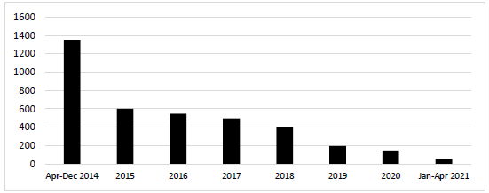
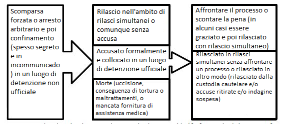
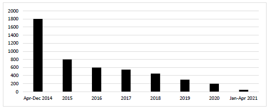

DETENZIONE ARBITRARIA, TORTURA E MAL TRATTAMENTO NEL CONTESTO DEL CONFLITTO ARMATO IN UCRAINA ORIENTALE 2014-2021
Contenuti
- Sintesi 1
- Terminologia 3
- Metodologia 4
- Quadro giuridico 4
- Contesto 6
- Detenzioni arbitrarie, comprese detenzioni segrete e in incommunicado, torture e maltrattamenti da parte di attori del Governo 7
- Scala della detenzione legata al conflitto 7
- Detenzioni arbitrarie , tortur e e maltrattamenti 8
- Perpetratori 10
- Luoghi di detenzione 10
- Detenzioni arbitrarie, comprese detenzioni segrete e in incomunicado, torture e maltrattamenti da parte di gruppi armati e altri attori in territorio controllato dalle autoproclamate "repubbliche" 12
- Scala della detenzione legata al conflitto 12
- Detenzioni arbitrarie, torture e maltrattamenti 13
- Perpetratori 14
- Luoghi di detenzione 15
- Indagini Nazionali 17
- Indagine nel territorio controllato dalle auto-proclamate 'repubbliche' 18
- Rimedio e risarcimento delle vittime 18
- Al Parlamento dell’ Ucraina 19
- Al Governo dell’ Ucraina 19
- Alle auto-proclamate 'repubbliche': 19
- Alla comunità internazionale 20
Allegato I. Detenzioni arbitrarie, comprese detenzione segrete e in incommunicado, torture e maltrattamenti da parte di attori del Governo in Charkiv SBU in 2014-2016 21
Allegato II. Detenzioni arbitrarie e in incommunicado, torture e maltrattamenti da parte di gruppi armati al centro di detenzione 'Izoliatsiia' a Donetsk nel 2014-2021 36
-
Sintesi
- Questa relazione tematica dell'Alto Commissario delle Nazioni Unite per i Diritti Umani (OHCHR) esamina: 1) l'entità della detenzione nel contesto della conflitto armato nell'Ucraina orientale da parte di attori governativi e gruppi armati e altri attori nel territorio controllato dall' auto-proclamata "Repubblica popolare di Donetsk" e l'auto-proclamata "Repubblica popolare di Luhansk"1 dal 14 aprile 2014 al 30 aprile 2021; 2) la prevalenza e le modalità di detenzione arbitraria connessa al conflitto, tra cui lla detenzione segreta e in incommunicado; 3) la prevalenza e i modelli di torture e maltrattamenti correlati ai conflitti, compresa le violenze sessuale connessa ai conflitti; e 4) responsabilità per queste violazioni, compresi i rimedi e il risarcimento alle vittime. Il rapporto presenta anche due casi studio emblematici di detenzioni arbitrarie connesse al conflitto, torture e maltrattamenti, uno nel dipartimento regionale di Kharkiv del Servizio di Sicurezza dell'Ucraina (allegato I) e il secondo nella struttura di detenzione di "Izoliatsiia" nel Donetsk controllato da gruppi armati (allegato II). Casi di detenzione arbitraria, torture e maltrattamenti nella Repubblica autonoma di Crimea e nella città di Sebastopoli, Ucraina, occupata dalla Federazione Russa 2 avvenuti in seguito all' occupazione e che sono ancora in corso non rientrano nell'ambito della presente relazione. Questi casi sono stati esamintati dal OHCHR con rapporti periodici sulla situazione dei diritti umani in Ucraina e relazioni tematiche sulla situazione dei diritti umani in Crimea, nonché nei rapporti del Segretario Generale delle Nazioni Unite sulla situazione dei diritti umani in Crimea. 3
- Il rapporto si basa sui risultati delle Missione delle Nazioni Unite per il Monitoraggio dei Diritti Umani in Ucraina (HRMMU)4 e mira a promuovere l'eradicazione delle attuali pratiche di detenzione arbitraria, tortura e maltrattamenti legati al conflitto, a prevenire future violazioni dei diritti umani ed a stimolare ulteriori sforzi per portare i perpetratori di fronte alla giustizia e fornire alle vittime rimedio e risarcimento.
- L'OHCHR stima il numero totale di detenzioni legate a conflitti in Ucraina dal 14 aprile 2014 al 30 aprile 2021 tra 7.900 e 8.700 (con uomini di cui circa l'85 per cento e le donne il 15 per cento dei detenuti): 3.600- 4.000 da attori governativi e 4.300-4.700 da gruppi armati e altri attori in territorio controllato dalle autoproclamate “repubbliche”. Queste cifre includono individui che hanno preso parte alle ostilità, nonché civili detenuti per aver supportato o essere sospettati di aver supportato le forze avversarie o semplicemente a causa della loro posizione anti-ucraina o pro-ucraina, così come altre persone la cui detenzione è stata direttamente o indirettamente collegato al conflitto.
- L'OHCHR stima che circa il 60% delle detenzioni legate a conflitti siano avvenute durante i primi due anni del conflitto, nel 2014 e nel 2015: circa 2.000 detenzioni da parte di attori del Governo e circa 3.000 detenzioni da parte di gruppi armati e altri attori nel territorio controllato dalle auto-proclamate 'repubbliche'. Dal 2016 al 2021, il numero annuale di detenzioni legate al conflitto è sostanzialmente diminuito sia nel territorio controllato dal Governo che nel territorio controllato dalle autoproclamate "repubbliche", ad una media di diverse centinaia all'anno.
- L'OHCHR stima che circa il 60 per cento di tutte le detenzioni legate al conflitto da parte degli attori del Governo dal 2014 al 2021 (circa 2.300) sono state arbitrarie e la maggior parte di queste si è verificata durante il periodo iniziale del conflitto (2014-2015). Queste detenzioni arbitrarie spesso non hanno rispettato alcun procedimento legale, violando così
1 Di seguito denominata «Repubblica popolare di Donetsk» e «Repubblica popolare di Luhansk» oppure congiuntamente denominate "repubbliche" autoproclamate.
2 Di seguito riferito a come Crimea.
3 Più recentemente, Segretario generale delle Nazioni Unite, Rapporto 2021 sulla situazione dei diritti umani nella Repubblica Autonoma di Crimea e nella città di Sebastopoli, Ucraina, parr. 11-14 (A/HRC/47/58).
4 Distribuito il 14 marzo 2014 su invito del governo ucraino, HRMMU è incaricato di “monitorare la situazione dei diritti umani nel Paese, con particolare attenzione alla Repubblica autonoma di Crimea, regioni orientali e meridionali dell'Ucraina e fornire relazioni periodiche, accurate e pubbliche dell'Alto Commissario sulla situazione dei diritti umani e sulle preoccupazioni e rischi emergenti”. HRMMU ha anche il compito di “raccomandare una concreta lista di azioni alle autorità competenti dell'Ucraina, delle Nazioni Unite e della comunità internazionale per affrontare le preoccupazioni sui diritti umani, prevenire le violazioni dei diritti umani e mitigare l'emergere di rischi”.
tutti i diritti a giusto processo dei detenuti e spesso comportavano la reclusione in luoghi di detenzione non ufficiali, compresa la detenzione segreta e in incommunicado, per periodi brevi o prolungati. Tali detenzioni sono state effettuate principalmente in luoghi come le sedi del SBU a Kramatorsk, Mariupol e Kharkiv e in altre località, tra cui le basi militari negli aeroporti di Mariupol e Kramatorsk.
- Dal 2016, la prevalenza della detenzione arbitraria connessa al conflitto da parte delgi attori del Governo sono sostanzialmente diminuiti. Dalla fine del 2016, l'OHCHR non ha osservato una continuazione della pratica di trattenere a lungo i detenuti legati a conflitti in luoghi di detenzione non ufficiali. La durata della detenzione arbitraria connessa al conflitto documentato dall'OHCHR di solito durava diversi giorni, spesso in appartamenti in affitto, stanze di hotel o luoghi simili, dopodiché venivano formalizzate le detenzioni e gli individui venivano trasferiti in strutture ufficiali di detenzione della polizia (ITT) o in strutture di custodia cautelare (SIZO).
- Per quanto riguarda le detenzioni legate al conflitto da parte di gruppi armati e altri attori in territorio controllato dalle autoproclamate “repubbliche”, durante le fasi iniziali della conflitto, queste mancavano di qualsiasi parvenza di processo legale, mentre un approccio più formalizzato è stato osservato dal 2015, con l'introduzione dell’ “arresto amministrativo” (nel territorio controllato dalla “Repubblica popolare di Donetsk”) e “detenzione preventiva” (nel territorio controllato dalla “Repubblica popolare di Luhansk”). Nei 532 casi documentati di detenzioni connesse ai conflitti, l'OHCHR ha rilevato l'assenza di procedure adeguate per la detenzione amministrativa o il mancato rispetto delle garanzie ad un equo processo in "casi" penali e ha riscontrato che la grande maggioranza di tali casi ammontava alla detenzione arbitraria. Ad aprile 2021, la detenzione arbitraria è rimasta una quotidiana presenza nel territorio controllato da sedicenti “repubbliche”.
- Nel 2014 e all'inizio del 2015 vari gruppi armati hanno utilizzato più di 50 centri di detenzione improvvisati (spesso genericamente indicati come “seminterrati”) per trattenere i detenuti, ma la pratica è stata gradualmente interrotta e i detenuti legati al conflitto sono stati quindi trattenuti in un numero limitato di strutture appositamente designate. In alcune di queste strutture, ad esempio le sedi dei "ministeri della sicurezza dello Stato" a Donetsk e Luhansk, e nel centro di detenzione "Izoliatsiia" a Donetsk, sono state eseguite sistematicamente torture e maltrattamenti.
- Analizzando oltre 1.300 casi individuali di detenzione per conflitti, L'OHCHR ha riscontrato una forte correlazione tra la detenzione arbitraria legata al conflitto e la tortura e maltrattamenti sia nel territorio controllato dal Governo che nel territorio controllato dalle sedicenti “repubbliche”. Nei casi documentati dall'OHCHR che avvennero durante le fasi iniziali del conflitto, nel 2014 e nel 2015, i detenuti erano spesso sottoposti a tortura e maltrattamenti (rispettivamente il 74 per cento delle persone detenute da attori governativi e l'82,2 e l'85,7 per cento nel territorio controllato dalla " repubblica popolare del Donetsk” e nel territorio controllato dalla “Repubblica popolare di Luhansk”). I detenuti legati al conflitto hanno affrontato spesso anche condizioni di detenzione deplorevoli che equivalevano a un trattamento disumano e degradante, spesso in strutture di detenzione improvvisate come cantine, garage, edifici industriali, veicoli e pozzi aperti. Dopo il 2016 torture o maltrattamenti nei casi di detenzione arbitraria sono diventate meno comune su entrambi i lati della linea di contatto.
- L'OHCHR stima il numero totale di detenuti legati a conflitti sottoposti a torture e maltrattamenti dal 2014 al 2021 sia circa 4.000 (circa 3.400 uomini e ca. 600 donne), comprese circa 340 vittime di violenza sessuale (190-230 uomini e 120-140 donne): circa 1.500 da parte di attori del governo e circa 2.500 da gruppi armati e altri attori nel territorio controllato da autoproclamati 'repubbliche'.
- Sia in territorio controllato dal Governo che in territorio controllato da autoproclamati "repubbliche", torture e maltrattamenti, comprese violenze sessuali legate ai conflitti, sono state usate per estorcere confessioni o informazioni, o comunque per forzare i detenuti a cooperare, oltre che a fini punitivi, per umiliare e intimidire, e per estorcere denaro e proprietà.
- Metodi di tortura e maltrattamenti su entrambi i lati della linea di contatto includevano percosse, asfissia secca e umida, folgorazione, violenze sessuali su uomini e donne (come stupro, nudità forzata e violenza ai genitali), tortura posizionale, privazione di acqua,
cibo, sonno o servizi igienici, isolamento, finte esecuzioni, uso prolungato di manette, incappucciamento e minacce di morte o ulteriori torture o violenze sessuali o danni ai familiari.
- Tra gli attori del governo, l'autore più comune di detenzioni arbitrarie, torture e maltrattamenti è stato il Servizio di Sicurezza dell'Ucraina (SBU), che ha svolto un ampio ruolo di coordinamento nell'operazione antiterrorismo ed è stato responsabile delle indagini sui crimini di terrorismo . Nelle fasi iniziali del conflitto, anche battaglioni di volontari erano tra gli autori regolari.
- Nel territorio controllato da sedicenti "repubbliche", i principali perpetratori di detenzioni arbitrarie, torture e maltrattamenti nelle fasi iniziali del conflitto sono stati vari gruppi armati e, successivamente, membri dei "ministeri della sicurezza dello Stato".
- Dal 2014, l'OHCHR ha goduto di libero accesso ai luoghi di detenzione ufficiali nel territorio controllato dal governo. La mancanza di accesso di osservatori internazionali indipendenti dei diritti umani ai luoghi di detenzione non ufficiali nel territorio controllato dal governo che esisteva dal 2014 al 2016, e l'assenza di accesso riservato ai luoghi di detenzione e ai detenuti nel territorio controllato dalle autoproclamate "repubbliche" durante il conflitto ha privato le vittime di una protezione aggiuntiva.
- Il diritto a un ricorso effettivo è stato minato dalla mancanza di indagini efficaci sulle accuse di detenzione arbitraria, tortura e maltrattamenti, compresa le violenze sessuale connesse ai conflitti. Il numero di persone responsabili di queste violazioni è piccolo rispetto al numero stimato di violazioni e indica l'impunità prevalente per gli autori. Allo stesso modo, il diritto delle vittime al risarcimento del danno subito, che comporta il risarcimento e la riabilitazione, comprese le cure mediche e psicologiche e l'accesso ai servizi legali e sociali, rimane in gran parte insoddisfatto.
-
Terminologia
- Ai fini della presente relazione, “detenzione connessa ai conflitti” si riferisce alla privazione della libertà nel contesto del conflitto armato nell'Ucraina orientale. Copre la detenzione di individui che hanno preso parte alle ostilità nelle regioni di Donetsk e Luhansk, la detenzione di civili per il sostegno reale o sospetto alle forze avversarie o semplicemente per le loro posizioni anti-ucraine o filo-ucraine, nonché altre detenzioni direttamente o indirettamente legato al conflitto. 5
- La "detenzione in incommunicado" si verifica quando a un detenuto non è consentito alcun contatto con il mondo esterno.6 "Detenzione segreta" si riferisce alla detenzione in incommunicado quando l'entità detenente rifiuta di confermare, nega o nasconde attivamente la detenzione stessa, o si rifiuta di fornire o nasconde attivamente informazioni sul destino o sul luogo in cui si trova il detenuto. 7
- Per “violenza sessuale connessa al conflitto” si intende lo stupro, la schiavitù sessuale, la prostituzione forzata, la gravidanza forzata, l'aborto forzato, la sterilizzazione forzata, il matrimonio forzato e qualsiasi altra forma di violenza sessuale di gravità comparabile perpetrata contro donne, uomini, ragazze o ragazzi che sia direttamente o indirettamente collegata a un conflitto. 8 Il termine comprende anche la tratta di persone a scopo di violenza sessuale e/o sfruttamento, quando commessa in situazioni di conflitto.
5 Si vedano gli esempi alla nota 45 di seguito.
6 Studio congiunto delle pratiche globali in relazione alla detenzione segreta nel contesto della lotta al terrorismo da parte del Relatore Speciale sulla promozione e protezione dei diritti umani e delle libertà fondamentali nella lotta al terrorismo, del Relatore Speciale sulla tortura e altri trattamenti crudeli, disumani o degradanti o di punizione, il Gruppo di Lavoro sulla Detenzione Arbitraria e il Gruppo di Lavoro sulle Sparizioni Forzate o Involontarie (di seguito “Studio congiunto”), par. 8 (A/HRC/13/42).
7 Ibid.
8 Rapporto del Segretario generale delle Nazioni Unite sulla violenza sessuale connessa ai conflitti, 30 marzo 2021, S/2021/312, par. 5.
-
Metodologia
- La presente relazione si basa su oltre 1.300 casi individuali di detenzione connesse al conflitto, compresa la detenzione segreta e in incommunicado, e tortura e maltrattamenti, incluse le violenze sessuali connessa al conflitto, perpetrati da attori del Governo e da gruppi armati e altri attori nel territorio controllato da le autoproclamate "repubbliche" documentate dall'OHCHR dal 2014 al 2021. Le informazioni sono state raccolte durante le visite sul campo, le visite ai luoghi di detenzione e le interviste alle vittime e ai testimoni di violazioni dei diritti umani, nonché ai parenti delle vittime e ai loro avvocati, rappresentanti del governo , membri della società civile e altri interlocutori. Il rapporto attinge anche da informazioni ottenute da atti giudiziari, atti ufficiali, fonti aperte e altro materiale pertinente.
- Le stime relative alle detenzioni legate a conflitti si basano su informazioni ufficiali delle forze dell'ordine ucraine, informazioni pubblicamente disponibili provenienti da vari organi di sedicenti "repubbliche", informazioni ottenute tramite riunioni dell'HRMMU, rapporti di ONG per i diritti umani e altri dati affidabili e credibili fonti
- Le informazioni sul numero assoluto di violazioni dei diritti umani nel contesto della detenzione connessa a conflitti dovrebbero essere considerate alla luce di diversi fattori restrittivi: accesso limitato dell'HRMMU ai potenziali intervistati tra il 2014 e il 2015; nessun accesso riservato di HRMMU ai detenuti nel territorio controllato da sedicenti "repubbliche"; e normali ritardi tra la commissione della violazione dei diritti umani e la relativa documentazione. Inoltre, da marzo 2020 in poi, le restrizioni relative al COVID hanno limitato la capacità di HRMMU di comunicare con vittime, testimoni e altri interlocutori.
- I risultati dell'OHCHR si basano su informazioni verificate ottenute da fonti primarie e secondarie che sono ritenute credibili e affidabili. I risultati sono inclusi nel rapporto in cui è soddisfatto lo standard di prova "ragionevoli motivi per credere", vale a dire quando, sulla base di un corpus di informazioni verificate, un osservatore normalmente prudente avrebbe ragionevoli motivi per ritenere che i fatti si siano svolti come descritto, e quando si traggono conclusioni legali, che questi fatti soddisfino tutti gli elementi di una violazione. L'OHCHR ottiene e verifica le informazioni attraverso una varietà di mezzi in linea con la sua metodologia e basa le sue conclusioni su singoli casi verificati.
- Le informazioni contenute nella presente relazione sono utilizzate nel pieno rispetto del consenso informato da parte di tutte le fonti per quanto riguarda il loro utilizzo, nonché la valutazione dell'OHCHR di qualsiasi rischio di danno che tale utilizzo potrebbe causare.
-
Quadro giuridico
- L'OHCHR ha analizzato gli eventi fattuali coperti dalla presente relazione alla luce delle norme e degli standard pertinenti del diritto internazionale dei diritti umani9 , del diritto umanitario internazionale10 e del diritto penale internazionale11
9 . È possibile accedere allo stato della ratifica degli strumenti sui diritti umani da parte dell'Ucraina all'indirizzo: tbinternet.ohchr.org/_layouts/15/TreatyBodyExternal/Treaty.aspx?CountryID=183&Lang=EN
10 . In situazioni di conflitto armato, le parti in conflitto sono vincolate dalle norme applicabili del diritto internazionale umanitario, sia consuetudinario che basato su trattati: quattro Convenzioni di Ginevra del 1949 e due Protocolli addizionali del 1977 ad esse, e il diritto internazionale umanitario consuetudinario (articolo comune 3 delle Convenzioni di Ginevra e gli articoli 87-138 e 140 del diritto internazionale umanitario consuetudinario sono particolarmente rilevanti per le violazioni esaminate nel presente rapporto). Le regole del diritto internazionale umanitario consuetudinario sono state individuate dal Comitato Internazionale della Croce Rossa nel volume I (regole) del suo studio sul diritto internazionale umanitario consuetudinario (Cambridge University Press 2005), e sono disponibili all'indirizzo: ihldatabases.icrc.org/ consuetudine-ihl/eng/docs/v1
11 L'Ucraina ha firmato lo Statuto di Roma della Corte penale internazionale nel 2000. L'8 settembre 2015, ai sensi dell'articolo 12, paragrafo 3, dello Statuto di Roma, il governo ucraino ha accettato la giurisdizione della Corte penale internazionale in relazione ai presunti crimini commessi sulla sua territorio dal 20 febbraio 2014 senza data di fine. Nel 2016, il Parlamento ucraino ha adottato emendamenti alla Costituzione dell'Ucraina, che consentono la ratifica dello Statuto
- Sebbene i gruppi armati e altri attori non statali non possano diventare parti di strumenti internazionali sui diritti umani, è accettato che quando questi esercitano funzioni simili a quelle di un governo ed esercitano un controllo su un territorio, questi debbano rispettare gli standard in materia di diritti umani quando la loro condotta influenzi i diritti umani di individui sotto il loro controllo. 12
- La detenzione è arbitraria quando la privazione della libertà avviene al di fuori dei confini delle leggi riconosciute a livello nazionale o degli standard internazionali. 13 L'“arbitrarietà” della detenzione si riferisce all'inappropriatezza, all'ingiustizia, alla mancanza di prevedibilità e al giusto processo della legge, nonché alla mancanza di ragionevolezza , necessità e proporzionalità. 14
- La detenzione arbitraria è vietata dal diritto internazionale dei diritti umani e dal diritto internazionale umanitario.15 La detenzione di sicurezza (a volte nota come detenzione amministrativa) autorizzata, regolata e conforme al diritto internazionale umanitario in linea di principio non è arbitraria. 16 La detenzione prolungata in incommunicado può facilitare la perpetrazione di tortura e altri trattamenti o punizioni crudeli, disumani o degradanti, e può di per sé costituire tale trattamento. 17 La detenzione segreta è inconciliabile con il diritto internazionale dei diritti umani e il diritto internazionale umanitario. Si tratta di una multiforme violazione dei diritti umani che non può essere giustificata in nessuna circostanza. 18
- Il divieto di tortura e di altri trattamenti crudeli, disumani o degradanti è assoluto; e non è consentita la deroga19 , sia in stato di guerra che in pericolo di guerra, instabilità politica interna o qualsiasi altra emergenza pubblica.20 Il diritto internazionale umanitario vieta la tortura nei conflitti armati sia internazionali che non internazionali.21 Secondo lo Statuto di Roma , tortura e trattamenti crudeli, disumani
di Roma; tali modifiche sono entrate in vigore nel 2018. Al 30 aprile 2021 lo Statuto di Roma non è stato ratificato dall'Ucraina..
12 La Commissione internazionale d'inchiesta indipendente sulla Repubblica araba siriana ha concluso che “come minimo, gli obblighi in materia di diritti umani che costituiscono il diritto internazionale perentorio (jus cogens) vincolano Stati, individui ed entità collettive non statali, compresi i gruppi armati. Gli atti che violano lo jus cogens – ad esempio la tortura o le sparizioni forzate – non possono mai essere giustificati (A/HRC/19/69, par. 106). Il Comitato delle Nazioni Unite per l'eliminazione della discriminazione nei confronti delle donne ritiene che “[…] laddove un gruppo armato con una struttura politica identificabile esercita un controllo significativo sul territorio e sulla popolazione, gli attori non statali sono obbligati a rispettare i diritti umani internazionali” (Raccomandazione generale n. 30, 2013). Il Consiglio di sicurezza delle Nazioni Unite ha ricordato a tutte le parti in conflitto nella Repubblica Democratica del Congo "[...] che devono attenersi agli standard umanitari internazionali e garantire il rispetto dei diritti umani nei settori che controllano" e ha indicato che "l'RCD-GOMA deve... assicurare la fine di tutte le violazioni dei diritti umani e l'impunità in tutti i settori sotto il suo controllo” (dichiarazione del Presidente del Consiglio, S/PRST/2002/22(2002)).
13 Comitato per i diritti umani, Commento generale n. 35, par. 10-12.
14 Ibidem, par. 23.
15 Patto internazionale sui diritti civili e politici, articolo 9; HRC, Commento generale n. 35, par. 10-23; Banca Dati CICR sul Diritto Internazionale Umanitario Consuetudinario, norma 99.
16 La “detenzione di sicurezza” è la privazione della libertà di un individuo non in previsione di un procedimento penale. Ha lo scopo di affrontare, nelle circostanze più eccezionali, una minaccia presente, diretta e imperativa in cui misure alternative non sarebbero sufficienti. Tale detenzione deve essere limitata nel tempo, non oltre lo stretto necessario, e nel pieno rispetto delle garanzie previste dal diritto internazionale dei diritti umani. Comitato per i diritti umani, Commento generale n. 35..
17 17. Risoluzione dell'Assemblea Generale delle Nazioni Unite 60/148, 21 febbraio 2006.
18 Studio congiunto, par. 17.
19 19. L'OHCHR prende atto della notifica da parte del governo ucraino al Segretario generale delle Nazioni Unite il 20 ottobre 2015, che l'applicazione e l'attuazione da parte dell'Ucraina dei suoi obblighi ai sensi di 16 trattati, inclusa la Convenzione contro la tortura, "è limitata e non è garantita" su un territorio ritenuto occupato e non controllato, e che tale situazione continuerà ad applicarsi fino al completo ripristino della sovranità dell'Ucraina sul suo territorio, è contraria alla natura inderogabile del divieto di tortura.
20 Patto internazionale sui diritti civili e politici, articolo 4(2), Convenzione contro la tortura, articolo 2(2).
21 .Il divieto di “oltraggi alla dignità personale”, “violenza alla vita e alla persona, in particolare omicidio di ogni genere, mutilazioni, trattamenti crudeli e torture” è riconosciuto nei Protocolli Aggiuntivi I e II, nonché nell'articolo 3 della Quarta Ginevra Convenzione, come garanzia fondamentale per i civili e le persone fuori combattimento.
o degradanti possono costituire un crimine di guerra o un crimine contro l'umanità in determinate circostanze. 22
-
Contesto
- A seguito degli eventi di Maidan dal novembre 2013 al febbraio 2014 che hanno portato all’ allontanamento del presidente Viktor Yanukovich e all'occupazione della Crimea da parte della Federazione Russa 23 , all'inizio di aprile 2014 gruppi di persone armate hanno iniziato a sequestrare edifici governativi nelle regioni del Donetsk e Luhansk. Dopo aver ottenuto il controllo su alcuni insediamenti, questi gruppi armati hanno proclamato la creazione della "Repubblica Popolare di Donetsk" e della "Repubblica Popolare di Luhansk". L'11 maggio 2014, entrambe le autoproclamate "repubbliche" hanno tenuto referendum per convalidare i loro "atti di indipendenza".
- I referendum non sono stati riconosciuti dal governo dell'Ucraina, né dalla comunità internazionale, che continuano a rispettare la sovranità, l'unità e l'integrità territoriale dell'Ucraina entro i suoi confini riconosciuti. In risposta al sequestro delle strutture amministrative nelle regioni di Donetsk e Luhansk, il governo ha lanciato l'Operazione Anti-Terrorismo (ATO) 24 a metà aprile 2014. Le ostilità tra le forze governative e i gruppi armati, sostenuti dalla Federazione Russa, hanno rapidamente raggiunto il livello di un conflitto armato. 25 Il conflitto armato ha provocato non solo vittime militari e civili e danni sostanziali a oggetti e infrastrutture civili, ma anche detenzioni su vasta scala, comprese detenzioni arbitrarie, segrete e in incommunicado, torture e maltrattamenti dei detenuti, comprese violenze sessuali legate ai conflitti..
- L'OHCHR ritiene che la portata e la gravità di queste violazioni dei diritti umani siano state esacerbate dalla tortura endemica già esistente e dai maltrattamenti di detenuti in Ucraina prima del 2014, 26 e dal collasso dell'ordine pubblico nella zona di conflitto.
22. Statuto di Roma, articolo 8, comma 2, lettere a), ii), iii) e c) i) ii) e articolo 7 a), f) e k).
23 . Il 27 febbraio 2014, uomini in uniforme senza insegne hanno preso il controllo del Parlamento della Crimea, che ha immediatamente destituito il governo della Crimea. L'11 marzo 2014 i parlamenti di Crimea e Sebastopoli hanno adottato una Dichiarazione di Indipendenza congiunta, che ha unito le entità per formare la "Repubblica di Crimea". A seguito di un referendum del 16 marzo 2014 sulla questione se cercare l'integrazione nella Federazione Russa, il 18 marzo 2014 la Federazione Russa e la "Repubblica di Crimea" hanno firmato un "trattato di adesione" annettendo di fatto la penisola alla Federazione Russa . L'Assemblea Generale delle Nazioni Unite ha dichiarato nullo il referendum, sottolineando che non poteva costituire la base per alcuna alterazione dello status della Crimea, e ha riaffermato l'unità di sovranità e l'integrità territoriale dell'Ucraina entro i suoi confini internazionalmente riconosciuti (Risoluzione 68/262 del 27 marzo 2014). Per ulteriori informazioni sul contesto dell'occupazione della Crimea, cfr. OHCHR, Rapporto sulla situazione dei diritti umani nella Repubblica Autonoma di Crimea temporaneamente occupata e nella città di Sebastopoli (Ucraina), parr. 20-28. Per la questione del controllo effettivo sulla Crimea e dell'analisi giuridica della condotta delle forze militari russe in Crimea, cfr. Corte europea dei diritti umani, Ucraina c. Russia (riferimento Crimea), Decisione (Grande Camera), 16 dicembre 2020, parr. 315-349.
24 . Presidente dell'Ucraina, Sulla decisione del Consiglio nazionale per la sicurezza e la difesa del 13 aprile 2014 relativa a misure ad alta priorità per affrontare le minacce terroristiche e garantire l'integrità territoriale dell'Ucraina, Decreto n. 405/2014, 14 aprile 2014, disponibile su zakon2.rada .gov.ua/laws/show/405/2014
25 . L'Ufficio del procuratore della Corte Penale Internazionale (OTP ICC) ha valutato che entro il 30 aprile 2014 l'intensità delle ostilità tra le forze governative e i gruppi armati nell'Ucraina orientale aveva raggiunto un livello tale da consentire l'applicazione della legge sui conflitti armati e che i gruppi armati erano sufficientemente organizzati per qualificarsi come parti in un conflitto armato non internazionale. L'Ufficio ha inoltre valutato che l'impegno militare diretto tra le forze armate della Federazione Russa e dell'Ucraina "indicava l'esistenza di un conflitto armato internazionale nell'Ucraina orientale almeno dal 14 luglio 2014, parallelamente al conflitto armato non internazionale". OTP ICC, Report on Preliminary Examination Activities 2019, 5 dicembre 2019, par. 266. L'OHCHR ha documentato la presenza di militari delle forze armate russe nella zona di conflitto dell'Ucraina orientale nel 2014 e nel 2015. L'OHCHR, Rapporto sulla sitazione dei diritti umani in Ucraina, dal 16 maggio al 15 agosto 2015, par. 59; OHCHR, relazione tematica sulle violazioni e abusi dei diritti umani e sulle violazioni del diritto umanitario internazionale commesse nel contesto degli eventi di Ilovaisk nell'agosto 2014, par. 78
26 Cfr., ad esempio, Comitato contro la tortura, Conclusioni e raccomandazioni a seguito dell'esame del quinto rapporto periodico dell'Ucraina (CAT/C/UKR/CO/5, 3 agosto 2007), par. 9.
Gli attori armati sembravano inconsapevoli dei loro obblighi ai sensi del diritto internazionale dei diritti umani e del diritto umanitario internazionale, e c'era una mancanza di controllo sugli attori armati e si riteneva che alcuni comandanti fossero complici. L'incitamento all'odio e la disinformazione volti a disumanizzare e demonizzare le parti opposte hanno provocato un'atmosfera di odio e incitamento alla violenza.
- L'assenza di permesso di accesso agli osservatori internazionali indipendenti per i diritti umani ai luoghi di detenzione non ufficiali nel territorio controllato dal Governo dal 2014 al 2016, e l'assenza di accesso riservato di osservatori internazionali a luoghi di detenzione e detenuti nel territorio controllato dalle autoproclamate "repubbliche" durante tutto il periodo del conflitto hanno privato le vittime di una protezione aggiuntiva. 27
- In Crimea, individui contrari all'occupazione della Federazione Russa o critici nei confronti delle politiche della Federazione Russa applicate nella penisola, come giornalisti, blogger, sostenitori del Mejlis e attivisti filo-ucraini e Maidan, sono stati presi di mira e spesso sono diventati vittime di detenzione arbitraria, tortura e maltrattamenti da parte di agenti statali della Federazione Russa. Per un periodo di tre settimane dopo il rovesciamento delle autorità ucraine in Crimea, le violazioni dei diritti umani verificatesi nella penisola sono state per lo più attribuite a membri dell'autodifesa della Crimea e a vari gruppi cosacchi. Dopo l'occupazione temporanea della Crimea, i Rappresentanti del Servizio di Sicurezza Federale della Crimea della Federazione Russa (FSB) e la polizia sono stati più frequentemente citati come responsabili. 28 L'OHCHR ha riscontrato che erano state utilizzate torture mediante percosse, folgorazione, asfissia, finte esecuzioni e violenze sessuali, presumibilmente da agenti statali russi, contro persone detenute o nel periodo compreso tra la loro privazione de facto della libertà e il collocamento formale in detenzione. 29
- Casi individuali di detenzione arbitraria, tortura e maltrattamenti in Crimea sono stati descritti nei rapporti periodici dell'OHCHR e nei rapporti tematici sulla situazione dei diritti umani in Ucraina 30, nonché nei rapporti del Segretario generale delle Nazioni Unite sulla situazione dei diritti umani in Crimea.31
-
Detenzioni arbitrarie, comprese detenzioni segrete e in incommunicado, torture e maltrattamenti da parte di attori del Governo
“Siamo il KGB. Parla! Perché ti comporti come Zoya Kosmodemyanskaya 32 ?
Ufficiale SBU a un detenuto trattenuto incomunicato in Kramatorsk SBU
-
Enitità della detenzione connessa al conflitto
- L'OHCHR stima che dall'avvio dell'ATO a metà aprile 2014 fino al 30 aprile 2021, gli attori del Governo abbiano detenuto da 3.600 a 4.000 persone nel contesto del conflitto armato.
Numero stimato di detenzioni legate a conflitti da parte di attori governativi, 2014-2021
27 Nel 2014, 2016 e 2017, in diverse occasioni, HRMMU ha avuto accesso ad alcuni detenuti, ma tale accesso non era riservato e HRMMU non è stato in grado di intervistarli in privato.
28 OHCHR, Rapporto sulla situazione dei Diritti Umani nella Repubblica autonoma di Crimea temporaneamente occupata e nella città di Sebastopoli (Ucraina), 25 settembre 2017, par. 11.
29 Rapporto sulla situazione dei Diritti Umani nella Repubblica autonoma di Crimea temporaneamente occupata e nella città di Sebastopoli (Ucraina), 10 settembre 2018, par. 5.
30 I rapporti dell'OHCHR sull'Ucraina sono disponibili all'indirizzo: www.ohchr.org/EN/Countries/ENACARegion/Pages/UAReports.aspx
31 Cfr., ad esempio, Segretario generale delle Nazioni Unite, Rapporto 2020 sulla situazione dei diritti umani nella Repubblica autonoma di Crimea e nella città di Sebastopoli, Ucraina, parr. 12-15 (A/HRC/44/21).
32 Partigiana sovietica giustiziata dai tedeschi nel dicembre 1941, nota per il suo rifiuto di fornire informazioni nonostante le severe torture.

- La maggior parte delle detenzioni legate al conflitto da parte di attori governativi ha avuto luogo nelle regioni di Donetsk e Luhansk, nonché nelle regioni orientali e sudorientali (Dnipropetrovsk, Kharkiv, Kherson, Odesa e Zaporizhzhia) e a Kiev. La durata delle detenzioni legate al conflitto variava da alcune ore a diversi anni. Gli uomini rappresentavano circa l'85% di tutti i detenuti legati al conflitto e le donne il 15%. Le detenzioni di bambini legate al conflitto sono state rare e di breve durata, stimate in dozzine di casi, principalmente nelle fasi iniziali del conflitto e principalmente in relazione al loro presunto sostegno a gruppi armati.
- Gli individui detenuti da attori governativi possono essere classificati come: 1) membri di gruppi armati di sedicenti "repubbliche" e altri individui che hanno preso parte alle ostilità contro le forze governative (compresi cittadini ucraini e cittadini di altri paesi); 2) individui che non hanno preso parte alle ostilità ma si credeva stessero sostenendo gruppi armati fornendo loro informazioni di intelligence o altro supporto; e 3) "funzionari" di sedicenti "repubbliche" e altri individui le cui azioni si riteneva giovassero alla creazione o al funzionamento di "repubbliche" autoproclamate o comunque minassero l'integrità territoriale dell'Ucraina.
- I detenuti legati a conflitti che sono stati accusati sono stati il più delle volte accusati degli articoli 2583 (creazione di un gruppo o organizzazione terroristica) e 260 (creazione di formazioni paramilitari o armate illegali) del codice penale. Altre accuse frequenti erano gli articoli 110 (violazione dell'integrità territoriale e inviolabilità dell'Ucraina), 111 (alto tradimento), 113 (sabotaggio) e 258 (atto di terrorismo).
- Si stima che al 30 aprile 2021, 3.100 persone che sono state detenute dal 2014 da attori governativi nel contesto di un conflitto armato siano state rilasciate, attraverso rilasci simultanei condotti ai sensi degli accordi di Minsk 33 o in altro modo.34 Si stima che circa 500 persone stiano scontando condanne o rimangono in custodia cautelare e circa 100-150 sono stati uccisi o sono morti durante la detenzione.
-
Detenzioni arbitrarie, torture e maltrattamenti
Detenzione arbitraria
- L'OHCHR stima che circa il 60% di tutte le detenzioni legate a conflitti da parte di attori governativi dal 2014 al 2021 (circa 2.300) sono state arbitrarie, poiché non soddisfacevano le garanzie previste dagli standard internazionali sui diritti umani, nonostante fossero codificate nel diritto interno. 35 La maggior parte di essi si è verificata durante il periodo iniziale del conflitto (2014-2015), quando le detenzioni legate a conflitti includevano
33 Tra il 2014 e il 2020, il Governo ha rilasciato almeno 1075 persone e le autoproclamate 'repubbliche' hanno rilasciato almeno 1.499 persone nel corso di diverse decine di rilasci simultanei effettuati sulla base del par. 6 del Pacchetto di Misure per l'Attuazione degli Accordi di Minsk che mirava a "garantire il rilascio e lo scambio di tutti gli ostaggi e le persone detenute illegalmente, sulla base del principio 'tutti per tutti'", peacemaker.un.org/sites/peacemaker. un.org/files/UA_150212_MinskAgreement_en.pdf.
34 Liberato senza alcuna accusa formale; o dopo che l'indagine è stata sospesa; o a seguito di sentenza di assoluzione o non detentiva; o dopo aver scontato una pena o aver ottenuto la libertà condizionale.
35 Come l'arresto senza mandato del tribunale; piantare prove, come bombe a mano o colpi di fucile, per giustificare l'arresto; detenzione per più di 72 ore senza sanzione giudiziaria; nessun accesso alla consulenza legale; nessuna possibilità di informare i parenti della detenzione; reclusione in luoghi di detenzione non ufficiali, spesso segreti e incommunicado, ecc.
sparizioni forzate, detenzione senza mandato del tribunale e reclusione in luoghi di detenzione non ufficiali36 , spesso segreti e in incommunicado. Lo schema seguente illustra i cambiamenti tipici della situazione delle persone soggette a detenzione arbitraria che ha comportato la reclusione in luoghi di detenzione non ufficiali nel periodo 2014-2015.

- La situazione ha iniziato a migliorare nella seconda metà del 2015, sia in termini di rispetto del codice di procedura penale, sia in termini di minore utilizzo di luoghi di detenzione non ufficiali. Da dicembre 2016, quando gli ultimi detenuti sono stati rilasciati dalla SBU di Kharkiv, l'OHCHR non ha registrato alcun confinamento prolungato in luoghi di detenzione non ufficiali. Nella maggior parte dei casi individuali documentati dal 2017 al 2021, la durata della detenzione arbitraria non ha superato diversi giorni, con persone solitamente detenute in appartamenti in affitto, camere d'albergo o luoghi simili prima di essere trasferite in luoghi di detenzione ufficiali, come ITT o SIZO.
Tortura e maltrattamenti
- Dall'inizio del conflitto armato, i detenuti coinvolti nel conflitto hanno subito torture e maltrattamenti da parte di attori del Governo. Da aprile 2014 al 30 aprile 2021, l'OHCHR ha documentato la detenzione di 767 persone (655 uomini e 112 donne), il 68,8% delle quali (528, di cui 456 uomini e 72 donne) hanno subito torture o maltrattamenti, inclusa violenza sessuale legata ai conflitti. L'estrapolazione di queste proporzioni al numero totale stimato di detenzioni arbitrarie legate al conflitto da parte di attori governativi durante l'intero periodo del conflitto (2.300) indica che ci sarebbero state circa 1.500 vittime di torture e maltrattamenti legati al conflitto.
- Il sessanta per cento di tutti i casi di tortura e maltrattamenti da parte di attori governativi documentati dall'OHCHR si sono verificati tra il 2014 e il 2015; Il 74% delle persone detenute arbitrariamente durante quel periodo è stato torturato o maltrattato.
- Secondo le vittime intervistate dall'OHCHR, tortura e maltrattamenti sono stati utilizzati per estorcere confessioni o informazioni, o per far cooperare in altro modo i detenuti, nonché a fini punitivi, per umiliare e intimidire ed estorcere denaro e proprietà.
- I metodi di tortura e maltrattamenti includevano percosse, asfissia a secco e a umido, folgorazione, violenza sessuale su uomini e donne, tortura posizionale, privazione di acqua, cibo, sonno o servizi igienici, isolamento, finte esecuzioni, uso prolungato di manette, incappucciamento, e minacce di morte o di ulteriori torture o di violenze sessuali, o di fare del male ai familiari. In molti casi, soprattutto nelle fasi iniziali del conflitto, la tortura o il maltrattamento dei singoli detenuti è stato esacerbato dalle cattive condizioni di detenzione, che di per sé spesso si sono trasformate in maltrattamenti. 37
36 La legge “Sulla custodia cautelare” stabilisce che i detenuti possono essere trattenuti solo negli ITT gestiti dal Ministero dell'Interno, nei SIZO gestiti dal Ministero della Giustizia e nei corpi di guardia militari gestiti dal Ministero della Difesa – con l'unica eccezione una struttura di custodia cautelare della SBU a Kiev in Askoldiv Lane, 3A, che funziona ufficialmente sin dai tempi prebellici a causa di lacune nella legislazione.
37 Cfr., ad esempio, OHCHR, Relazione tematica sulla responsabilità degli omicidi in Ucraina da gennaio 2014 a maggio 2016, par. 101; OHCHR, Rapporto sulla situazione dei diritti umani in Ucraina, dal 16 agosto al 15 novembre 2015, par. 51; e OHCHR, Rapporto sulla situazione dei diritti umani in Ucraina, dal 16 novembre 2015 al 15 febbraio 2016, parr. 52 e 87.
Violenze sessuali legata al conflitto
- Delle 767 persone in detenzione a causa di conflitti nel territorio controllato dal governo i cui casi sono stati documentati dall'OHCHR da metà aprile 2014 al 30 aprile 2021, 35 (18 uomini e 17 donne), ovvero il 4,6 per cento (4,3 per cento di detenuti maschi e il 15,2 per cento delle detenute donne), sono stati oggetto di violenze sessuali legate al conflitto (stupri, scosse elettriche ai genitali, calci ai genitali, nudità forzata, toccamenti indesiderati, minacce di violenza sessuale alle vittime e alle loro parenti femmine) .
- Se estrapolato al numero totale stimato di detenzioni arbitrarie legate a conflitti da parte di attori governativi (2.300), il numero di vittime di violenze sessuali legate a conflitti potrebbe essere stimato a 140-170, inclusi 80-100 uomini e 60-70 donne . Molte volte, è difficile per i sopravvissuti a violenze sessuali farsi avanti e condividere le proprie esperienze a causa della paura di essere stigmatizzati o di rappresaglie. Pertanto, le cifre effettive potrebbero essere più elevate.
-
Perpetratori
- L'OHCHR ha identificato un'ampia gamma di attori governativi coinvolti in detenzioni arbitrarie, torture e maltrattamenti legati a conflitti, tra cui: SBU; varie unità (spesso non specificate) delle Forze armate ucraine (UAF); Guardia Nazionale; Polizia Nazionale; Servizio di guardia di frontiera dello Stato; battaglioni di volontari prima e dopo la loro incorporazione formale nell'UAF, nella Guardia Nazionale o nella Polizia Nazionale (come il battaglione 'Aidar', il battaglione 'Artemivsk', il battaglione/reggimento 'Azov'; il battaglione 'Dnipro-1'; battaglione 'Dnipro-2', battaglione 'Donbas'; battaglione 'Kharkiv-1'; e battaglione 'Poltava'); e altre unità armate che hanno preso parte alle ostilità o erano presenti nelle regioni di Donetsk e Luhansk nel contesto del conflitto armato senza essere formalmente incorporate nell'UAF, nella Guardia nazionale o nella polizia nazionale (come il "Settore Destro").
- In molti casi, le vittime non sono state in grado di identificare l'affiliazione delle persone che le hanno detenute o torturate. In alcuni casi, gli autori di reati appartenevano a più strutture e agivano insieme in modo che un individuo fosse vittima di molteplici violazioni da parte di più autori.
- Il ruolo preminente svolto dalla SBU nelle detenzioni arbitrarie, nella tortura e nei maltrattamenti legati ai conflitti potrebbe essere attribuito al fatto che questo ha coordinato l'ATO, ha indagato sui reati di cui all'articolo 258 (atto di terrorismo) del Codice Penale come assegnato dalla legge, e al mancato controllo dell'accusa. 38
- Gli ex detenuti legati al conflitto raramente conoscevano i nomi, i gradi e le posizioni delle persone complici delle loro detenzioni arbitrarie, torture e maltrattamenti. Tuttavia, attraverso le interviste con gli ex detenuti, l'OHCHR ha documentato informazioni su dozzine di segnali di chiamata e descrizioni visive di questi individui.
-
Luoghi di detenzione
- L'OHCHR stima che la detenzione arbitraria, inclusa la detenzione segreta e in incommunicado, da parte di attori governativi sia avvenuta in oltre 30 luoghi di detenzione, che variavano in termini di tipo, dimensioni, durata dell'operazione e entità che li gestiscono. Ex detenuti legati al conflitto hanno informato l'OHCHR di essere stati arbitrariamente detenuti nei locali amministrativi della SBU, come a Kharkiv, Kramatorsk, Lysychansk, Mariupol, Sievierodonetsk e Sloviansk; distretti di polizia e locali amministrativi, come a Druzhkivka, Toretsk (poi Dzerzhynsk), Kostiantynivka, Rubizhne e Volnovakha; basi militari temporanee nella zona di conflitto condivisa da UAF, SBU e battaglioni di volontari, come a Kramatorsk e aeroporti di Mariupol, Izium e vicino a Sievierdonetsk; basi militari permanenti nella zona di conflitto; basi ad hoc condivise da battaglioni e SBU, come Krasnoarmiisk ATP 39; "prigioni improvvisate" di battaglioni, come il salumificio nel villaggio di Polovynkyne
38 Secondo la SBU, nell'ambito delle sue indagini penali, non si sono verificate violazioni dei diritti procedurali di soggetti sospettati di reati gravi; la tortura ed i maltrattamenti non sono stati e non vengono utilizzati durante le azioni investigative; le detenzioni sono effettuate solo su decisioni giudiziarie pertinenti; e i detenuti sono tenuti solo nei luoghi di detenzione ufficiali.
39 ATP sta per «impresa automobilistica e dei trasporti».
gestito dal battaglione "Aidar"; posti di blocco militari; piccoli luoghi di detenzione ad hoc al di fuori dei locali della SBU; luoghi di detenzione ufficiali (per lo più ITT); sanatori, come "Zelenyi Hai"; e scuole, come la scuola n. 61 di Mariupol. La struttura di detenzione non ufficiale più nota gestita dalla SBU dal 2014 al 2016 è stata la sede del suo dipartimento regionale di Kharkiv (vedi allegato I).
- Gli osservatori indipendenti dei diritti umani generalmente non hanno avuto accesso a questi locali. Nei rari casi in cui è stato concesso l'accesso ai monitori del Meccanismo Nazionale di Prevenzione (NPM), sono stati previsti ritardi che hanno consentito il trasferimento temporaneo dei detenuti. Queste strutture di detenzione non ufficiali sono state sottoposte a una supervisione dell'accusa, nulla o nominale. Ad esempio, il procuratore militare di Kharkiv ha indagato sulle accuse dell'esistenza di una struttura di detenzione segreta nei locali del dipartimento regionale della SBU Kharkiv e ha visitato i locali nel marzo 2015, ma ha trovato le celle vuote. L'OHCHR ha intervistato un certo numero di ex detenuti che hanno descritto di essere stati trattenuti in questa struttura e, prima della visita del procuratore militare, di essere stati rimossi dalle loro celle da ufficiali della SBU e collocati temporaneamente nel seminterrato e in altri luoghi all'interno dell'edificio. 40
- Le condizioni di detenzione in queste strutture variavano, da quelle che assomigliavano alla detenzione ufficiale in un SIZO, a quelle inumane e degradanti a tal punto da danneggiare permanentemente la salute fisica e mentale dei detenuti. 41 A conoscenza dell'OHCHR, entro il 2017, tutte queste strutture hanno smesso di trattenere i detenuti legati al conflitto, con l'eccezione del sanatorio "Zelenyi Hai" nella regione di Donetsk, che è stato utilizzato per ospitare temporaneamente i detenuti prima del rilascio simultaneo. 42
Aeroporto di Mariupol
Nel 2014, in seguito allo scoppio del conflitto armato nell'Ucraina orientale, l'aeroporto di Mariupol è stato trasformato in una base militare utilizzata da UAF, SBU e alcuni battaglioni di volontari e parti dei suoi locali sono state utilizzate come struttura di detenzione. Ad oggi, l'OHCHR ha documentato 21 casi individuali (19 uomini e due donne) di detenzione, tortura e maltrattamenti arbitrari e in incommunicado avvenuti all'aeroporto di Mariupol dal 2014 fino alla prima metà del 2016. L'OHCHR ritiene che centinaia di detenuti siano stati detenuti lì prima essere trasferiti in altre strutture di detenzione, ufficiali o non ufficiali, o essere rilasciati. Nel corso del 2014, la durata della detenzione in aeroporto variava da alcune ore a un mese. Successivamente, i detenuti sono stati trattenuti solo per periodi fino a 24 ore.
Nella maggior parte dei casi documentati, i detenuti non sono stati informati dei motivi del loro arresto o delle accuse mosse contro di loro. Ai detenuti è stato negato l'accesso a consulenti legali o contatti con il mondo esterno, ad eccezione di un caso in cui ad una detenuta è stato fornito un avvocato il terzo giorno di detenzione in aeroporto.
I detenuti sono stati trattenuti in celle frigorifere non funzionanti – stanze interrate senza finestre, di dimensioni 8-10 mq e piastrellate con lastre di ceramica. L'assenza di ventilazione ha reso difficile la respirazione, provocando la perdita di conoscenza in alcuni detenuti. Secondo un ex detenuto trattenuto in una cella frigorifera nel 2014, a un certo punto, 14 detenuti sono stati trattenuti in questo piccolo spazio. Ai detenuti non veniva regolarmente fornito cibo e acqua e talvolta veniva loro negato l'accesso alla toilette. Diversi detenuti hanno riferito di aver sentito le urla di altri che venivano torturati.
Ex detenuti hanno riferito di essere stati sottoposti a tortura e maltrattamenti per estorcere confessioni o ottenere informazioni, o per punirli per la loro reale o presunta appartenenza a gruppi armati. Nella maggior parte dei casi, i perpetratori indossavano passamontagna, consentendo loro di rimanere anonimi.
I metodi di tortura più frequenti includevano percosse con oggetti duri (bastoni, pistole o calci di fucile), pugni, calci in varie parti del corpo (ginocchia, petto o testa); elettrocuzione; simulazione di esecuzione sparando a un detenuto con proiettili a salve o sparando accanto a un detenuto con proiettili veri; costrizione a scavare la propria fossa a un detenuto; e insulti verbali.
Durante la sua visita in Ucraina nel giugno 2015, l'Assistente Segretario Generale delle Nazioni Unite per i Diritti Umani ha tentato di accedere all'aeroporto di Mariupol senza preavviso, ma i militari gli hanno negato l'ingresso. Nel 2017, HRMMU ha visitato il territorio dell'aeroporto e non ha trovato segni che i suoi locali fossero ancora utilizzati come struttura di detenzione.
40 OHCHR, Rapporto sulla situazione dei Diritti Umani in Ucraina, dal 16 febbraio al 15 maggio 2015, par. 47.
41 OHCHR, Rapporto sulla situazione dei Diritti Umani in Ucraina, dal 16 novembre 2017 al 15 febbraio 2018, Allegato II, parà. 7.
42 Cfr. allegato I, par. 27 e 57-58.
-
Detenzioni arbitrarie, comprese detenzioni segrete e in incomunicado, torture e maltrattamenti da parte di gruppi armati e altri attori in territorio controllato dalle autoproclamate "repubbliche"
“Le mie gambe sono permanentemente gonfie a causa delle percosse e posizioni di stress. Ho parzialmente perso la vista e tutti i miei denti a causa delle percosse e le fratture del naso non sono mai guarite "
Un ex detenuto di 'mgb' in Luhansk
-
Entità della detenzione connessa al conflitto
- L'OHCHR stima che da metà aprile 2014 fino al 30 aprile 2021, gruppi armati e altri attori di autoproclamate "repubbliche" abbiano detenuto da 4.300 a 4.700 persone nel contesto del conflitto armato nell'Ucraina orientale. 43 Si stima che gli uomini comprendessero l’ 85 per cento di tutti i detenuti legati a conflitti e le donne il 15 per cento. Le detenzioni di bambini legate al conflitto sono state rare, stimate in decine, principalmente durante le fasi iniziali del conflitto.
- I detenuti erano per lo più 1) persone fuori combattimento (membri catturati di UAF o battaglioni di volontari o altri individui che stavano prendendo parte alle ostilità dalla parte delle forze governative); 2) civili accusati di sostenere il governo ucraino o di opinioni filo-ucraine 44; e 3) altre persone detenute nel contesto del conflitto armato.45
Numero stimato di detenzioni legate a conflitti da parte di gruppi armati e altri attori nel territorio controllato dalle autoproclamate "repubbliche", 2014-2021 
- Si stima che al 30 aprile 2021 circa 3.800-4.000 detenuti legati a conflitti siano stati rilasciati, mentre circa 300-400 persone siano rimaste in detenzione (in "arresto amministrativo" o "detenzione preventiva", o in "indagine" , o stiano scontando le loro "condanne") e si stima che 200-300 persone siano state uccise o siano morte durante la detenzione.
43 Oltre a questi, dall'estate 2014 fino all'aprile 2021, si stima che almeno 3.000 civili siano stati detenuti nel territorio controllato dalle autoproclamate 'repubbliche' per reati comuni, nonché centinaia di membri di gruppi armati e 'funzionari' di le autoproclamate “repubbliche” la cui detenzione era collegata al loro “servizio”. Si stima inoltre che nell'estate del 2014, 16.000 detenuti e prigionieri in attesa di giudizio erano rimasti nelle SIZO di Donetsk e Luhansk e nelle colonie penali nel territorio controllato dalle autoproclamate "repubbliche", di cui circa 8.000 hanno continuato a scontare la pena al 30 aprile 2021. Questi detenuti non sono inclusi nelle statistiche presentate in questa sezione.
44 Compresi coloro la cui detenzione in base a tali accuse era in realtà di estorcere loro proprietà o denaro.
45 Ad esempio, da metà aprile al 18 luglio 2014, almeno 717 persone sono state detenute da gruppi armati. Tra questi: 46 giornalisti, 112 agenti di polizia, 26 rappresentanti della Missione speciale di monitoraggio dell'OSCE in Ucraina, 22 deputati, membri di partiti politici e capi di consigli distrettuali (comunali), cinque dipendenti dell'ufficio del procuratore, due avvocati, due giudici, un impiegato del servizio penitenziario e altre 481 persone. I gruppi armati hanno anche catturato 91 soldati e guardie di frontiera, oltre a quattro ufficiali della SBU. Cfr. OHCHR, Rapporto sulla situazione dei diritti umani in Ucraina, dall'8 giugno al 15 luglio 2014, par. 33.
-
Detenzioni arbitrarie, torture e maltrattamenti
Detenzione arbitraria
- Durante le fasi iniziali del conflitto, nel 2014 e nel primo trimestre del 2015, i rapimenti e le detenzioni legati al conflitto sono stati effettuati da diversi gruppi armati, molti dei quali erano del tutto autonomi dal comando centrale di Donetsk e Luhansk. Queste detenzioni non avevano alcuna parvenza di procedimento legale e in molti casi si trattava di sparizioni forzate.
- Dalla fine del 2014, la detenzione connessa al conflitto da parte di gruppi armati e altri attori nel territorio controllato dalle autoproclamate "repubbliche" è stata sempre più formalizzata, con individui detenuti per lo più da entità designate delle "forze dell'ordine" (come i “ministeri della sicurezza dello Stato” ). Inizialmente sono stati detenuti in regime di «arresto amministrativo» (nel territorio controllato dalla «Repubblica popolare di Donetsk») o «detenzione preventiva» (nel territorio controllato dalla «Repubblica popolare di Luhansk») 46 , che in molti casi equivalevano a sparizioni forzate. Furono poi rilasciati o accusati in base a vari articoli dei «codici penali» delle autoproclamate «repubbliche». 47
- Nei 532 casi documentati di detenzione connessa a conflitti, l'OHCHR ha rilevato l'assenza di procedure adeguate per la detenzione amministrativa48 o il mancato rispetto delle garanzie di un equo processo nei "casi" penali, sollevando così serie preoccupazioni sul fatto che la grande maggioranza di tali casi costituisse arbitraria detenzione.
- Le accuse più comuni contro detenuti in conflitto sono state "spionaggio", "istigazione all'odio", "deposito di esplosivi", "atto terroristico", "assistenza ad attività terroristiche" e "inviti pubblici ad attività estremiste" nel territorio controllato dalla "Repubblica popolare di Donetsk" e "creazione di un'organizzazione criminale", "acquisizione e deposito illegali di armi o munizioni", "tradimento di stato" e "acquisizione illegale di informazioni comprendenti segreti di stato" nel territorio controllato dalla "repubblica popolare di Luhansk”.
Torture e maltrattamenti
- L'OHCHR ha documentato la detenzione connessa al conflitto di 532 persone (447 uomini e 85 donne) dal 2014 al 30 aprile 2021, 281 delle quali (249 uomini e 32 donne) sono state sottoposte a tortura o maltrattamenti, comprese violenze sessuali legate al conflitto. Dei 281 casi di tortura e maltrattamenti documentati dall'OHCHR, il 49,5% (139) si è verificato nel 2014 o nel 2015. 49
- Del totale di questi casi documentati, hanno comportato torture e/o maltrattamenti il 51,1 per cento di quelli nel territorio controllato dalla "Repubblica popolare di Donetsk" e il 56,3 per cento di quelli nel territorio controllato dalla "Repubblica popolare di Luhansk". 50 Questo è stato più prevalente nel 2014 e nel 2015, durante i quali l'82,2% dei casi documentati di detenzione arbitraria nel territorio controllato dalla "Repubblica popolare di Donetsk" e l'85,7% nel territorio controllato dalla "Repubblica popolare di Luhansk" hanno comportato torture e/o maltrattamenti .
46 Secondo la “legislazione” delle autoproclamate “repubbliche”, le persone possono essere trattenute in “arresto amministrativo” o “detenzione preventiva” per accertare il loro coinvolgimento in “crimini contro la sicurezza nazionale” su decisione unilaterale di un “investigatore” o “ procuratore”. Prevedono l'arresto fino a 30 giorni (estendibili a 60 giorni), durante i quali viene condotta un'"indagine". Il detenuto è tenuto in isolamento, senza che nessun soggetto eserciti alcuna forma di controllo giudiziario sulla detenzione. L'OHCHR ha riscontrato che nella maggior parte dei casi ai parenti non sono state fornite informazioni sulla detenzione.
47 OHCHR, Rapporto sui diritti umani nell'amministrazione della giustizia nei procedimenti penali connessi ai conflitti, aprile 2014 – aprile 2020, parr. 101-102.
48 Ibid, par. 107-111.
49 Poiché molti casi sono stati documentati con notevoli ritardi nel tempo e la capacità di HRMMU e il suo accesso a potenziali intervistati nel 2014 e 2015 è stata limitata, le cifre non possono essere considerate rappresentative di tutti i casi, il che sarebbe più elevato.
50 In assenza di accesso riservato ai luoghi di detenzione e ai detenuti nel territorio controllato dalle autoproclamate 'repubbliche' e in assenza di rilasci simultanei nel 2020-2021, in molti casi documentati dall'OHCHR ha potuto solo documentare l'arbitrarietà delle detenzioni, ma non se i detenuti siano stati torturati o maltrattati; è quindi probabile che la prevalenza della tortura o dei maltrattamenti tra i detenuti in conflitto nel territorio controllato dalle autoproclamate "repubbliche" sia maggiore.
- L'estrapolazione delle proporzioni 2014-2021 rispetto al numero totale stimato di detenzioni legate al conflitto da parte di gruppi armati e altri attori nel territorio controllato da sedicenti "repubbliche" durante l'intero periodo del conflitto (4.500) indica che ci sono state circa 2.500 vittime di torture e maltrattamenti legati ai conflitti.
- Nei casi documentati dall'OHCHR, gruppi armati e altri attori nel territorio controllato dalle autoproclamate "repubbliche" hanno ampiamente utilizzato la tortura e i maltrattamenti per estorcere confessioni o informazioni, o per costringere in altro modo i detenuti a cooperare, nonché a fini punitivi fini, per umiliare e intimidire, o per estorcere denaro e proprietà.
- I metodi di tortura e maltrattamenti descritti dalle vittime all'OHCHR includevano percosse, asfissia secca e umida, folgorazione, violenza sessuale su uomini e donne, tortura posizionale, privazione di acqua, cibo, sonno o servizi igienici, isolamento, finte esecuzioni, prolungato uso di manette, incappucciamento e minacce di morte o di ulteriori torture o di violenze sessuali o di fare del male ai familiari. In molti casi, soprattutto nelle fasi iniziali del conflitto, la tortura o il maltrattamento dei singoli detenuti è stato esacerbato dalle cattive condizioni di detenzione, che di per sé spesso si sono trasformate in maltrattamenti. 51
Violenza sessuale legata al conflitto
- Dei 532 individui detenuti da gruppi armati e altri attori nel territorio controllato da sedicenti "repubbliche" i cui casi sono stati documentati dall'OHCHR, 21 (14 uomini e sette donne), ovvero il 3,9 per cento (3,1 per cento dei maschi detenuti e l'8,2 per cento delle donne detenute), sono state oggetto di violenze sessuali legate al conflitto (stupri, scosse elettriche ai genitali, calci ai genitali, nudità forzata, toccamenti indesiderati, minacce di violenza sessuale alle vittime e alle loro parenti femmine).
- Se estrapolato al numero totale stimato di detenzioni legate a conflitti da parte di gruppi armati e altri attori nel territorio controllato dalle autoproclamate "repubbliche" (4.300-4.700), il numero di vittime di violenze sessuali legate a conflitti nel contesto di detenzione potrebbe essere stimato a 170-200, di cui 110-130 uomini e 60-70 donne. Molte volte, è difficile per i sopravvissuti a violenze sessuali farsi avanti e condividere le proprie esperienze a causa della paura di essere stigmatizzati o di rappresaglie. Pertanto, le cifre effettive potrebbero essere più elevate.
-
Perpetratori
- Un'ampia gamma di gruppi armati e altri attori coinvolti in detenzioni arbitrarie legate al conflitto, torture e maltrattamenti nel territorio controllato dalle autoproclamate "repubbliche" dal 2014 al 2021. In 532 casi documentati dall'OHCHR, i seguenti autori sono stati individuati:
- Nel territorio controllato dalla "Repubblica popolare di Donetsk": "primo corpo d'armata della milizia popolare", "guardia repubblicana", gruppo armato guidato da Igor Bezler, "prima brigata slava", "brigata Kalmius", "brigata Novorossiya", " Battaglione Oplot', 'Battaglione somalo', 'Battaglione Sparta', 'Battaglione Vostok', 'Esercito ortodosso russo', vari gruppi cosacchi, 'Ministero della sicurezza dello Stato ('mgb'), 'Dipartimento per la lotta alla criminalità organizzata' (ubop' ) del «ministero degli affari interni», «polizia» e «servizio penitenziario».
- Nel territorio controllato dalla «Repubblica popolare di Luhansk»: «secondo corpo d'armata della milizia popolare», «battaglione Prizrak», «battaglione Batman», «battaglione Leshiy», «battaglione Zaria», «battaglione Brianka SSSR», «primo reggimento cosacco', altri gruppi cosacchi, 'ministero della sicurezza dello stato ('mgb'), 'ministero degli affari interni', 'polizia' e 'servizio penitenziario'.
- Gli elenchi di cui sopra non sono esaustivi in quanto si ritiene che anche altri gruppi o attori armati siano complici di detenzioni arbitrarie, torture e maltrattamenti. L'OHCHR ha anche accumulato informazioni considerevoli sui singoli responsabili. Molti
51 OHCHR, Rapporto sulla situazione dei diritti umani in Ucraina, dall'1 al 30 novembre 2014, par. 41; OHCHR, Rapporto sulle violazioni e abusi dei diritti umani e violazioni del diritto umanitario internazionale commesse nel contesto degli eventi di Ilovaisk dell’ agosto 2014, parr. 98-127.
detenuti hanno indicato che i cittadini della Federazione Russa, compresi gli "ufficiali dell'FSB", erano complici della loro detenzione arbitraria, tortura e maltrattamenti. 52
-
Luoghi di detenzione
-
Dall'aprile 2014 sono emersi numerosi nuovi luoghi di detenzione nel territorio controllato da gruppi armati oltre a ITT, SIZO e colonie penali preesistenti dove continuavano a essere detenuti detenuti e prigionieri
prebellici. L'OHCHR ha individuato oltre 50 nuove strutture di questo tipo (spesso denominate genericamente "seminterrati"
53
) che hanno operato per periodi che andavano da diversi giorni o mesi a più di un anno e che per lo più hanno cessato di funzionare entro il 2016. Tuttavia, le strutture più grandi - le ex sedi del
dipartimento regionale SBU a Donetsk in via Shchorsa 62, gli ex locali dell'unità militare n. 3037 a Donetsk in via Kuprina 1, l'ex centro d'arte "Izoliatsiia" a Donetsk in via Svitloho
Shliakhy 3 e gli ex locali del dipartimento regionale SBU in Luhansk in via Radianska 79 - hanno continuato a funzionare fino al 30 aprile 2021. I detenuti legati al conflitto sono stati trattenuti anche alle SIZO di
Donetsk e Luhansk e in una serie di colonie penali, come le colonie Makiivka n. 32 e n. 97, la colonia di Torez n. 28 , colonia Horlivka n. 87 e colonia Snizhne n. 127.
Ex locali SBU a Luhansk
Dopo lo scoppio del conflitto armato nell'Ucraina orientale nel 2014, i locali del dipartimento regionale SBU nella regione di Luhansk sono stati utilizzati da membri di gruppi armati e successivamente da "mgb". L'OHCHR ha documentato 57 casi di detenzione, tortura e maltrattamenti arbitrari e in incommunicado (che hanno colpito 47 uomini e 10 donne) che si sono verificati lì dal 2014 all'aprile 2021. Fino la fine di aprile 2021, questi locali hanno continuato ad essere utilizzati per la detenzione di detenuti correlati ai conflitti.
I detenuti sono stati trattenuti in sotterranei senza finestre, con pavimenti in cemento e letti di metallo. Almeno alcune stanze erano dotate di wc e lavandino.54 I detenuti ricevevano tre pasti al giorno di scarso valore nutritivo, di solito porridge e acqua calda. Potevano fare la doccia una volta alla settimana e avere accesso all'aria fresca per un'ora alla settimana. I detenuti venivano incappucciati o bendati prima di essere portati nell'edificio e quando camminavano fuori dal seminterrato veniva loro posto un sacco sulla testa. Durante l'epidemia di COVID, l'amministrazione della struttura non avrebbe osservato le misure di prevenzione.
I detenuti maschi sono stati detenuti in incommunicado per periodi compresi tra due giorni a più di un anno. Ad esempio, nel 2016, un uomo ha trascorso otto mesi in incommunicado senza "accuse" o ordini di un "tribunale". L'OHCHR è anche a conoscenza di dieci donne detenute per periodi compresi tra due ore e due mesi. Durante il periodo iniziale di detenzione, il "mgb" ha spesso rifiutato di riconoscere l'arresto o la detenzione, il che può equivalere a una sparizione forzata. Le persone trattenute in "detenzione preventiva" non potevano ricevere pacchi con cibo e medicine o accedere a un avvocato.
Durante gli interrogatori ai piani superiori dell'edificio, i detenuti sono stati spesso sottoposti a tortura e maltrattamenti, compresa la violenza sessuale, per costringerli a confessare o come punizione per la cooperazione reale o presunta con la SBU. I metodi di tortura includevano: percosse con diversi oggetti (bastoni, stivali, pugni, cavi, calci di fucile, mazze); elettrocuzione; simulazioni di esecuzioni, minacce nei loro confronti e nei confronti dei loro familiari, comprese minacce di morte; privazione di cibo e acqua per tre o quattro giorni. Un ex detenuto trattenuto nel 2017 ha detto all'OHCHR "Le persone stavano morendo lì" mentre descriveva la struttura.
A titolo di esempio, nel luglio 2014, tre uomini del battaglione "Leshiy" hanno picchiato un detenuto con mazze e pistole e lo hanno sottoposto a una finta esecuzione mettendogli una pistola in bocca per sequestrare la sua proprietà. Per tre giorni dopo, non gli fu dato né cibo né acqua. Nel novembre 2016 diversi agenti della ‘mgb’ hanno picchiato per diverse ore un disabile con un bastone su tutto il corpo e con un libro alla testa per costringerlo a confessare di
52 Il termine "ufficiali dell' FSB" è usato come abbreviazione dai detenuti per indicare chiunque loro credevano provenisse e agisse per conto della Federazione Russa. I detenuti hanno basato le loro dichiarazioni sull'accento russo della persona o su altre caratteristiche che distinguevano queste persone dai residenti in Ucraina.
53 "Seminterrato" era un nome comune per le strutture di detenzione improvvisate, come spesso lo erano i detenuti tenuto nei sotterranei di vari edifici amministrativi occupati da attori armati. Un comune minaccia era "mandare nel seminterrato". Non ogni struttura di detenzione improvvisata era in a seminterrato.
54 Nel 2014, detenuti erano consentito a utilizzo il wc due volte un giorno, e altrimenti Usato plastica boccette
per urinare. In uno Astuccio, 20 persone erano tenuto in un piccolo cellula insieme a quattro letti. In un altro Astuccio, una donna è stata tenuta insieme a quattro uomini e fatta lavare i pavimenti e i servizi igienici del corridoio Due o tre volte.
cooperare con la SBU. Di conseguenza, la sua mano destra è diventata insensibile, la retina ha iniziato a staccarsi dall'occhio destro ed era "tutto blu" con lividi, tuttavia ha detto all'OHCHR di soffrire a malapena rispetto ad altri detenuti. Nel febbraio 2018, gli agenti di "mgb" hanno strangolato e fulminato un uomo attaccando fili elettrici a diverse parti del corpo, compresi i genitali, lo hanno picchiato e minacciato di prendere i suoi figli e imprigionare sua madre, finché non "ha firmato tutto". Alcuni detenuti sono stati portati in cella privi di sensi a causa delle pesanti percosse; alcuni sono stati portati fuori e non sono mai ritornati.
Nel 2019 e nel 2020, l'OHCHR ha continuato a ricevere informazioni su detenzioni arbitrarie, torture e maltrattamenti in questi locali, comprese percosse con manganelli, folgorazioni e simulazioni di esecuzioni al fine di estorcere confessioni.
L'OHCHR osserva che, a causa del timore di ritorsioni da parte del "mgb", le persone rilasciate spesso non sono disposte a parlare delle loro esperienze. Prima del loro rilascio, i detenuti devono firmare un accordo per non divulgare informazioni sulla loro detenzione e trattamento. Sono avvertiti di non condividere informazioni se non vogliono "affrontare conseguenze" e "responsabilità".
-
Responsabilità
-
Il diritto internazionale sui diritti umani e il diritto internazionale umanitario obbligano gli stati a indagare sulle violazioni in modo efficace, tempestivo, completo e imparziale e, se opportuno, ad agire contro i
presunti responsabili in conformità con il diritto interno e internazionale. Alle vittime di violazioni dei diritti umani o del diritto umanitario deve essere garantito un accesso equo ed effettivo alla giustizia,
indipendentemente da chi possa essere in ultima analisi responsabile della violazione. Alle vittime devono inoltre essere forniti rimedio e compensazione per il danno subito.
55
Esperienza delle vittime
Dal 2014, l'OHCHR ha documentato diverse dozzine di casi in cui individui sono stati sottoposti a detenzioni arbitrarie, torture e maltrattamenti su entrambi i lati della linea di contatto. Uno di questi casi, emblematico anche in termini di mancanza di responsabilità, è qui descritto.
Una donna che risiedeva nel villaggio controllato dal governo di Trokhizbenka nella regione di Luhansk aveva una relazione con un militare ucraino. Dopo che è diventato noto ai gruppi armati, hanno iniziato a chiamarla al telefono e a minacciarla. Il 19 settembre 2017 si è recata a Slovianoserbsk, controllata da un gruppo armato, insieme alla sua amica. Lì sono stati arrestati e portati in un "dipartimento di polizia". I rappresentanti della "polizia" hanno picchiato le due donne e le hanno accusate di essere sabotatori inviate dalle forze dell'ordine ucraine e di chiamarle "troie dei soldati ucraini". L'amica della donna è stata picchiata in testa con una cartella di alcuni materiali del caso. La mattina dopo, un alto ufficiale di "polizia" ha urlato ai suoi subordinati: "Perché stai giocando con loro? Dovresti solo sparargli”. Più tardi, due uomini del 'mgb'56 hanno detto alle donne che se non avessero detto chi li aveva mandati, sarebbero annegati nel fiume Sieverskyi Donets. Hanno anche avvertito che sapevano dove viveva la figlia della donna. Volevano sapere quanti militari ucraini erano a Trokhizbenka. La donna è stata infine costretta a firmare un accordo di cooperazione.
Quando la donna è tornata nel territorio controllato dal Governo, ha raccontato al suo partner e alla polizia cosa le era successo. La polizia le ha detto di mantenere i contatti con l'agente "mgb" che l'ha interrogata "per interessarlo" e "per sapere cosa vuole". Il 13 ottobre 2017, le donne e il suo compagno sono stati trattenuti da uomini in passamontagna, messi in diversi veicoli e portati a casa “per una perquisizione” senza che gli venissero presentati documenti. Gli ufficiali della SBU non hanno cercato nulla ma hanno solo preso i telefoni di lei e del suo partner. È stata accusata di aver tentato di trasmettere informazioni militari sensibili e segrete ai gruppi armati su una chiavetta USB. La SBU non le ha permesso di chiamare i suoi parenti e ha ignorato le sue richieste di avere un avvocato e di chiamare persone che potessero attestare la sua innocenza. È stata interrogata da agenti della SBU che l'hanno colpita più volte alla testa con un pugno. Quando si è rifiutata di parlare, l'ufficiale della SBU ha iniziato a picchiarla in testa ancora più forte. Come lei ha ricordato, "aveva le stelle davanti agli occhi", in seguito a causa di queste percosse ha sentito un dolore al cuore. Poi è stata portata nel seminterrato di una struttura a Novoaidar o Sievierodonetsk, dove è stata costretta a fare una falsa testimonianza video autoincriminante; veniva colpita ogni volta che deviava da ciò che ci si aspettava che fosse detto davanti alla telecamera. Dopo le 22:00 dello stesso giorno, è stata portata alla SBU di Sievierdonetsk. L'ufficiale della SBU la avvertì di non lamentarsi con un avvocato, che sarebbe arrivato presto: "L'avvocato verrà e se ne andrà, ma io rimarrò".
55 Principi di Base e Linee Guida sul Diritto a un Rimedio e al Risarcimento per le Vittime di Gravi Violazioni del Diritto Internazionale sui Diritti Umani e Gravi Violazioni del Diritto Umanitario Internazionale, par. 3.
56 Quando è stato chiesto con chi stessero parlando, gli uomini hanno detto: “Siamo di Luhansk. Faresti meglio a non sapere a quale servizio apparteniamo ".
Alle 2:30 del 14 ottobre l'hanno portata fuori e trasferita a Leopoli. Il 17 ottobre 2017 è stata trasferita al SIZO di Leopoli. L'8 ottobre 2020, dopo un lungo processo, si è dichiarata colpevole temendo "una vera condanna". Il 5 ottobre 2020, il tribunale distrettuale di Novoaidarskyi l'ha dichiarata colpevole e condannata a tre anni di reclusione (sospesa).
-
Indagini Nazionale
- Il governo ucraino ha dichiarato la sua ferma determinazione a indagare su tutti i crimini commessi nel contesto del conflitto armato nell'Ucraina orientale, comprese la privazione illegale della libertà, la tortura e i maltrattamenti, comprese le violenze sessuali legate al conflitto, e ad assicurare i colpevoli alla giustizia indipendentemente della loro affiliazione. 57 Le statistiche fornite dall'Ufficio del Procuratore Generale indicano alcuni progressi in tali indagini.
- Ad esempio, tra il 15 marzo 2014 e il 15 febbraio 2016, l'Ufficio del procuratore militare ha indagato su 11 omicidi, 12 casi di tortura e 27 casi di privazione illegale della libertà presumibilmente commessi da membri di battaglioni di volontari che partecipano all'ATO. Nel caso emblematico del battaglione di polizia "Tornado" (ex "Shakhtarsk", sciolto nel 2014 per violazione dei diritti umani), 12 comandanti e soldati sono stati accusati di privazione illegale della libertà, tortura ed eccesso di autorità e nel 2017 sono stati condannato a diverse pene detentive.
- Secondo l'Ufficio del procuratore generale, tra il 1 aprile 2014 e il 31 maggio 2018, i pubblici ministeri militari hanno indagato su 45 casi di omicidi, che hanno causato lesioni personali, torture e privazioni illegali della libertà, nonché tre stupri presumibilmente perpetrati da attori del Governo contro civili nell’ ambito ATO. Nello stesso periodo, la Polizia Nazionale ha indagato su altri 417 casi penali presumibilmente commessi da attori del Governo, inclusi 112 omicidi, casi che hanno causato lesioni personali, torture e privazioni illegali della libertà e quattro stupri. In totale, dal 1 aprile 2014 al 31 dicembre 2020, i pubblici ministeri militari hanno supervisionato 757 indagini su crimini contro civili commessi da attori governativi nell’ ambito dell'ATO; mentre 283 di loro sono stati chiusi, 442 casi sono stati perseguiti in tribunale, 249 dei quali hanno portato a condanne. 58
- Nell'ottobre 2019, l'Ufficio del Procuratore Generale ha creato il Dipartimento per la Supervisione delle Indagini sui Crimini Commessi in Situazioni di Conflitto Armato per garantire che le forze dell'ordine, come la polizia nazionale, la SBU e l'Ufficio investigativo statale, indaghino adeguatamente sui crimini commessi durante i conflitti armati nell'Ucraina orientale e in Crimea. Il Dipartimento è entrato in funzione nel gennaio 2020. Al 30 aprile 2021, la Procura Generale stava sovrintendendo a un'indagine sui reati commessi da gruppi armati e altri attori delle autoproclamate "repubbliche" di cui agli articoli 146.1 e 146.2 (privazione illegale della libertà o rapimento di persona), 115.1 e 115.2 (omicidio premeditato), 258.3 (atto di terrorismo) e 258.13 (costituzione di un gruppo o organizzazione terroristica), e 438 (violazioni di leggi e consuetudini di guerra) del Codice Penale . Questa indagine comprende casi contro 30 persone (di cui quattro in relazione a crimini commessi nella struttura di detenzione "Izoliatsiia") e ha portato a procedimenti giudiziari contro 11 persone, oltre a una condanna. L'ufficio del procuratore regionale di Donetsk ha supervisionato le indagini su una serie di procedimenti penali relativi al centro di detenzione "Izoliatsiia" (cfr. paragrafo 59 dell'allegato II) e l'ufficio del procuratore regionale di Luhansk ha supervisionato diverse indagini sulla creazione e il funzionamento di luoghi illegali di detenzione da parte di gruppi armati; 15 persone sono state informate del sospetto, 11 delle quali sono state portate in tribunale
- La mancanza di accesso del Governo al territorio controllato dalle autoproclamate "repubbliche" mette in discussione considerevolmente le sue indagini sulle violazioni dei diritti umani e sugli abusi ivi perpetrati, e quindi raramente questi hanno portato a procedimenti giudiziari. Secondo la Procura Generale, il basso numero di condanne è dovuto anche al fatto che le presunte vittime non si sono rivolte alle autorità statali competenti. Le vittime di tali violazioni spesso non si fanno avanti per paura di rappresaglie, mancanza di fiducia nelle
57 Si veda, ad esempio, l'intervista al sig. Gunduz Mamedov, vice procuratore generale dell'Ucraina, di 18 febbraio 2020: zn.ua/internal/neotvratimost-nakazaniya-345368_.html
58 L'OHCHR è consapevole del fatto che una parte considerevole di questi crimini erano crimini comuni commessi dall'esercito ucraino e dalle forze dell'ordine nella zona di conflitto.
istituzioni statali o mancanza di conoscenza dei propri diritti. Inoltre, l'interruzione dei servizi postali tra il territorio controllato dal governo e quello controllato da gruppi armati, nonché le procedure ardue per attraversare la linea di contatto, rendono difficile per i civili che vivono nel territorio controllato da gruppi armati presentare formalmente denunce di violazioni dei diritti umani e violazioni del diritto internazionale umanitario con le agenzie governative.
- L'OHCHR ha anche osservato una mancanza di volontà politica e motivazionale a indagare sui casi di detenzione arbitraria, tortura e maltrattamenti legati a conflitti presumibilmente perpetrati da attori del Governo, nonché uso improprio della procedura per evitare un'indagine adeguata su tali casi. In alcuni casi, gli inquirenti hanno chiuso le indagini senza nemmeno intervistare la vittima. In altri casi, l'accusa non ha riconosciuto formalmente i denuncianti come vittime, il che ha consentito loro di archiviare i casi senza informare i denuncianti. Non essendo a conoscenza dello stato delle indagini, i denuncianti non hanno potuto contestare la chiusura delle indagini. In diversi casi, i tribunali hanno ripetutamente ordinato la riapertura delle indagini sulle denunce di tortura, ma la polizia o i pubblici ministeri militari hanno successivamente chiuso le indagini riaperte. L'OHCHR ha anche riscontrato che i giudici hanno regolarmente ignorato le accuse di detenzione arbitraria e tortura fatte da imputati legati al conflitto in tribunale. 59
- Il caso dell’ SBU di Kharkiv, esaminato nell'allegato I, è particolarmente emblematico dell'impunità di cui godono i perpetratori. La SBU ha costantemente negato che i suoi locali di Kharkiv siano stati utilizzati come struttura di detenzione non ufficiale dal 2014 al 2016 e le poche indagini penali avviate a seguito di denunce di ex detenuti non sono andate avanti dal 2017. I giornalisti di Hromadske TV che, nel marzo 2018, hanno prodotto un documentario sulla SBU di Kharkiv in cui affermavano che si trattava di una struttura di detenzione non ufficiale, sono stati nominati sul sito web Myrotvorets 60 come "nemici dell'Ucraina" e, di conseguenza, molestati da individui non identificati.
-
Indagine nel territorio controllato da sedicenti “repubbliche”
- Secondo quanto riferito, entità delle "forze dell'ordine" istituite nelle sedicenti "repubbliche" hanno indagato su alcuni casi di detenzione arbitraria, tortura e maltrattamenti legati a conflitti, comprese violenze sessuali legate ai conflitti, che si sono verificati nel territorio sotto il loro controllo. Queste indagini sembrano essere state selettive, incentrate principalmente sugli atti commessi da membri di quei gruppi armati che sono stati sciolti o altrimenti riorganizzati a causa della presunta mancanza di disciplina o lealtà verso le "repubbliche". Nelle indagini mancavano anche le garanzie del giusto ed equo processo. 61
-
Rimedio e risarcimento a il vittime
- Il diritto a un rimedio effettivo è stato minato dalla mancanza di indagini efficaci sulla loro detenzione arbitraria, tortura e maltrattamenti. Allo stesso modo, il diritto delle vittime al rimedio e al risarcimento del danno subito rimane in gran parte insoddisfatto. La riabilitazione delle vittime della tortura e della violenza sessuale connessa ai conflitti è fornita quasi esclusivamente dalle ONG, con il sostegno delle organizzazioni internazionali, mentre mancano di fatto servizi e meccanismi sostenuti dal Governo.
-
Conclusioni e raccomandazioni
- Il conflitto armato nell'Ucraina orientale è stato e continua ad essere segnato da detenzioni arbitrarie, comprese detenzioni segrete e in incommunicado, torture e maltrattamenti,
59 OHCHR, Rapporto sui diritti umani nell'amministrazione della giustizia nei casi criminali connessi ai conflitti, aprile 2014 – aprile 2020, par. 84.
60 Un sito web che si pone come "centro di ricerca sui segnali di crimini contro la sicurezza nazionale dell'Ucraina, la pace, l'umanità e l'ordine internazionale" e fornisce "informazioni per le forze dell'ordine e servizi speciali su terroristi filo-russi, separatisti, mercenari, criminali di guerra e assassini”. È stato presentato al pubblico nel 2015 da un deputato del popolo che ricopre un incarico di consigliere del ministero dell'Interno (al 30 aprile 2021 era viceministro degli affari interni). Il sito web pubblica i dati personali, compresi gli indirizzi di casa e i dati dei passaporti, di persone che sono accusate di agire contro la sicurezza nazionale dell'Ucraina, inclusi professionisti dei media e attivisti di ONG, in violazione del diritto alla privacy e della presunzione di innocenza
61 OHCHR, Rapporto sui diritti umani nell'amministrazione della giustizia nei casi di criminalità connessa ai conflitti, aprile 2014 – aprile 2020, parr. 103-139.
comprese violenze sessuali legate al conflitto, perpetrati sia da attori del Governo che da gruppi armati e altri attori nel territorio controllato da autoproclamate "repubbliche" in un ambiente di impunità. A sette anni dallo scoppio del conflitto, è inaccettabile che tale grave violazione dei diritti umani rimanga in gran parte non affrontata dal sistema giudiziario ucraino e che migliaia di vittime siano ancora in attesa di rimedio e riparazione. Occorre urgentemente intraprendere azioni concrete per sradicare queste pratiche e mettere in atto misure per prevenire future violazioni. È altrettanto importante che i perpetratori siano ritenuti responsabili senza ulteriori ritardi.
- Di seguito sono riportate le raccomandazioni per aiutare a raggiungere questi obiettivi. Alcuni sono tratti da precedenti rapporti dell'OHCHR sulla situazione dei diritti umani in Ucraina, poiché rimangono pertinenti e non sono ancora stati attuati dalle parti responsabili.
-
Al Parlamento dell’ Ucraina:
- Modificare la legislazione per includere una definizione di tortura nel codice penale che sia conforme alla Convenzione contro la tortura e altre pene o trattamenti crudeli, disumani o degradanti e copra tutti gli elementi contenuti nell'articolo 1;
- Modificare la legislazione per includere disposizioni esplicite sul diritto delle vittime di tortura e maltrattamenti al risarcimento, compreso un risarcimento e una riabilitazione equo e adeguato, anche attraverso un'adeguata assistenza medica e psicologica;
-
Al Governo dell’ Ucraina:
- Garantire che la detenzione arbitraria, la tortura e i maltrattamenti legati al conflitto, compresa la violenza sessuale connessa al conflitto, siano indagati in modo efficace, tempestivo, approfondito e indipendente, indipendentemente dall'affiliazione del presunto colpevole, e che i perpetratori siano perseguiti, comprese le persone in posizione di comando, e se giudicate colpevoli, punite con pene proporzionate alla gravità del loro atto;
- Garantire che le tutele legali per le persone private della libertà siano pienamente attuate, senza eccezioni, come il diritto di essere informati dei loro diritti e delle ragioni del loro arresto, il diritto di informare la propria famiglia del loro arresto e del luogo in cui si trovano, il diritto all'avvocato, il diritto di consultare un medico e il diritto di non autoincriminarsi e di non firmare documenti di contenuto sconosciuto;
- Fornire formazione sul Protocollo di Istanbul alle forze dell'ordine, professionisti legali e sanitari e altri funzionari, in particolare quelli che si occupano di detenuti e che sono coinvolti nelle indagini e nella documentazione dei casi di tortura;
- Incorporare la formazione sulle indagini e sulla documentazione della tortura e dei maltrattamenti in conformità con il Protocollo di Istanbul nei curricula dei corsi professionali, post-laurea e post-laurea per le forze dell'ordine, gli operatori legali e sanitari;
- Garantire che la riforma della SBU contribuisca alla prevenzione della detenzione arbitraria, comprese le sparizioni forzate e la detenzione segreta e in incommunicado, e della tortura e dei maltrattamenti da parte della SBU in futuro;
- Mettere in atto meccanismi efficaci di riparazione per le vittime di detenzioni arbitrarie, torture e maltrattamenti, comprese le violenze sessuali legate al conflitto, che comportino il risarcimento del danno subito, nonché programmi di riabilitazione, comprese cure mediche e psicologiche e assistenza legale e servizi sociali;
-
Alle auto-proclamate 'repubbliche':
- Liberare senza indugio e in condizioni di sicurezza tutti quelli detenuti arbitrariamente;
- Cessare le pratiche di arresto' 'amministrativo e' detenzione'preventiva;
- Astenersi dal tenere le persone in detenzione in incommunicado e fornire informazioni immediate sul luogo in cui si trovano i detenuti alle loro famiglie e ai loro avvocati;
- Trattare tutte le persone private della libertà, civili o militari, con umanità e secondo gli standard internazionali dei diritti umani e del diritto umanitario;
- Fornire accesso riservato senza ostacoli all'OHCHR e ad altri osservatori internazionali indipendenti a tutti i luoghi di detenzione, compreso il centro di detenzione "Izoliatsiia";
-
Alla Comunità Internazionale:
- Esortare le autoproclamate "repubbliche" ad attuare efficacemente le raccomandazioni dell'OHCHR elencate nei precedenti paragrafi da i) a m);
- Utilizzare tutti i canali disponibili per influenzare le autoproclamate "repubbliche" a conformarsi al diritto internazionale dei diritti umani e ai divieti del diritto internazionale umanitario contro la detenzione arbitraria, la tortura e i maltrattamenti;
- Esortare il governo ucraino a garantire la piena responsabilità per qualsiasi caso di detenzione arbitraria, tortura e maltrattamento e ad attuare le raccomandazioni dell'OHCHR elencate nei paragrafi da c) a h) di cui sopra.
Allegato I. Detenzioni arbitrarie, comprese detenzioni segrete e in incommunicado, torture e maltrattamenti da parte di attori governativi alla SBU di Kharkiv nel 2014-2016
- Questo allegato riassume i risultati fattuali dell'OHCHR in merito a detenzioni arbitrarie, torture e maltrattamenti di detenuti detenuti tra il 2014 e il 2016 nei locali del dipartimento regionale di Kharkiv del servizio di sicurezza dell'Ucraina (Kharkiv SBU)..
- I risultati si basano su interviste dell’ HRMMU di 63 persone (59 uomini e quattro donne), 32 delle quali (30 uomini e due donne) hanno riferito di essere stati detenuti nei locali della SBU di Kharkiv per vari periodi di tempo. I restanti 31 intervistati (29 uomini e due donne) hanno riferito di aver assistito all'operazione dei locali della SBU di Kharkiv come struttura di detenzione, 62 o di aver assistito all'arresto di individui da parte di ufficiali della SBU che in seguito hanno appreso sarebbero stati detenuti nei locali della SBU di Kharkiv
- Modelli e esempi di violazioni dei diritti umani
- Dalla primavera del 2014, l'SBU di Kharkiv è stata responsabile dell'avvio di indagini e procedimenti penali63 contro individui affiliati a movimenti locali anti-Maidan o gruppi di sabotatori noti come "partigiani di Kharkiv". Precedenti rapporti dell'OHCHR descrivevano come la detenzione arbitraria, le sparizioni forzate, la tortura e il maltrattamento di tali detenuti legati al conflitto fossero pratiche comuni della SBU nella città di Kharkiv e nella regione, con le vittime spesso detenute nei locali della SBU di Kharkiv. Un ex funzionario della SBU di Kharkiv ha spiegato: "Per la SBU, la legge praticamente non esiste poiché tutto ciò che è illegale può essere classificato o spiegato facendo riferimento allo stato di necessità " 64
- Dalla primavera del 2014 fino alla fine del 2016, i locali della Kharkiv SBU sono stati un centro di detenzione non ufficiale per i detenuti coinvolti in conflitti.65 Centinaia di persone arrestate in tutta l'Ucraina sono state trasferite a Kharkiv e tenute in isolamento per periodi che andavano da pochi giorni a diversi anni. Tali detenzioni segrete di individui ritenuti affiliati a movimenti locali anti-Maidan, gruppi armati delle autoproclamate "repubbliche" o gruppi di sabotatori di Kharkiv non rispettavano le tutele contenute nel quadro giuridico ucraino, come la limitazione della detenzione a 72 ore se non sanzionato da un tribunale.. 66
- Mentre molti detenuti della SBU di Kharkiv sono stati trattati al di fuori di qualsiasi procedimento legale dal momento della loro arresto67 fino al loro rilascio (attraverso rilasci simultanei ai sensi degli accordi di Minsk o altro), altri sono stati formalmente detenuti e accusati prima di essere trasferiti alla SBU di Kharkiv dove sono stati trattenuti per periodi di tempo diversi (variabili da giorni a mesi).
62 Tali testimoni potrebbero essere stati ufficialmente detenuti dalla SBU e portati nelle strutture per meno di 72 ore, o essere già stati in luoghi di detenzione ufficiali come il Kharkiv SIZO, e sono stati portati temporaneamente nei locali della SBU per azioni investigative.
63 Articoli 110 (violazione dell'integrità territoriale e inviolabilità dell'Ucraina), 111 (alto tradimento), 113 (sabotaggio), 258 (atto di terrorismo), 2583 (creazione di un gruppo o organizzazione terroristica), 260 (creazione di paramilitari illegali o armati formazioni), 263 (manipolazione illecita di armi, munizioni o esplosivi) e 294 (rivolte di massa) del codice penale sono stati i più utilizzati.
64 “Otrkroveniya eks-sotrudnika SBU: pochemy ne sushchestvuet KHNR i chto takoje realnaya kibervoina”, disponibile su: tech.liga.net/technology/interview/otkroveniya-byvshego- sbushnika-kak-jila-i-chem-zanimalas-slujba-vo -vremya-goryachey-fazy-voyny.
65 La legge "sulla custodia cautelare" stabilisce che i detenuti possono essere trattenuti solo in strutture gestite dal Ministero degli Affari Interni (strutture di detenzione temporanea di polizia, ITT) o strutture di detenzione preventiva (SIZO) gestite dal Ministero della Giustizia, con l'unica eccezione di una struttura di custodia cautelare della SBU a Kiev in Askoldiv Lane, 3A, che è ufficialmente funzionante dai tempi prebellici a causa di lacune nella legislazione.
66 Articolo 211 del Codice di Procedura Penale.
67 Fin dall'inizio della loro arresto non è stato loro applicato alcun elemento di giusto processo: nessuna registrazione, nessun collocamento in un luogo di detenzione ufficiale, nessuna accusa, nessun accesso a un giudice, nessun accesso a un avvocato, nessuna opportunità di informare parenti, ecc.
- In alcuni casi, la SBU ha collocato ulteriormente i detenuti al di fuori della protezione della legge rifiutandosi di riconoscere la detenzione in risposta alle richieste dei familiari. In tali circostanze, la detenzione arbitraria equivaleva a una sparizione forzata.
- L'OHCHR ha stilato un elenco di 105 detenuti (98 uomini e sette donne) verificati come detenuti nei locali della SBU di Kharkiv tra aprile 2014 e dicembre 2016. L'OHCHR ha compilato un secondo elenco di 41 persone, tra cui tre donne, che sono state identificate da personale secondario o fonti aperte come detenute nei locali della SBU di Kharkiv. I due elenchi non sono esaustivi e l'OHCHR ritiene che comprenda solo una frazione del numero totale di persone detenute nei locali della SBU di Kharkiv tra il 2014 e il 2016. Testimoni hanno riferito che fino a cento persone erano detenute contemporaneamente nella struttura. 68
- Gli uomini costituivano la maggioranza dei detenuti della SBU di Kharkiv. Le donne intervistate dall'HRMMU sono state trattenute lì per brevi periodi di tempo (da un paio d'ore a due giorni), di solito durante gli interrogatori e successivamente rilasciate o trasferite in strutture ufficiali di custodia cautelare. 69 Due donne hanno dichiarato di essere state interrogate per due giorni da diversi ufficiali della SBU e dormito su una sedia. Durante questo periodo non hanno ricevuto cibo, solo acqua. 70 Una di loro si è lamentata di essere stata sottoposta a percosse con oggetti diversi, ad una finta esecuzione, l'altra donna si è lamentata delle minacce contro i suoi cari. 71 Un'altra donna ha affermato di essere stata minacciata di stupro. 72
- Di seguito sono riportate alcune storie individuali che esemplificano i tipi di trattamento e le condizioni a cui sono stati sottoposti i detenuti nei locali della SBU di Kharkiv.
- Il 26 febbraio 2015, la SBU ha arrestato tre uomini a Kharkiv e li ha accusati di aver piazzato un ordigno esplosivo improvvisato durante una "marcia della dignità" il 22 febbraio 2015, il quale è esploso, uccidendo quattro civili e ferendone più di dieci. Gli ufficiali della SBU hanno portato i tre uomini direttamente nei locali della SBU di Kharkiv.
- Lì, gli ufficiali della SBU hanno colpito un uomo alla schiena e alla testa con il calcio di un fucile e poi lo hanno sottoposto a una finta esecuzione. Gli ufficiali gli hanno detto che non sarebbe uscito vivo se non avesse accettato di collaborare e di incriminarsi. Gli hanno versato dell'acqua addosso e lo hanno sottoposto a folgorazione, durante la quale ha perso conoscenza più volte. Lo hanno anche asfissiato coprendogli il viso con una maschera antigas e mettendo il tubo di respirazione in un secchio d'acqua. Quindi un ufficiale della SBU si sedette sulla schiena mentre un altro piegò all'indietro le braccia ammanettate. Un altro individuo vestito con abiti medici gli mostrò una borsa di strumenti medici, compresi i bisturi. Ha chiesto: “Hai sentito le urla? Erano di uno dei tuoi soci, gli abbiamo appena tagliato i testicoli. Quindi è ora che tu confessi prima che ciò accada. Altri ufficiali poi lo hanno tenuto fermo e hanno iniziato a togliergli i pantaloni, a quel punto ha accettato di confessare. 73
- Il secondo uomo è stato portato nel seminterrato, dove è stato picchiato e soffocato con una maschera antigas sul viso. Hanno sparato con una pistola vicino alla sua testa. Gli agenti gli hanno rimesso la maschera antigas sopra la testa e lui ha perso conoscenza. Si svegliò quando sentì una corrente elettrica nel suo corpo. Gli agenti lo hanno poi girato a pancia in giù e uno si è messo in piedi sulla schiena mentre un altro gli tirava su le manette. Gli ufficiali della SBU hanno minacciato di consegnare la sua famiglia e il suo partner al battaglione di volontari "Aidar", che li avrebbe violentati.
- Il terzo uomo è stato portato in un poligono di tiro nel seminterrato del vicino edificio Chernyshevska 2374 , dove un gruppo di ufficiali della SBU lo ha picchiato con un'asta di metallo. Ha descritto il dolore come "insopportabile". Un agente ha sparato con una pistola accanto a lui. Lui
68 Secondo un ex detenuto, ci sono stati 72 detenuti da febbraio a marzo 2015. Intervista dell'OHCHR, 7 giugno 2017. Un altro ex detenuto ha riferito che c'erano fino a 108 detenuti alla metà febbraio 2015. OHCHR colloquio, 13 settembre 2017.
69 Interviste OHCHR, 16 febbraio e 13 marzo 2017.
70 OHCHR interviste, 13 marzo e 13 luglio 2017.
71 OHCHR interviste, 13 marzo e 25 Maggio 2017.
72 OHCHR colloquio, 22 gennaio 2015.
73 OHCHR interviste, 31 Maggio e 7 giugno 2017.
74 Vedere par. 18 qui di seguito.
sentì urla che gli sembravano come se qualcun altro venisse torturato. Gli ufficiali della SBU si sono fermati quando lui ha accettato di confessare e collaborare.
- Il 27 febbraio 2015, la SBU ha portato i tre detenuti al 4° ospedale di emergenza di Kharkiv per un controllo medico formale, dove i medici non hanno documentato le sue ferite. Secondo un detenuto, il medico non gli ha nemmeno permesso di togliersi i vestiti, nonostante fosse “completamente nero” di lividi. Secondo quanto riferito, le loro ferite sono state registrate più tardi quel giorno dal personale medico dell' ITT in Kamysheva Street. Successivamente sono stati condannati all'ergastolo e rilasciati con un rilascio simultaneo nel dicembre 2019. Fu avviata un'indagine sulle loro accuse di tortura, tuttavia è stata ripetutamente chiusa e riaperta. 75 Il 21 dicembre 2020 l'investigatore ha chiuso il procedimento criminale per assenza di elementi di reato. 76
- Il 29 aprile 2015, una donna residente a Kharkiv è stata detenuta e portata nei locali della SBU di Kharkiv. Per due giorni, gli ufficiali della SBU l'hanno interrogata senza avvocato e l'hanno picchiata per costringerla a confessare di avere legami con i "partigiani di Kharkiv". Gli ufficiali della SBU le hanno messo un sacco sopra la testa, le hanno torto le dita e le hanno battuto la testa con un libro spesso, e le hanno battuto le gambe e la schiena con un bastone di metallo o una mazza. È stata portata in un vicino poligono di tiro 77 dove le è stata messa un'altro sacco sopra la testa e un ufficiale della SBU ha sparato con una pistola vicino a lei. Alle 2 del mattino del 2 maggio 2015, la SBU l'ha portata al 4° ospedale di emergenza di Kharkiv per una visita medica. Il dottore ha visto i suoi lividi e ha chiesto se "è caduta". È stata quindi portata all' ITT, quindi di nuovo nei locali della SBU di Kharkiv e poi in tribunale. Gli ufficiali della SBU hanno minacciato che se si fosse lamentata con il giudice, l'avrebbero riportata indietro e l'avrebbero torturata di nuovo. 78 Non ha sporto denuncia, temendo ritorsioni e dubitando che la sua denuncia avrebbe portato alle responsabilità. È stata accusata ai sensi degli articoli 110 (violazione dell'integrità territoriale e inviolabilità dell'Ucraina), 258 (atto di terrorismo) e 263 (manipolazione illegale di armi, munizioni o esplosivi) del codice penale e rilasciata con nuove condizioni di libertà su cauzione. Nel dicembre 2017 è stata rilasciata come parte di un rilascio simultaneo.
- Il 26 dicembre 2014, un uomo residente nella regione di Donetsk è stato arrestato dalla SBU e portato nell'edificio della SBU a Pokrovsk per ottenere informazioni sui depositi di armi e sulla composizione e ubicazione dei gruppi armati. Gli ufficiali della SBU lo spogliarono e lo calarono ripetutamente in una pozza di acqua fredda finché solo le sue braccia e la sua testa rimasero fuori dall'acqua. Non riusciva a sentire il fondo sotto i suoi piedi e aveva paura che lo annegassero. Quindi lo hanno sottoposto al ‘waterboarding’ versando dell'acqua su un asciugamano che gli copriva bocca e naso. Lo hanno sottoposto a una finta esecuzione, sparando proiettili appena sopra la sua testa. Nella notte tra il 26 e il 27 dicembre 2014, è stato trasferito nei locali della SBU di Kramatorsk, dove gli ufficiali della SBU lo hanno picchiato con barre di plastica su tutte le parti del suo corpo tranne la testa, rompendogli le costole, per costringerlo a scrivere una confessione. Il 30 dicembre 2014 l'uomo è stato trasferito nei locali della SBU di Kharkiv e tenuto in isolamento fino al suo rilascio nell'agosto 2016 79 . In ottobre è stato avviato un procedimento penale nei suoi confronti ai sensi dell'articolo 260 (creazione di formazioni paramilitari o armate illegali) del codice penale . Un tribunale lo ha successivamente esonerato dalla responsabilità penale sulla base del fatto che non si sarebbe lamentato della detenzione in incommunicado. 80 Gli ufficiali della SBU lo hanno visitato periodicamente fino al 2019,
75 L'8 maggio 2019 la Procura Militare della Guarnigione di Kharkiv ha chiuso il procedimento penale ai sensi degli articoli 365 (eccesso di poteri o poteri d'ufficio) e 374 (violazione del diritto alla difesa) del codice penale. A novembre, la Corte d'Appello di Kharkiv ha annullato questa decisione. A dicembre, l'Ufficio investigativo statale di Poltava ha nuovamente chiuso il procedimento penale. Nel novembre 2020, la Corte d'Appello di Poltava ha annullato la decisione e ha inviato il caso per l'indagine preliminare. La corte ha affermato che l'investigatore non ha stabilito l'ora, il luogo e in quali circostanze sono state ricevute le ferite delle vittime. La decisione della Corte d'Appello di Poltava è disponibile all'indirizzo: reyestr.court.gov.ua/Review/93069260.
76 Ai sensi dell'articolo 284, comma 1, del codice di procedura penale.
77 Vedere par. 24 qui di seguito.
78 OHCHR colloquio, 25 Maggio 2017.
79 OHCHR colloquio, 3 Agosto 2016.
80 Inizialmente il pubblico ministero ha chiesto una pena detentiva, ma quando ha appreso di essere stato trattenuto in incommunicado a Kharkiv SBU, ha invece chiesto l'esonero dalla responsabilità penale.
facendogli pressioni affinché collaborasse e minacciando di aprire un altro procedimento penale se si fosse rifiutato.
- Descrizione della struttura
- All'OHCHR è stato negato l'accesso ai locali della SBU di Kharkiv tra il 2014 e il 2016. Tuttavia, i detenuti e i testimoni intervistati dall'HRMMU hanno fornito in modo indipendente descrizioni dettagliate dei locali, che si sono corroborate a vicenda. Una visita dell'HRMMU alla struttura nel 2017 ha fornito ulteriori informazioni e ha ulteriormente corroborato i resoconti delle vittime sulle violazioni dei diritti umani.
- La struttura di detenzione era situata nella sede del dipartimento in via Myronosytska 2 nella città di Kharkiv.81 L'edificio principale ha un'ala del cortile orientale annessa, che è marcata su varie mappe come un'estensione dell'edificio di via Myronosytska 2, o come un edificio separato a Via Chernyshevska 21. Secondo gli interlocutori della SBU, l'ala è stata costruita dopo l'edificio principale, per essere utilizzata come struttura di detenzione. 82 Le strutture di detenzione erano situate al primo (terra) e secondo piano dell'ala del cortile orientale e ufficialmente non erano più in uso al 2014.
- Ex detenuti e testimoni hanno fornito descrizioni dettagliate del secondo piano in cui era detenuta la maggior parte dei detenuti.83 Quando si accedeva al piano dalle scale, c'era un corridoio a sinistra e una toilette direttamente di fronte. Il corridoio era diviso in parte da una parete divisoria in vetro. Prima del tramezzo c'erano sei stanze separate, tre su ciascun lato del corridoio, che i detenuti hanno testimoniato come adibiti all'uso da parte del personale per gli interrogatori, per il lavoro amministrativo e per cucinare. Oltre la parete di vetro c'erano otto celle: quattro a sinistra e quattro a destra. Inizialmente, le celle erano numerate, partendo dal n. 1 a sinistra e contando in senso orario. La cella n. 1 era stretta e piccola. Le celle n. 2, n. 3 e n. 4 erano di circa cinque per sette metri ciascuna. Ognuna di queste celle conteneva sette letti a due livelli lungo le pareti, tre tavoli al centro e un gabinetto alla turca con una tenda e un lavandino nell'angolo. Quando una quindicesima persona fu collocata nella cella n. 3, fu portato un letto singolo aggiuntivo. 84 Queste quattro celle si affacciavano sul cortile meridionale. Sul lato destro c'erano le celle più piccole n. 8, n. 7, n. 6 e n. 5, che si affacciavano sul cortile settentrionale e contenevano servizi igienici con posti a sedere. 85 Le celle n. 8 e n. 7 avevano anche cabine doccia.86 Le finestre contenevano griglie metalliche ed erano ricoperte di plastica opaca87 in cui alcuni detenuti riuscivano a fare dei buchi in modo da poter osservare uno dei cortili.88 Tutte le celle erano costantemente videosorvegliate e gli interruttori della luce si trovavano all'esterno delle celle. 89
- Il 9 agosto 2017, dopo che la struttura non era più stata utilizzata per trattenere le persone, HRMMU ha visitato il secondo piano dell'ala est e ha visto che erano stati intrapresi importanti lavori di ristrutturazione. 90 Le stanze sul lato sinistro erano state trasformate in impianti sportivi e uffici amministrativi. C'erano nuove piastrelle blu per il pavimento nell'ex cella n. 2. L'ex cella n. 4 era piena di apparecchiature informatiche e c'era un adesivo che si riferiva al sito Web "Myrotvorets" 91 affisso sulla porta. Le ex celle sul lato destro sono state sigillate. Gli ufficiali della SBU che scortavano l'HRMMU hanno affermato che il pavimento non era stato rinnovato da anni, tuttavia i locali (piastrelle, vernice) sembravano
81 Coordinate GPS: 49.999724, 36.236347. Google Maps: goo.gl/F1FMbJ.
82 Visita HRMMU alla struttura, 9 agosto 2017.
83 Interviste dell' OHCHR, 29 luglio, 1 novembre e 14 dicembre 2016, 2 agosto 2017 e 29 marzo 2018. Le strutture possono essere viste nel video di Hromadske sulla SBU di Kharkiv, disponibile all'indirizzo www.youtube.com/watch?v=-cGv1HzmTlk.
84 Intervista OHCHR, 29 luglio 2016.
85 Ibid.
86 Ibid.
87 Chiaramente visibile in il Hromadske video a 25:56: www.youtube.com/watch?v=-cGv1HzmTlk.
88 Intervista OHCHR, 3 agosto 2016.
89 Interviste OHCHR, 14 dicembre e 3 agosto 2016.
90 Nel settembre 2016, subito dopo il rilascio degli ultimi detenuti, la SBU ha invitato i giornalisti nei locali della SBU di Kharkiv per dimostrare che lì non era trattenuto nessuno. Vedi su: youtu.be/ndHMRu2wUDQ. HRMMU ha visitato la struttura per confrontare le informazioni delle testimonianze con gli attuali locali della SBU di Kharkiv.
91 See footnote 60 in the body of the report.
essere in uno stato fresco. Un ex detenuto ha affermato di aver lasciato saliva, sangue e capelli in una cella per provare la sua detenzione lì nel 2014,92 e molti altri detenuti hanno affermato di aver lasciato segni specifici all'interno delle loro ex celle, tuttavia, la ristrutturazione avrebbe effettivamente rimosso tali tracce.
- La SBU ha utilizzato il piano terra dell'ala orientale per isolare e trattenere almeno un detenuto infetto da tubercolosi.93 Nell'agosto 2016 è stato utilizzato per ospitare cinque detenuti.94 Al momento della visita dell'HRMMU, il pavimento era in fase di ristrutturazione importante.
- Il cortile dell'ala orientale comprendeva tre cortili pedonali chiusi che la SBU a volte consentiva ai detenuti di utilizzare. Tutti e tre i cortili pedonali erano recintati, con un tetto di plastica trasparente per consentire l'ingresso della luce solare. 95
- Un edificio di cinque piani si trovava in via Chernyshevska 23 a nord-est dell'ala orientale. Apparteneva ufficialmente al Servizio Statale per le Comunicazioni Speciali ed al Servizio di Protezione delle Informazioni dell'Ucraina, ma veniva utilizzato anche dalla SBU a scopo di detenzione. 96 Il seminterrato dell'edificio comprendeva un poligono di tiro lungo circa 30 metri utilizzato dalla SBU di Kharkiv. Dal 2014 al 2016 il poligono è stato utilizzato anche per interrogatori e punizioni dei detenuti.
- Alcune vittime intervistate dall'OHCHR non sono state detenute nei locali dell'SBU di Kharkiv, ma sono state portate al poligono di tiro e poi portate in altri locali, come l’ ITT di Kharkiv e il SIZO. Le vittime hanno descritto in modo indipendente il poligono di tiro nel seminterrato, dove sono state picchiate con oggetti metallici come calci di fucile e mazze da baseball in alluminio, e soggette a soffocamento con maschere antigas modificate, waterboarding, elettrocuzione e finte esecuzioni. Un detenuto ha riferito di essere stato spogliato e che gli abbiano bruciato le natiche nude con un accendino. 97 Un'altra persona ha riferito di essere stato colpito alle gambe con un'asta di metallo, di essergli stato chiesto quale gamba faceva più male e poi picchiato in modo specifico su quella gamba altre 20 volte. 98 La maggior parte dei detenuti hanno riferito di essere stati portati in altre parti del complesso di edifici per firmare documenti incriminanti.
- L'OHCHR ha raccolto informazioni che indicano che in almeno cinque occasioni – a novembre 2014, il 12 o 13 febbraio 2015 e tre volte ad aprile e maggio 2016 – i detenuti sono stati portati fuori dalle loro celle al secondo piano e trasferiti in un luogo diverso in un apparente tentativo di nascondere la loro presenza quando erano attesi visitatori esterni come pubblici ministeri, rappresentanti del Commissario Parlamentare per i Diritti Umani o osservatori internazionali.
- Ad esempio, un detenuto che è stato trattenuto da ottobre 2014 ad agosto 2016, è stato portato fuori dalla visuale, al poligono di tiro nel seminterrato nel maggio 2016, durante un'ispezione esterna. 99 Un altro detenuto ha confermato di essere stato nascosto in una sala conferenze del Dipartimento Principale del Ministero degli Affari Interni per la Regione di Kharkiv durante le ispezioni nel novembre 2014 e febbraio 2015, e nel poligono di tiro durante un'ispezione da parte della Procura Regionale nell'aprile 2016. 100 L’ HRMMU ha visitato il poligono nell'agosto 2017 e ha verificato che la struttura corrispondeva alle descrizioni fornite da vittime. 101
92 Intervista OHCHR, 28 dicembre 2016.
93 Intervista OHCHR, 29 marzo 2018.
94 Interviste OHCHR, 24 febbraio 2017 e 29 marzo 2018.
95 I cortili pedonali possono essere visti nelle immagini satellitari su Google Maps (disponibile all'indirizzo: goo.gl/F1FMbJ) e sono stati raffigurati negli schizzi di alcuni ex detenuti. Interviste dell'OHCHR, 29 luglio e 3 agosto 2016. La loro esistenza è stata confermata anche da HRMMU durante la sua visita alla struttura..
96 Coordinate: 49.999952; 36.237444; Google Mappe: bit.ly/2IHhqMM pag.
97 Interviste OHCHR, 24 e 28 Febbraio, 3 Marzo, 12 Aprile, 25 e 31 Maggio, e 7 giugno 2017.
98 Ibid.
99 Intervista OHCHR, 19 aprile 2018.
100 Intervista OHCHR, 29 marzo 2018.
101Interviste OHCHR, 3 12 Marzo aprile e 31 Maggio 2017.
- Secondo testimoni intervistati dall'OHCHR, la SBU di Kharkiv ha utilizzato un "centro radar"102 situato a Kharkiv o nelle sue vicinanze da fine agosto a fine settembre 2016 come altro luogo di detenzione non ufficiale. La SBU ha trasferito i tre detenuti rimanenti in una base ricreativa chiamata "Zelenyi Hai". È l'ultima struttura nota ad aver ospitato detenuti dell'SBU di Kharkiv da settembre a dicembre 2016. 103 È probabile che sia la struttura "Zelenyi Hai" a Sviatohirsk (regione di Donetsk)104 che è stata utilizzata per ospitare detenuti legati a conflitti prima del rilascio simultaneo nel dicembre 2017.
- Evoluzione di detenzione tra 2014 e 2016
"Tu non sei qui."
Guardia SBU a un detenuto in incomunicado
A. 2014
- HRMMU ha poche informazioni sui primi giorni di detenzione nei locali della SBU di Kharkiv, tuttavia è stato informato dell'esistenza di detenuti, o "poteriashki" (coloro che si sono persi) 105 ad aprile o maggio 2014. 106
- A metà dell'estate del 2014, c'erano circa 30 detenuti nella struttura, per lo più trasferiti dalle regioni di Donetsk e Luhansk107 e alcuni da Kharkiv.108 Un detenuto, un membro maschio del ramo di Kharkiv del Partito Comunista, è stato rilasciato dalla detenzione a Luglio 2014, dopo che la sua famiglia avrebbe pagato un riscatto. 109
- Nell'agosto 2014, con l'intensificarsi delle ostilità nelle regioni di Donetsk e Luhansk, la SBU di Kharkiv ha iniziato a preparare la struttura di via Myronosytska per un'ampia raccolta di detenuti legati al conflitto. Un testimone ha osservato i lavori preparatori, poiché le guardie hanno portato un gran numero di letti e materassi. 110 Le guardie hanno confermato a un detenuto che la SBU si stava preparando a ricevere “prigionieri di Donetsk e Luhansk”. 111
- Nell'autunno 2014, la SBU di Kharkiv ha intensificato la pressione sugli attivisti locali affiliati al movimento anti-Maidan, arrestandone alcuni.112 Queste persone sono state detenute nella struttura di Myronosytska Street. Nel settembre 2014, il 7, 11, 12, 14, 20, 21 e 28 settembre sono avvenuti sette liberazioni simultanee di detenuti tra il governo ei gruppi armati. In totale, il governo ha rilasciato almeno 281 detenuti. Circa un terzo delle 35 persone rilasciate dal governo il 20 settembre erano state trattenute nei locali della SBU di Kharkiv. Almeno un detenuto della SBU di Kharkiv è stato rilasciato nell'ottobre 2014 dopo che la sua famiglia aveva pagato un riscatto di 5.000 USD a qualcuno della SBU di Kharkiv. 113 Un altro rilascio simultaneo ha avuto luogo il 1° novembre 2014, quando il Governo ha rilasciato in totale 25 persone, di cui una dozzina dei detenuti dell'SBU di Kharkiv. 114
102 Nel cortile dell'edificio si poteva vedere una quantità significativa di apparecchiature di comunicazione - antenne di notevoli dimensioni. Intervista dell' OHCHR, 24 febbraio 2017.
103 Intervista OHCHR, 24 febbraio 2017.
104 Un detenuto ha riferito che l'ultimo gruppo di detenuti dell' SBU di Kharkiv è stato trattenuto a Sviatohirsk, che confermerebbe l'ubicazione della struttura "Zelenyi Hai". Intervista OHCHR, 19 aprile 2018.
105 Termine usato dai detenuti tenuti in incommunicado per riferirsi a se stessi. Intervista all'OHCHR, 14 dicembre 2016.
106 Intervista OHCHR, 27 febbraio 2018.
107 Ibid.
108 Un ex detenuto ha fornito un elenco di nomi. Alcuni di quelli elencati sono stati probabilmente detenuti durante l'estate del 2014. Intervista OHCHR, 27 febbraio 2018.
109 Un altro ex detenuto ha facilitato il pagamento del riscatto. Interviste dell'OHCHR, 29 agosto e 16 ottobre 2017.
110 Intervista OHCHR, 27 ottobre 2017.
111 Ibid.
112 Interviste OHCHR, 17 marzo 2016, 17 novembre 2017, 29 marzo e 19 aprile 2018.
113 Intervista OHCHR, 17 marzo 2016.
114 Intervista OHCHR, 29 marzo 2018.
- Nell'ottobre o novembre 2014115 l'Ufficio del Difensore Civico ha condotto una visita di ispezione presso i locali della SBU di Kharkiv. 116 Prima della visita, le guardie hanno ammanettato circa 30 detenuti nella struttura117 , hanno coperto le loro teste con dei sacchi e li hanno spostati in aree dell'edificio che gli ispettori non avrebbero visitato.118 Alcuni detenuti sono stati portati nella sala conferenze del Dipartimento Principale del Ministero degli Affari Interni nell'edificio adiacente all'edificio SBU. 119 Dopo quattro ore, dopo il completamento della visita, gli agenti hanno riportato i detenuti nelle loro celle. 120
- Nel dicembre 2014, in preparazione per un altro rilascio simultaneo, la SBU ha portato un gran numero di detenuti da altre regioni del paese, incluso il SIZO di Kiev, all'edificio della SBU di Kharkiv. 121 Alcuni di questi detenuti erano cittadini della Federazione Russa.122 I detenuti portati a Kharkiv attraverso Kramatorsk e Pokrovsk (ex Krasnoarmiisk) si sono lamentati di maltrattamenti da parte della SBU durante il transito.123 Il 26 dicembre 2014 è avvenuto un ampio rilascio simultaneo, quando il governo ha rilasciato 224 detenuti. Nella struttura sono rimasti circa 30 detenuti. 124
- Dall'autunno 2014 all'estate 2015, le condizioni di detenzione nella struttura erano deplorevoli. Il cibo era di scarsa qualità e quantità insufficiente; i detenuti erano “pronti a uccidere per due cucchiai di porridge”. 125 Le guardie portavano cibo in secchi di plastica, presumibilmente dalla mensa locale della SBU.126 Durante il pranzo, i detenuti ricevevano “5-6 cucchiai di porridge”, un pezzo di pane delle dimensioni di una “scatola di fiammiferi” e tè senza zucchero. 127 I detenuti non ricevevano vestiti o articoli per l'igiene personale come sapone, spazzolini da denti, dentifricio, detersivo per bucato o strumenti da barba. 128 Durante l'afflusso di nuovi detenuti prima di ogni rilascio simultaneo, tutte le otto celle erano sovraffollate; alcuni detenuti sono stati addirittura trattenuti nella doccia. 129 I detenuti nelle celle dormivano a turno, perché c'erano troppo pochi letti. 130
B. 2015
- Nel gennaio o febbraio 2015, il capo dell'ala di detenzione ha lasciato il suo incarico e il suo vice è diventato l'ufficiale ad interim in carica.131 In preparazione per un altro giro di rilasci simultanei, la SBU ha portato continuamente nuovi detenuti da tutto il paese.132 Il 10 Febbraio 2015, la SBU ha nuovamente ammanettato i detenuti, messo sacchi sopra le loro teste e li ha nascosti in tutto l'edificio di via Myronosytska, molto probabilmente a causa di un'altra ispezione. 133
- Almeno due cicli di rilasci simultanei di detenuti hanno avuto luogo nel febbraio 2015, con 28 detenuti rilasciati il 21 febbraio 2015134 e sei il 27
115 Interviste OHCHR, 28 dicembre 2016, 29 marzo e 19 aprile 2018.
116 Secondo l'(allora) Capo della Segreteria del Commissario per i diritti umani del Verkhovna Rada dell'Ucraina, "Dal 2014, ci sono state diverse visite all'ufficio SBU nella regione di Kharkiv, Kramatorsk. Ma al momento delle nostre visite senza preavviso, non c'era nessuno... Non ci sono stati casi in cui i dipendenti dell'Ufficio del Difensore Civico non potessero entrare nelle strutture, potevano solo aspettare mezz'ora o un'ora. A tutti i nostri appelli ufficiali alle forze dell'ordine è stato risposto che le informazioni non erano confermate e che non avevano le persone di cui avevamo chiesto”. Per maggiori dettagli, vedere: hromadske.radio/podcasts/kyiv-donbas/ofis-upovnovazhenogo-ne-znayshov-tayemnyh-tyurem-sbu-kryklyvenko
117 Intervista OHCHR, 29 marzo 2018.
118 Intervista OHCHR, 29 marzo e 19 aprile 2018.
119 Ibid.
120 Intervista OHCHR, 28 dicembre 2016.
121 Interviste OHCHR, 17 Marzo, 29 Luglio, e 3 agosto 2016.
122 Intervista OHCHR, 29 luglio 2016.
123 Interviste OHCHR, 17 Marzo, 29 luglio e 3 agosto 2016.
124 Interviste OHCHR, 3 agosto e 29 luglio 2016.
125 Intervista OHCHR, 29 marzo 2016.
126 Interviste OHCHR, 29 marzo e 29 luglio 2016 e 19 aprile 2018.
127 Interviste OHCHR, 3 agosto 2016 e 29 marzo 2018.
128 interviste OHCHR, 29 luglio e 3 agosto 2016.
129 Intervista OHCHR, 19 aprile 2018.
130 Interviste OHCHR, 29 luglio 2016 e 29 marzo 2018.
131 Intervista OHCHR, 19 aprile 2018.
132 Interviste OHCHR, 26 febbraio e 29 luglio 2016.
133 Interviste OHCHR, 17 29 marzo luglio e 3 agosto 2016 e 29 marzo 2018.
134 Intervista OHCHR, 3 agosto 2016.
febbraio 2015.135 Nel marzo 2015, SBU ha continuato a portare nuove persone al centro di detenzione da Donetsk, Kharkiv, Mariupol, Mykolaiv e le regioni di Odesa136 , portando il loro numero a 70. 137
- Nell'aprile 2015, la SBU ha effettuato diversi arresti a Kharkiv e ha portato le persone arrestate nell'edificio della SBU di Kharkiv. Almeno un detenuto che è stato picchiato su tutto il corpo tranne che sulla testa ed è stato minacciato di morte nel poligono di tiro della struttura di Chernyshevska Street ha subito ferite mortali, costringendo gli agenti della SBU a trasferirlo al 4° Ospedale di Emergenza a Kharkiv. Il detenuto è stato ricoverato in ospedale per due settimane, in incommunicado e sotto falso nome. Mentre era in ospedale, ha tentato una fuga saltando dala finestra, rompendosi una gamba. Dopo il ricovero, la sua detenzione è stata regolarizzata: è stato ufficialmente accusato e trasferito al SIZO di Kharkiv. 138
- Il 2 maggio 2015, la SBU ha consentito a tutti i detenuti di utilizzare per la prima volta i cortili pedonali interni.139 Per la maggior parte dei detenuti, questa era la prima opportunità che avevano da mesi per godersi più spazio e respirare aria fresca. In precedenza, alcuni detenuti avevano trascorso ore nelle celle camminando in tondo. 140 Questa è stata anche un'opportunità per i detenuti di comunicare tra loro e di vedere chi altro fosse detenuto nella struttura. Fino ad allora, le guardie avevano vietato qualsiasi comunicazione tra le celle nell'ala, e avevano spruzzato gas lacrimogeni quando i detenuti non si conformavano. 141
- A metà maggio 2015, secondo un intervistato, c'erano 68 detenuti nella struttura.142 Per tutta la prima metà del 2015, non vi è stato alcun miglioramento significativo delle condizioni di detenzione. Alcuni dei nuovi detenuti portati nelle celle all'epoca avevano problemi medici che richiedevano cure mediche che non erano disponibili nella struttura. Un detenuto aveva il diabete e le sue condizioni erano gravemente peggiorate perché non aveva ricevuto iniezioni di insulina in modo tempestivo. 143
- A giugno 2015, la SBU ha assegnato un nuovo capo dell'ala di detenzione e l'ufficiale in carica è tornato al suo posto di vice.144 In questo periodo, le condizioni di detenzione sono notevolmente migliorate. Da luglio 2015, la SBU ha consentito ai detenuti di preparare il cibo in una cucina improvvisata nell'ala di detenzione, il che ha notevolmente migliorato la loro dieta. 145 Carne in scatola, piselli, riso e successivamente verdure fresche – cavoli e barbabietole – sono state gradualmente introdotte.146 Le docce erano ancora rare – circa una volta ogni una o due settimane.147 L'amministrazione ha incoraggiato alcuni detenuti ad aiutare a mantenere la struttura, ad esempio installando una cabina doccia, dipingendo pareti e pavimenti e lavando i veicoli SBU nel cortile, in cambio di sigarette. 148 Ci sono resoconti contrastanti sul fatto se i detenuti avrebbero potuto rifiutare il lavoro o se il lavoro fosse stato forzato.149 Un detenuto ha affermato che la SBU incoraggiava i prigionieri a origliarsi e denunciarsi a vicenda,150 in cambio di un trattamento preferenziale: un migliore accesso a cibo, sigarette, e persino l'accesso a un computer. 151
135 Interviste OHCHR, 3 agosto 2016 e 29 marzo 2018.
136 Interviste OHCHR, 7 dicembre 2015, 26 Febbraio, 29 luglio e 1 novembre 2016, 24 febbraio 2017, 27 febbraio e 29 marzo 2018.
137 Intervista OHCHR, 19 aprile 2018.
138 Intervista OHCHR, 28 febbraio 2017.
139 Interviste OHCHR, 26 Febbraio, 29 luglio e 3 agosto 2016, e 29 marzo 2018.
140 Un detenuto ha descritto il suo esercizio come segue: “Anche io camminavo per la cella in cerchio contando i passi – 21 passi in un cerchio – e moltiplicandoli per la lunghezza di un passo. Potevo facilmente camminare 15 chilometri al giorno. Ecco perché i miei compagni di cella mi hanno dato un soprannome: 'Elica'". Intervista OHCHR, 3 agosto 2016.
141 Intervista OHCHR, 29 marzo 2018.
142 Intervista OHCHR, 12 aprile 2017.
143 Interviste OHCHR, 7 dicembre 2015, 17 marzo 2016, e 29 marzo 2018.
144 Interviste OHCHR, 19 aprile 2018, 29 Luglio, e 3 agosto 2016.
145 Intervista OHCHR, 3 agosto 2016.
146 Intervista OHCHR, 29 luglio 2016.
147 Interviste OHCHR, 1 novembre 2016 e 24 febbraio 2017.
148 Intervista OHCHR, 3 agosto 2016.
149 Interviste OHCHR, 3 agosto 2016 e 19 aprile 2018.
150 Intervista OHCHR, 3 agosto 2016.
151 Uno detenuto creduto Quello a meno Due Altro detenuti concordato a spiare su compagno detenuti. Intervista all'OHCHR, 3 agosto 2016.
- L'accesso alle cure mediche è rimasto pessimo per tutta l'estate del 2015. Un detenuto con uno spillo chirurgico alla gamba chiese l'aiuto dell'amministrazione per rimuovere l'oggetto. 152 Fu portato in una struttura sanitaria, vide un chirurgo e gli fu fatta una radiografia. Il medico, tuttavia, si rifiutò di eseguire l'operazione. 153 Un altro detenuto, che si sentiva esausto per la cattiva alimentazione, soffrì di forti dolori allo stomaco a causa di un'ulcera e di ipertensione. La SBU lo portò in un vicino ospedale ambulatoriale a luglio o agosto 2015, e altre due volte nel 2016. 154 Descrisse di essere stato visitato da "un vecchio medico decorato della SBU" che lo ha dichiarato "in perfetta salute".155 Un altro detenuto subì attacchi di cuore mentre si trovava nell struttura tuttavia non ricevette cure mediche adeguate. 156
- Nel giugno 2015, una guardia ha trascinato fuori da una cella un giovane detenuto di Donetsk, lo ha ammanettato a una porta nel corridoio e lo ha picchiato157 , sostenendo che il detenuto era stato "scortese".158 In un altro incidente, la stessa guardia ha aggredito un membro di un gruppo armato di Luhansk che era ferito e indossava un fissatore esterno Ilizarov sulla gamba e non poteva obbedire all'ordine della guardia di andare alla doccia. La guardia ha picchiato il detenuto, anche alla gamba ferita, con un manganello. 159
- Almeno due persone sono state rilasciate simultaneamente nell'ottobre 2015.160 C'è stato un altro tentativo di rilascio simultaneo lo stesso mese, quando 9-10 detenuti sono stati portati fuori dalla struttura di via Myronosytska e portati a Kramatorsk. La SBU ha restituito i detenuti a Kharkiv quando l'accordo è fallito. Alla fine è avvenuto un altro rilascio simultaneo, nel novembre 2015, e il numero di detenuti nella struttura è sceso a circa 25. 161
- In due diverse occasioni, a ottobre e dicembre 2015, due detenuti in situazioni di conflitto trattenuti temporaneamente nella struttura contrabbandarono elenchi di detenuti.162 La SBU non sembrò reagire alla fuga di notizie e, a novembre, l'amministrazione della struttura fornì ai detenuti un accesso telefonico controllato.163 La SBU preparò una dichiarazione che i detenuti dovevano recitare, invitando i loro parenti a contattare il "difensore civico" e il "capo" dell'autoproclamata "Repubblica popolare di Donetsk". 164 Si ritiene che ciò sia stato fatto per aumentare pressioni sulle autoproclamate "repubbliche" per accelerare il passo dei rilasci simultanei. 165
- Le condizioni di detenzione in via Myronosytska hanno continuato a migliorare per tutto l'autunno 2015. Entro la fine dell'anno, i detenuti avevano finalmente ricevuto articoli per l'igiene personale come dentifricio, spazzolini da denti, sapone e detersivo, oltre a vestiti e lenzuola nuovi. 166 L'amministrazione della struttura aveva installato una lavatrice nei locali.167 Fino ad allora, la maggior parte dei detenuti non aveva avuto l'opportunità di cambiarsi per più di un anno e i loro vecchi vestiti erano "praticamente marci". 168 Gli agenti della SBU avevano anche installato televisori in alcune celle e fornivano vecchi giornali e libri da leggere. 169
152 Interviste OHCHR, 26 febbraio e 29 luglio 2016.
153 Intervista OHCHR, 29 luglio 2016.
154 Intervista OHCHR, 3 agosto 2016.
155 interviste OHCHR, 26 febbraio e 3 agosto 2016.
156 Intervista OHCHR, 26 febbraio 2016.
157 Interviste OHCHR, 29 luglio e 1 novembre 2016.
158 Intervista OHCHR, 29 luglio 2016.
159 Ibid.
160 Ibid.
161 Interviste OHCHR, 22 febbraio e 17 marzo 2017.
162 Interviste OHCHR, 1 marzo e 17 marzo 2017.
163 Intervista OHCHR, 29 luglio 2016.
164 OHCHR interviste, 29 luglio 2016 e 29 marzo 2017.
165 Intervista OHCHR, 29 marzo 2017.
166 Interviste dell'OHCHR, 29 luglio e 3 e 4 agosto 2016 e 19 aprile 2018. Un detenuto ha detto di non aver mai ricevuto vestiti nuovi dall'amministrazione della SBU. Le uniche magliette che ha ricevuto sono state portate da detenuti che sono stati detenuti come da legge ucraina quando sono stati trasportati dal Kharkiv SIZO. Intervista all'OHCHR, 19 aprile 2018.
167 Interviste dell'OHCHR 29 luglio 2016 e 19 aprile 2018.
168 Intervista OHCHR, 29 luglio 2016.
169 OHCHR interviste, 3 agosto 2016 e 29 aprile 2018. Secondo a uno detenuto, il 'biblioteca' era su il terra pavimento. OHCHR colloquio, 19 aprile 2018.
- Problemi di salute hanno continuato ad affliggere i detenuti, come gravi infezioni orali dovute alla mancanza di igiene dentale.170 Nell'ottobre 2015, un detenuto ha iniziato ad avere seri problemi ai reni. Dopo cinque giorni di febbre, il 26 ottobre 2015, la SBU lo ha portato al 4° Ospedale di Emergenza a Kharkiv. Sembrava che il detenuto avesse bisogno di un intervento chirurgico urgente, quindi lo stesso giorno gli ufficiali della SBU hanno trasferito il detenuto (sotto falso nome) al Centro Medico di Urologia e Nefrologia dell'Università Medica Nazionale di Kharkiv, dove i medici gli hanno rimosso i calcoli alla vescica . Il 6 novembre 2015 lo stesso detenuto ha subito un altro intervento chirurgico, durante il quale gli è stato asportato il rene. Questo trascorse tre settimane in ospedale, sotto scorta armata della SBU e ammanettato al letto. 171 Il 27 novembre 2015, la SBU lo trasferì di nuovo alla struttura di Myronosytska. 172
C. 2016
- All'inizio di febbraio 2016, erano rimasti nella struttura circa 23 detenuti.173 Il 20 febbraio 2016, la SBU ha rilasciato altri cinque detenuti per il rilascio simultaneo avvenuto il giorno successivo.174 Questa è stata l'ultima volta che i detenuti di Kharkiv sono stati inclusi in un rilascio simultaneo, tuttavia, la SBU ha rilasciato i detenuti in modo indipendente per tutto il resto dell'anno.
- A questo punto, secondo quanto riferito, alcuni detenuti avevano rubato un telefono cellulare alle guardie, che usarono nel bagno, dove non c'era la videosorveglianza. Informarono i loro cari riguardo dove erano stati detenuti e condivisero i nomi delle persone rimanenti.
- Il 25 febbraio 2016, la SBU portò un detenuto a una stazione degli autobus a Kharkiv e lo rilasciarono con 200 UAH (circa 4 USD) e un telefono cellulare.175 Rilasciarono un altro detenuto nel marzo 2016, dandogli anche alcune centinaia di UAH. 176 Il 20 aprile 2016, la SBU transferì due detenuti da Kramatorsk alla struttura di via Myronosytska.177 In quel momento rimasero in detenzione diciotto detenuti. 178
- Il 20 aprile 2016 ci fu un'altra ispezione esterna della struttura, presumibilmente da parte della Procura.179 Questa volta, la SBU portò un autobus in uno dei cortili interni e ordinò a tutti i detenuti di fare le valigie e salire sull'autobus .180 Il veicolo lasciò la struttura e parcheggiò in una strada vicino alla stazione ferroviaria di Kharkiv.181 L'autobus rimase lì per circa sei ore e tornò in via Myronosytska prima di mezzanotte. 182
- L'ultima ispezione documentata ebbe luogo il 20 maggio 2016, quando una delegazione della Sottocommissione delle Nazioni Unite per la Prevenzione della Tortura tentò
170 Un detenuto ha detto che la bocca sembrava "come una spugna". Intervista OHCHR, 7 marzo 2018.
171 Interviste dell'OHCHR, 26 febbraio, 17 marzo, 29 luglio e 3 e 4 agosto 2016, 29 marzo e 19 aprile 2018. Vedi anche la sua intervista nel video di Hromadske: www.youtube.com/watch?v=-cGv1HzmTlk.
172 Il detenuto ha descritto la sua esperienza come segue: “Per me, questo Paese non è più l'Ucraina. Mi hanno rovinato la salute. Ho perso un rene a causa della tortura. La cosa più importante ora è stare con mia moglie e i miei figli. Al momento del mio rapimento il mio figlio più piccolo non poteva parlare – ora ha tre anni e mezzo e per la prima volta gli sto insegnando a dire “papà”. Voglio anche visitare la tomba di mio padre, morto mentre ero in carcere”. Intervista all'OHCHR, 3 agosto 2016. Guardalo rivisitare il Medical Center nel video di Hromadske, intorno alle 28:00: www.youtube.com/watch?v=-cGv1HzmTlk.
173 Interviste OHCHR, 26 febbraio e 14 dicembre 2016.
174 Intervista OHCHR, 29 febbraio 2016.
175 Intervista OHCHR, 17 marzo 2016.
176 Intervista OHCHR, 3 novembre 2016.
177 Intervista OHCHR, 3 agosto 2016.
178 Interviste OHCHR, 3 Agosto 2016 e 24 febbraio 2017
179 Secondo un detenuto, un ufficiale della SBU ha fatto riferimento alla “missione OSCE” mentre discuteva dell'imminente ispezione. Interviste dell'OHCHR, 29 luglio, 3 agosto e 4 agosto 2016 e 29 marzo e 19 aprile 2018.
180 Intervista dell'OHCHR, 3 agosto 2016. Un detenuto ha detto che all'epoca c'era sempre un autobus parcheggiato nelle vicinanze, pronto a portare via i detenuti in caso di ispezione a sorpresa. Intervista OHCHR, 29 luglio 2016.
181 Interviste dell'OHCHR, 29 luglio 2016 e 19 aprile 2018. Secondo un detenuto, era Via Kotsarska a Charkiv.
182 Intervista OHCHR, 3 agosto 2016.
di visitare diversi locali della SBU, inclusa la struttura di Myronosytska Street. La SBU negò alla sottocommissione il pieno accesso alle strutture, il che portò la sottocommissione a sospendere la sua visita. 183 Tuttavia, al fine di nascondere la presenza dei detenuti, la SBU spostò rapidamente tutti i detenuti nel poligono di tiro nel seminterrato nel vicino edificio 23 Chernyshevska . 184 I detenuti trascorsero alcune ore lì, prima di essere scortati di nuovo nelle celle. 185
- La detenzione prolungata in incommunicado ha avuto un pesante tributo psicologico su un certo numero di detenuti di via Myronosytska. Hanno riferito di aver assistito ad almeno due tentativi di suicidio nella struttura. Secondo quanto riferito, un detenuto che ha tentato di tagliarsi la gola è stato portato al 4° Ospedale di Emergenza a Kharkiv.186 Un altro detenuto ha tentato di tagliarsi i polsi. 187 Altri detenuti sembravano avere traumi psicofisici a causa del trattamento ricevuto durante la detenzione prima di arrivare all’ edificio della SBU di Kharkiv. 188
- Il 16 luglio 2017 il capo del dipartimento regionale dell'SBU di Kharkiv è stato licenziato e un altro è stato assegnato in sostituzione. Nel suo primo incontro con HRMMU, il nuovo capo ha affermato che la struttura di detenzione non esisteva. Tuttavia, ha anche affermato che il suo compito era "assicurarsi che non ci fossero detenuti a Myronosytska". 189
- Il 25 luglio e il 2 agosto 2016, l'SBU di Kharkiv ha rilasciato rispettivamente sei e sette detenuti.190 Prima di rilasciarli, l'SBU ha costretto ciascuna persona a firmare un "accordo di cooperazione" e a registrare un video in cui affermava di essere disposto a collaborare con l'SBU. 191 Quando un detenuto ha rifiutato, la SBU ha minacciato dicendo che la sua famiglia avrebbe dovuto affrontare “conseguenze”.192 I sei detenuti sono stati rilasciati in luoghi diversi, in lotti, tra Sloviansk e Druzhkivka. 193
- Il 2 agosto 2016, la SBU ha trasferito i restanti cinque detenuti nella struttura di detenzione di via Myronosytska al primo piano, dove sono stati tenuti in celle senza finestre e scarsa ventilazione. 194 I detenuti hanno pregato le guardie di aprire le porte per almeno cinque minuti per far entrare un po' d'aria.195 La salute di un detenuto si è rapidamente deteriorata, con i suoi compagni di cella che credevano che stesse per morire.196 Con tutti i detenuti rimossi dal secondo piano, la SBU ha iniziato a ristrutturare le ex celle di detenzione per nascondere eventuali tracce della precedente detenzione. 197
- Il 23 agosto 2016, il capo della struttura ha detto a due dei detenuti di prepararsi per il rilascio. La SBU, tuttavia, ha chiesto loro di firmare confessioni e dichiarazioni su videocassetta. Entrambi i detenuti inizialmente si sono rifiutati di firmare qualsiasi cosa, tuttavia l'agente della SBU incaricato del rilascio ha minacciato un detenuto che avrebbe "portato un martello, rotto le sue rotule e che lo avrebbe scaricato per strada". Entrambi i detenuti alla fine hanno firmato e videoregistrato le confessioni. 198 Prima di rilasciare le due vittime, gli ufficiali della SBU hanno tentato senza successo di estorcere denaro e proprietà. 199
183 L'organismo delle Nazioni Unite per la prevenzione della tortura sospende la visita in Ucraina citando l'ostruzione, 15 maggio 2016, cfr: www.ohchr.org/en/NewsEvents/Pages/DisplayNews.aspx?NewsID=20017.
184 Interviste OHCHR, 29 Luglio, 3 agosto e 4 agosto 2016, e 29 marzo e 19 aprile 2018.
185 Interviste OHCHR, 29 luglio e 3 agosto 2016.
186 Intervista OHCHR, 29 marzo 2017.
187 Interviste OHCHR, 29 marzo 2018 e 29 luglio 2016.
188 Interviste OHCHR, 19 marzo e 29 marzo 2018.
189 Incontro HRMMU con il capo della SBU di Charkiv, 27 ottobre 2016.
190 Interviste OHCHR, 29 luglio e 3 agosto 2016.
191 Ibid.
192 Intervista OHCHR, 29 luglio 2016.
193 Interviste OHCHR, 29 luglio e 3 agosto 2016.
194 Interviste OHCHR, 24 febbraio 2017 e 29 marzo 2018.
195 Intervista OHCHR, 24 febbraio 2017.
196 Aveva un "dolore terribile allo stomaco" il quale era "gonfio", a causa di un problema alla cistifellea. Interviste OHCHR, 7 marzo e 19 aprile 2018.
197 Intervista OHCHR, 24 febbraio 2017.
198 Intervista OHCHR, 29 marzo e 19 aprile 2018.
199 Secondo i due detenuti, un ufficiale della SBU e il suo superiore hanno chiesto 1.000 dollari a un detenuto e al secondo detenuto di trasferirgli dei beni immobili. Nessuno dei due fu d'accordo e gli ufficiali della SBU abbandonarono le loro richieste. Interviste dell'OHCHR, 29 marzo e 19 aprile 2018.
- Lo stesso giorno, la SBU ha trasferito i tre detenuti rimanenti nella struttura del "centro radar" a Kharkiv o nelle vicinanze. Il "centro radar", tuttavia, non era adatto per la detenzione quando fa freddo, quindi la SBU li ha trasferiti alla base ricreativa "Zelenyi Hai" il 21 o 22 settembre 2016. Le guardie della struttura di Myronosytska Street hanno consegnato cibo ai detenuti. 200
- L'11 dicembre 2016, ufficiali della SBU mascherati hanno detto ai tre detenuti dello "Zelenyi Hai" di prepararsi per il rilascio. Gli agenti hanno incappucciato i detenuti e li hanno fatti salire su un veicolo. Dopo tre ore di guida, il veicolo si è fermato; gli agenti hanno portato fuori i detenuti e hanno detto loro di rimanere a terra fino all'arrivo del prossimo veicolo e a prenderli. La temperatura era gelida, intorno ai -18 gradi Celsius, e un secondo veicolo non è mai arrivato. I detenuti si sono recati nel vicino insediamento di Novoluhanske, che faceva parte della "zona grigia". Il 19 dicembre 2016 i tre detenuti sono entrati nel territorio controllato da gruppi armati. 201
- Responsabilità
“Vuoi lamentarti? Avanti, lamentati. Ti porterò personalmente all'ufficio del Procuratore Militare. Posso portarti anche all' ufficio delle Nazioni Unite. Non significa nulla."
Un agente della SBU di Kharkiv, a un detenuto
- Supporto degli attori internazionali per i diritti umani e risposta della SBU
- La detenzione arbitraria nell'edificio della SBU di Kharkiv è stata portata all'attenzione dell'HRMMU nell'autunno 2014. L'OHCHR ha riferito di detenzioni e torture arbitrarie e in incommunicado presso la SBU di Kharkiv in dodici rapporti dell' OHCHR sulla situazione dei diritti umani in Ucraina. 202
- Il 20 maggio 2016 una delegazione della Sottocommissione delle Nazioni Unite per la Prevenzione della Tortura ha tentato di visitare la struttura. La SBU ha negato alla delegazione il pieno accesso, il che ha poi portato la Sottocommissione a sospendere la visita. 203
- Il 21 luglio 2016, Amnesty International e Human Rights Watch hanno pubblicato un rapporto congiunto, che descriveva in dettaglio nove casi di detenzione arbitraria, prolungata e in incommunicado da parte delle forze ucraine. 204
- Dal 2016, HRMMU ha tenuto una serie di incontri con l'Ufficio del Procuratore Regionale e l'Ufficio del Procuratore Militare per Kharkiv. Durante questi incontri, HRMMU ha sottolineato la mancanza di attribuzione di responsabilità per le azioni della SBU nella gestione della struttura di detenzione non ufficiale nei locali della Kharkiv SBU. Nell'ottobre 2016, HRMMU ha inviato una lettera al Procuratore Generale chiedendo un'azione in
200 Intervista OHCHR, 24 febbraio 2017.
201 Ibid.
202 OHCHR, Rapporto sulla situazione dei diritti umani in Ucraina, dal 17 settembre al 31 ottobre 2014, par. 129; OHCHR, Rapporto sulla situazione dei diritti umani in Ucraina, dall'1 al 30 novembre 2014, par. 44; OHCHR, Rapporto sulla situazione dei diritti umani in Ucraina, dal 16 dicembre 2014 al 15 febbraio 2015, parr. 37-38 e 40-41; OHCHR, Rapporto sulla situazione dei diritti umani in Ucraina, dal 16 maggio al 15 agosto 2015, parr. 50-52 e 55; OHCHR, Rapporto sulla situazione dei diritti umani in Ucraina, dal 16 agosto al 15 novembre 2015, parr. 7, 42 e 48; OHCHR, Rapporto sulla situazione dei diritti umani in Ucraina, dal 16 novembre 2015 al 15 febbraio 2016, parr. 45, 48-49, 64-66 e 70; OHCHR, Rapporto sulla situazione dei diritti umani in Ucraina, dal 16 maggio al 15 agosto 2016, parr. 44-45; OHCHR, Rapporto sulla situazione dei diritti umani in Ucraina, dal 16 novembre 2016 al 15 febbraio 2017, par. 41; OHCHR, Rapporto sulla situazione dei diritti umani in Ucraina, dal 16 febbraio al 15 maggio 2017, parr. 48 e 65; OHCHR, Rapporto sulla situazione dei diritti umani in Ucraina, dal 16 maggio al 15 agosto 2017, par. 58; OHCHR, Rapporto sulla situazione dei diritti umani in Ucraina dal 16 maggio al 15 agosto 2018, par. 50; OHCHR, Rapporto sulla situazione dei diritti umani in Ucraina dal 16 novembre 2017 al 15 febbraio 2018, par.65.
203 L'organismo delle Nazioni Unite per la prevenzione della tortura sospende la visita in Ucraina per ostruzionismo, OHCHR, 15 maggio 2016, su: www.ohchr.org/en/NewsEvents/Pages/DisplayNews.aspx?NewsID=20017. La sottocommissione ha evidenziato nel suo rapporto sull'Ucraina di aver ricevuto numerose denunce di tortura e maltrattamento di detenuti che erano sotto il controllo della SBU durante la detenzione non ufficiale, CAT/OP/UKR/3, parr. 34-35.
204 Amnesty International, Human Rights Watch, 2016, Tu non esisti: detenzioni arbitrarie, forzata sparizioni, e tortura in Ucraina orientale, a disposizione a: www.amnesty.org/en/documents/eur50/4455/2016/en/.
relazione alle informazioni sul funzionamento del centro di detenzione non ufficiale di Myronosytska Street.
- La SBU ha costantemente negato l'esistenza di una struttura di detenzione non ufficiale nei locali della SBU di Kharkiv dal 2014 al 2016. 205
- Indagini nazionali ad oggi
- Sebbene centinaia di persone siano state detenute nei locali della SBU di Kharkiv, non sono state condotte indagini approfondite sulle circostanze generali del suo utilizzo come struttura di detenzione non ufficiale. 206 Solo un piccolo numero di ex detenuti ha presentato denunce per detenzione in incommunicado, tortura e maltrattamenti , mentre altri temendo ritorsioni o il rinnovo di procedimenti giudiziari non si sono lamentati affatto. Ancora meno ex detenuti sono rimasti nel territorio controllato dal Governo. Queste condizioni hanno creato ostacoli nel ritenere responsabili gli autori di reati passati di violazioni dei diritti umani.
- Il 27 novembre 2014, sulla base di una denuncia della moglie di un detenuto alla polizia di Kostiantynivka, è stata avviata un'indagine penale sul rapimento del marito. 207 L'indagine è stata avviata ai sensi degli articoli 146 (privazione illegale della libertà o rapimento di una persona) e 365 ( eccesso di potere o di autorità) del Codice Penale. Nel tentativo di trovare suo marito, la donna si era rivolta a diverse forze dell'ordine e organi statali, ma le era stato detto che non c'erano indagini penali aperte contro suo marito e che non era detenuto. Il detenuto è stato inserito in un elenco di persone scomparse. Dopo 15 mesi di detenzione in incommunicado nell'edificio della SBU di Kharkiv, è stato rilasciato il 25 febbraio 2016 senza alcuna accusa. Il 12 marzo 2016 il dipartimento di polizia locale lo ha interrogato. Un anno dopo, senza informare la vittima o i suoi rappresentanti legali, la Procura Militare dell'ATO ha cambiato il suo status da vittima a testimone e ha archiviato il procedimento penale per mancanza di atto criminale. In qualità di testimone, l'uomo non ha potuto impugnare la decisione, poiché solo le vittime hanno il diritto di impugnare la decisione di un investigatore di chiudere il procedimento penale. 208 Per un anno, il detenuto e il suo avvocato hanno cercato di impugnare la decisione del pubblico ministero e riaprire le indagini nelle corti locali e d'appello. Il 12 aprile 2018, la Corte d'appello regionale di Donetsk ha accolto il ricorso e ha ordinato la riapertura dell'indagine penale. 209
205 Ad esempio, in risposta al rapporto dell'OHCHR sulla situazione dei diritti umani in Ucraina nel periodo dal 16 maggio al 15 agosto 2017, la SBU ha commentato: “le dichiarazioni degli autori del rapporto secondo cui i detenuti sono detenuti presso il dipartimento regionale di Kharkiv della SBU sono inaccettabili. Il Servizio SBU dell'Ucraina ha ripetutamente informato i rappresentanti della Missione di Monitoraggio dei Diritti Umani delle Nazioni Unite in Ucraina che non ci sono stati e non ci sono detenuti presso il dipartimento regionale della SBU di Kharkiv”. Nei suoi commenti al rapporto dell'OHCHR sulla situazione dei diritti umani in Ucraina che copre il periodo dal 16 maggio al 15 agosto 2018, la SBU "respinge categoricamente [ndr] l'accusa di detenzioni illegali di persone, di uso della tortura o di qualsiasi altra azione vietata sui detenuti, e della detenzione di persone nei locali della Direzione della SBU della regione di Kharkiv … Molte volte, la Direzione ha informato ufficialmente rappresentanti di organizzazioni internazionali, inclusa la Missione di Monitoraggio dei Diritti Umani delle Nazioni Unite, nonché giornalisti che le persone non erano e non sono detenute nella sede della direzione della SBU regione Kharkiv. Per confermare questo, il 9 agosto 2017, il Servizio di Sicurezza dell'Ucraina ha assicurato una visita di monitoraggio senza ostruzioni per i membri della Missione nei locali della Direzione SBU della zona di Kharkiv che loro stessi hanno scelto”. Nel giugno 2021, la SBU ha dichiarato che "le informazioni sulla presunta detenzione arbitraria e sull'uso della tortura contro persone da parte di ufficiali della Kharkiv SBU non corrispondono alla realtà". Secondo la SBU, nel settembre 2016 è stata effettuata una revisione interna delle accuse di detenzione arbitraria di persone, anche nei locali della SBU di Kharkiv, e, in base ai suoi risultati, le accuse di detenzione illegale non sono state confermate.
206 Secondo SBU, dal 2014 al 2021, nessuno dei dipendenti di Kharkiv SBU è stato ritenuto responsabile penalmente, amministrativamente o disciplinamente per la detenzione di persone in luoghi di detenzione non ufficiali o segreti. Nei procedimenti penali avviati da organismi autorizzati sulla base di segnalazioni di tali reati, non è stato accertato il coinvolgimento degli ufficiali della SBU nella loro funzione ufficiale.
207 Intervista OHCHR, 4 febbraio 2019.
208 Ai sensi dell'articolo 303 (decisione, atti od omissioni dell'investigatore, dell'investigatore o del pubblico ministero impugnabili nell'istruttoria e diritto di ricorso) del Codice di Procedura Penale.
209 Decisione della Corte d'Appello Regionale di Donetsk del 12 aprile 2018, disponibile all'indirizzo: reyestr.court.gov.ua/Review/73433259.
- Dopo la decisione della Corte d'Appello, ad altri due ex detenuti che erano stati tenuti in incommunicado210 nell'edificio della SBU di Kharkiv è stato concesso lo status di vittime. Nel novembre 2019, il caso è stato trasferito dal procuratore militare dell' ATO al dipartimento territoriale di Kramatorsk dell'Ufficio investigativo statale. Il 14 luglio 2020, tutte e tre le vittime sono state invitate nei locali della SBU a Kharkiv per testimoniare sulla loro detenzione e per identificare la struttura. Nonostante i significativi lavori di ristrutturazione dei locali, le vittime hanno potuto fornire dettagli e identificare i loro luoghi di prigionia. Una vittima ha riconosciuto l'ufficiale della SBU che lo aveva rilasciato dalla struttura e che ancora lavorava nell'edificio. Nessuno è stato informato di un sospetto o accusato di un reato e le indagini sono ancora in corso. 211
- In un altro caso,212 il 5 dicembre 2014, è stata avviata un'indagine penale ai sensi dell'articolo 146 (privazione illegale della libertà o sequestro di persona) del codice penale sulla base di una denuncia della madre di una vittima 213 . Il 12 settembre 2014, suo figlio è stato rilasciato dalla custodia cautelare da un tribunale e portato via dagli ufficiali della SBU. La sua ubicazione era sconosciuta fino alla successiva udienza in tribunale il 18 dicembre 2014, durante la quale ha dichiarato di essere stato trattenuto in incommunicado nell'edificio della SBU di Kharkiv. 214 L'indagine sulle sue accuse è stata chiusa almeno tre volte dall'ufficio del procuratore militare di Kharkiv Garrison a causa della presunta mancanza di prove di un atto criminale, anche nel dicembre 2015, giugno 2016 e luglio 2017. In ogni occasione, la decisione di archiviare il caso è stata annullata dal tribunale a seguito di appelli della vittima. 215 In un'occasione, il tribunale ha osservato che la decisione dell'investigatore di chiudere l'indagine era stata raggiunta con largo anticipo senza un esame completo di tutte le circostanze del caso. 216 Il 24 settembre 2018 l'investigatore ha archiviato il procedimento penale per assenza di elementi di reato penale .217 Dopo essere stato condannato a una pena detentiva nel gennaio 2018, è stato rilasciato nel settembre 2018 a causa di un ricalcolo della sua pena secondo 'la legge Savchenk’. 218
- In un terzo caso219 , nel settembre 2015, è stata avviata un'indagine dalla Procura Militare della Guarnigione di Kharkiv contro la SBU, ai sensi dell'articolo 365 (eccesso di autorità o poteri d'ufficio) del Codice Penale sulla base della denuncia della vittima. Nel dicembre 2015 il pubblico ministero ha modificato la qualificazione giuridica nell'articolo 146 (privazione illegale della libertà o rapimento di una persona). Successivamente, l'indagine è stata trasferita al dipartimento di polizia distrettuale di Kyivskyi nella regione di Kharkiv, che l'ha investigata come rapimento o privazione illegale della libertà da parte di individui non identificati. Nell'agosto 2016 la polizia ha archiviato il caso per assenza
210 Interviste OHCHR, 3 agosto 2016. Anche loro sono stati rilasciati senza alcuna accusa. Tuttavia, nell'agosto 2020, un ufficiale della SBU ha chiamato una delle vittime esortandola a firmare un patteggiamento in un procedimento penale contro di lui, presumibilmente correlato all'organizzazione di un referendum nel 2014, nonostante fosse un testimone nel caso.
211 Conversazione telefonica con OHCHR, 16 luglio 2020. Secondo l'Ufficio del Procuratore generale, durante l'indagine preliminare, la scena è stata ispezionata, sono stati perquisiti i locali della Kharkiv SBU, sono state ispezionate risorse Internet e documenti, tre vittime e più di Sono stati interrogati 60 testimoni, sono stati condotti esami forensi e di grafia.
212 OHCHR, Rapporto sulla situazione dei diritti umani in Ucraina, dal 1° dicembre 2014 al 15 febbraio 2015, par. 40.
213 Il 15 gennaio 2015 è stato avviato un altro procedimento penale ex art. 365 (eccesso di autorità o poteri d'ufficio). Nell'ottobre 2015 sono stati consolidati due procedimenti penali.
214 Dopo il tribunale è stato riportato alla SBU di Kharkiv dove gli è stata messa una maschera antigas in testa senza presa d'aria. Fu colpito alla testa con un libro o una grossa rivista, svestito ed esposto al freddo mentre si aprivano le finestre per costringerlo a firmare il rifiuto dei suoi avvocati. Intervista dell'OHCHR, 28 dicembre 2016..
215 Decisioni del Tribunale Distrettuale di Dzerzhynskyi a Kharkiv: datate 19 gennaio 2016 (disponibili su: reyestr.court.gov.ua/Review/55325321 ); datato 10 febbraio 2017 (a disposizione a: reyestr.court.gov.ua/Review/64726528 ); e datato 27 febbraio 2018 (a disposizione a: reyestr.court.gov.ua/Review/72574431 ).
216 Decisione del tribunale distrettuale di Dzerzhynskyi di Kharkiv del 10 febbraio 2017, disponibile all'indirizzo: reyestr.court.gov.ua/Review/64726528.
217 Ai sensi dell'articolo 284, comma 2, del Codice di Procedura Penale.
218 È stato condannato ai sensi degli articoli 110 (violazione dell'integrità territoriale e inviolabilità di Ucraina), 289 (appropriazione di un veicolo), e 294 (massa Rivolte) di il Codice criminale.
219 Intervista OHCHR, 28 febbraio 2017.
di elementi di reato penale.220 Nel maggio 2017 il tribunale ha annullato questa decisione, affermando che la polizia non aveva avviato azioni investigative e non aveva interrogato alcuna persona.221 L'indagine era in corso al momento della stesura della relazione. Quanto alla vittima, gli è stato ordinato di essere scarcerato su cauzione222 , e successivamente incluso in una liberazione simultanea nel dicembre 2019.
220 Ai sensi dell'articolo 284, comma 2, del codice di procedura penale.
221 Decisione del Tribunale Distrettuale di Kyivskyi di Kharkiv del 15 maggio 2017, disponibile all'indirizzo: reyestr.court.gov.ua/Review/66539931.
222 È stato accusato ai sensi degli articoli 263 (manipolazione illecita di armi, munizioni o esplosivi) e 2583 (creazione di un gruppo o organizzazione terroristica) del Codice Penale.
Allegato II. Detenzioni arbitrarie e in incommunicado, torture e maltrattamenti da parte di gruppi armati nel centro di detenzione "Izoliatsiia" a Donetsk nel 2014-2021
- Questo allegato riassume le conclusioni fattuali dell'OHCHR in merito a detenzioni, torture e maltrattamenti arbitrari e in incommunicado da parte di gruppi armati nel centro di detenzione "Izoliatsiia" dal giugno 2014 all'aprile 2021.
- L'allegato si basa su interviste a 44 persone (33 uomini e 11 donne) e altre informazioni credibili ottenute da HRMMU. Nonostante le ripetute richieste, all'OHCHR non è stato concesso l'accesso alle strutture di detenzione nel territorio controllato dalla "Repubblica popolare di Donetsk", inclusa "Izoliatsiia". 223 Al 30 aprile 2021, nessun osservatore internazionale ha avuto accesso a "Izoliatsiia".
- Descrizione della struttura
- Il centro d'arte "Izoliatsiia", creato nel 2010, occupava sette ettari di un ex stabilimento di produzione di isolamenti situato in via Svitloho Shliakhu 3 a Donetsk. Il 9 giugno 2014, gruppi armati della "Repubblica popolare di Donetsk" hanno sequestrato "Izoliatsiia", 224 che inizialmente sostenevano sarebbe stata utilizzata per immagazzinare aiuti umanitari.225 Da allora, i locali di "Izoliatsiia" sono stati utilizzati per vari scopi, tra cui come deposito militare. 226
- Da luglio fino al tardo autunno 2014, "Izoliatsiia" sarebbe stata sotto il controllo di un comitato speciale incaricato di "funzioni investigative e punitive" che utilizzava parte delle strutture come luogo di detenzione. Alcune fonti hanno indicato che nell'ottobre o novembre 2014 il "mgb" ha rilevato "Izoliatsiia". Un ex detenuto ha detto all'OHCHR che durante il suo "processo" a Donetsk nel 2018, un "giudice" ha dichiarato che la sua detenzione era "legale" perché "Izoliatsiia" era una "struttura ufficiale di custodia cautelare del mgb”. 227
- Secondo i resoconti degli ex detenuti, la parte della struttura adibita alla detenzione è un edificio di due piani, con celle al piano interrato e al piano terra. Il seminterrato contiene due celle, prive di finestre o servizi igienici. 228 Il piano terra contiene quattro celle più grandi e due celle piccole per l'isolamento.229 Almeno due celle sono state utilizzate solo per ospitare le donne.230 Il secondo piano ha stanze adibite all'interrogatorio dei detenuti e ad uso delle guardie. 231
- Due gruppi di persone sono stati detenuti a "Izoliatsiia". Il primo gruppo comprendeva militari ucraini, persone sospettate di legami con la SBU e persone sospettate di "spionaggio" e "crimini contro la sicurezza nazionale". Il secondo era composto da membri di gruppi armati e altri attori della "Repubblica Popolare di Donetsk" accusati di aver commesso crimini comuni o militari e persone accusate di uso di droghe.
- Alcuni detenuti non sapevano di essere stati trattenuti a 'Izoliatsiia' durante il periodo della loro detenzione e hanno affermato di averlo appreso solo al momento del loro rilascio. 232 Altri erano riluttanti a parlare del luogo della loro detenzione per paura di ritorsioni
223 Nel 2014, 2016 e 2017, in diverse occasioni, HRMMU ha avuto accesso ad alcuni detenuti detenuti in una serie di strutture (diverse da "Izoliatsiia"), ma questo accesso non era riservato e HRMMU non è stato in grado di intervistare i detenuti in privato.
224 I dipendenti del centro artistico sono stati in grado di evacuare alcuni degli oggetti d'arte, ma hanno dovuto lasciare attrezzature, parti di opere d'arte e oggetti personali. Izoliatsiia: Piattaforma per le iniziative culturali, izolyatsia.org/ru/foundation/exile/ .
225 Interviste OHCHR, 12 aprile 2015 e 18 dicembre 2015.
226 Intervista OHCHR, 10 agosto 2017.
227 Intervista OHCHR, 16 gennaio 2020.
228 Intervista OHCHR, 15 gennaio 2020.
229 Una di queste celle era chiamata “bicchiere d'acqua” o “lux”; era una minuscola cella (1 m per 0,8 m), che era stata convertita da un bagno con doccia (aveva ancora piastrelle alle pareti). Questa cella è stata utilizzata principalmente per i detenuti appena arrivati e come cella di punizione. Aveva una porta di metallo e una finestra molto piccola, che non lasciava entrare la luce del giorno. Le guardie hanno acceso e spento le luci a loro piacimento.
230 Interviste OHCHR, 10 agosto 2017 e 15 gennaio 2020.
231 Intervista OHCHR, 10 agosto 2017.
232 Intervista OHCHR, 16 gennaio 2018.
derivanti dalle minacce di guardie e interrogatori a 'Izoliatsiia'.233 Alcuni ex detenuti credevano che 'Izoliatsiia' fosse una "prigione segreta" e che dovrebbero tacere. 234
- Gli ex detenuti intervistati dall' HRMMU hanno fornito stime tra 40 e 70 persone detenute a "Izoliatsiia" in determinati momenti nel 2017 e nel 2018.235 L'OHCHR ritiene che, in totale, centinaia di persone siano state trattenute a "Izoliatsiia" tra il 2014 e il 2021. Al momento della stesura del presente allegato, la struttura ha continuato a funzionare.
- Condizioni di detenzione
- I locali del centro d'arte "Izoliatsiia" non erano destinati alla detenzione di persone e tra il 2014 e il 2017 le condizioni erano spaventose. Secondo diversi ex detenuti, le condizioni di detenzione a "Izoliatsiia" sono migliorate nel maggio 2017. In ogni cella sono stati installati nuovi servizi igienici con fognature, acqua corrente e condizionatori d'aria adeguati, i detenuti hanno ricevuto le lenzuola ed è stata installata una lavatrice nella struttura. 236
- Fino al 2017, la maggior parte delle celle non disponeva di servizi igienici o acqua corrente. In particolare, nelle celle sotterranee non c'erano servizi igienici e ai detenuti era consentito utilizzare tali strutture solo una volta al giorno per pochi minuti. Ai detenuti veniva spesso negato l'accesso ai servizi igienici. I detenuti maschi e femmine che non avevano servizi igienici all'interno delle loro celle hanno dovuto usare una bottiglia d'acqua di plastica vuota o un secchio per liberarsi. 237 Per motivi di privacy, le detenute si sono liberate direttamente al di sotto delle telecamere a circuito chiuso installate nelle celle in modo che fossero fuori dalla visuale. 238 I detenuti potevano svuotare il secchio una volta ogni tre giorni.239 I detenuti in una cella usavano un lavabo come gabinetto e potevano svuotarlo solo una volta alla settimana, il che significava “puzzava sempre nella cella”. 240 Più tardi nel 2016 , i detenuti potevano svuotare il secchio e il lavabo ogni giorno. Altri detenuti hanno detto che potevano usare i servizi igienici all'esterno solo al mattino e alla sera. Alcuni detenuti hanno affermato che almeno una cella aveva servizi igienici separati da un tramezzo dal resto della cella. 241
- Nel 2014 e nel 2015, i detenuti sono stati spesso lasciati senza cibo per giorni come forma di punizione o per estorcere una confessione. Una donna detenuta a "Izoliatsia" nel 2015 ha affermato che durante la prima settimana della sua detenzione le è stata negata l'acqua, e per due settimane non ha ricevuto cibo a sufficienza. Mangiava mozziconi di sigaretta dopo aver fumato, perché "le sigarette erano più disponibili del cibo". 242 Un'altra ex detenuta ha detto che le veniva dato solo un pasto al giorno.243 Altri detenuti hanno affermato di aver ricevuto due pasti al giorno, per lo più tipi diversi di cereali e carne in scatola.244 I detenuti hanno usato bottiglie d'acqua di plastica tagliate come posate. 245
- La temperatura nelle celle era spesso fredda e non c'era un'adeguata ventilazione durante i primi giorni del conflitto armato.246 Un ex detenuto ha detto che sebbene la sua cella avesse una stufa funzionante, faceva ancora spesso freddo. Una volta ha chiesto una coperta ma non l'ha ricevuta.247 La temperatura e la ventilazione sono migliorate dalla fine del 2017, quando la struttura di detenzione è stata rinnovata.248 Tuttavia, altri detenuti trattenuti
233 Intervista OHCHR, 29 novembre 2016.
234 Ibid.
235 Interviste dell'OHCHR, 23 e 29 dicembre 2017, 12 gennaio, 8 febbraio, 17 maggio e 22 giugno 2018 e 13 febbraio 2019.
236 OHCHR interviste, 29 dicembre 2017, 12 e 16 gennaio 2018, e 13 e 15 gennaio 2020.
237 interviste OHCHR, 29 dicembre 2017, e 12 gennaio e 15 Maggio 2018.
238 Intervista OHCHR, 15 Maggio 2018.
239 Ibid.
240 Intervista OHCHR, 16 gennaio 2018.
241 Ibid.
242 Intervista OHCHR, 25 agosto 2015.
243 Interviste dell'OHCHR, 29 dicembre 2017 e 12 gennaio 2018.
244 Interviste dell'OHCHR, 12 gennaio 2018 e 23 giugno 2020.
245 Interviste dell'OHCHR, 23 dicembre 2017 e 13 febbraio 2019.
246 Intervista OHCHR, 16 gennaio 2018.
247 Intervista OHCHR, 22 febbraio 2017.
248 Intervista OHCHR, 16 gennaio 2018.
in una cella nel seminterrato nel 2018 hanno riferito che la cella era fredda e umida e mancava la ventilazione. 249
- Sebbene alcune celle avessero finestre, il vetro era coperto di carta o dipinto e sbarrato, limitando l'accesso alla luce naturale.250 Quando i detenuti tentavano di grattare via la carta, le guardie li picchiavano.251 Molti detenuti hanno detto che la luce era accesa tutto il giorno nelle celle e ai detenuti non era permesso spegnerlo. 252
- Secondo i detenuti intervistati dall'HRMMU, raramente era loro permesso di uscire all'aperto, almeno fino al 2018.253 I detenuti trattenuti a 'Izoliatsiia' nel 2018 hanno riferito di poter fare una breve passeggiata quotidiana in un piccolo cortile (3 m per 6 m) attaccato a la struttura di detenzione che era circondata da un muro di cemento con filo spinato e ricoperta di sbarre di metallo.
- Un ex detenuto, detenuto a "Izoliatsiia" nel 2017, ha riferito che i detenuti non erano in grado di fare la doccia o il bagno. Ad un certo punto, alla fine del 2017, potevano fare la doccia una volta alla settimana. 254 Secondo un altro ex detenuto, alla fine del 2017 i detenuti potevano fare la doccia due volte alla settimana. 255
- Secondo diversi ex detenuti, il medico dell'"Izoliatsiia" non ha fornito assistenza medica e le forniture mediche disponibili erano scadute.256 Un'ex detenuta con un background medico è stata spesso avvicinata da altre detenute per assistenza medica. 257
- Un ex detenuto ha riferito di aver visto uno dei suoi compagni di cella riportato in cella privo di sensi con segni di violenza fisica. Altri detenuti hanno cercato di aiutarlo e hanno chiamato un medico, ma l'uomo è morto senza ricevere alcuna assistenza medica. Il detenuto ha anche affermato di aver visto circa 30 tombe non contrassegnate nel territorio circostante "Izoliatsia". 258
- Detenzione arbitraria e in incommunicado
- Molti detenuti, soprattutto durante le fasi iniziali del conflitto, sono stati trattenuti a "Izoliatsiia" senza alcun intendimento di quanto tempo sarebbero stati trattenuti. Dal 2015, i detenuti di "Izoliatsiia" sono stati sempre più accusati di "spionaggio" o "attività sovversive". 259
- Molti detenuti sono stati inizialmente trattenuti a "Izoliatsiia" con un "arresto amministrativo" di 30 giorni, spesso prolungato. Alcuni detenuti sono stati trattenuti a "Izoliatsiia" durante le "investigazioni" e poi trasferiti in altri luoghi di detenzione (di solito, Donetsk SIZO e la colonia penale n. 32 di Makiivka). Le persone sono state trattenute a "Izoliatsiia" per periodi che duravano da poche ore a più di due anni.
- In "Izoliatsiia", la maggior parte dei detenuti è stata tenuta in isolamento e non è stato consentito il contatto con parenti o avvocati. La conferma della detenzione stessa è stata spesso negata anche alle famiglie dei detenuti. Alcuni detenuti, tuttavia, sono stati in grado di telefonare ai parenti o ricevere pacchi da loro tramite gli investigatori di "mgb", ma solo mentre venivano portati fuori da "Izoliatsiia" per "azioni investigative". 260
- Detenzione a "Izoliatsiia" nelle fasi iniziali del conflitto armato
249 Interviste OHCHR, 17 Maggio, 22 giugno e 22 agosto 2018.
250 Interviste OHCHR, 23 dicembre 2017 e 13 febbraio 2019.
251 Intervista OHCHR, 10 agosto 2017.
252 Interviste dell'OHCHR, 12 e 16 gennaio, e 15 maggio 2018, 23 dicembre 2017, 13 febbraio 2019 e 23 giugno 2020.
253 Interviste OHCHR, 22 agosto e 12 settembre 2017, 12 gennaio 2018 e 23 giugno 2020.
254 Intervista OHCHR, 15 Maggio 2018.
255 Interviste OHCHR, 23 dicembre 2017, 16 gennaio 2018, e 13 febbraio 2019.
256 Interviste OHCHR, 29 dicembre 2017 e 12 gennaio 2018.
257 Intervista OHCHR, 20 gennaio 2020.
258 Intervista OHCHR, 16 dicembre 2018.
259 Relazione sui diritti umani nell'amministrazione della giustizia nei procedimenti penali legati ai conflitti in Ucraina, aprile 2014 – aprile 2020, parr. 100-139.
260 Interviste OHCHR, 29 dicembre 2017 e 12 gennaio 2018.
- Nelle fasi iniziali del conflitto, nel 2014 e nel 2015, i detenuti sono stati trattenuti a "Izoliatsiia" senza alcuna accusa a loro carico, spesso vagamente accusati di spionaggio o di aiuto alle forze ucraine che partecipavano all'operazione antiterrorismo (ATO)..
- Ad esempio, il 22 luglio 2014, un uomo è stato arrestato con l'accusa di aver usato il suo ufficio come postazione di cecchino. Per diversi giorni è stato trattenuto in due luoghi di detenzione, dove è stato torturato, prima di essere trasferito a 'Izoliatsiia'. 261 A 'Izoliatsiia' è stato interrogato più volte e poi gli è stato detto che la sua detenzione era stata un "errore", ma ha poteva essere rilasciato solo per ordine di Igor Strelkov. 262 Il dodicesimo giorno della sua detenzione, la vittima riconobbe il figlio del suo ex collega tra gli uomini che controllavano 'Izoliatsiia' e gli chiese di consegnare un messaggio alla moglie che era ancora vivo. È stato rilasciato il 5 agosto 2014 e gli è stato ordinato da un comandante di un gruppo armato con l'indicativo di chiamata "Doc" di lasciare Donetsk il giorno successivo. 263
- In un altro caso, un giornalista ucraino è stato arrestato a Donetsk il 7 agosto 2014 e trattenuto a "Izoliatsiia" con l'accusa di spionaggio per conto del governo ucraino. Uomini armati lo hanno interrogato cinque volte sulle sue attività a Donetsk, durante le quali lo hanno preso a calci in testa e hanno sparato con le loro armi alle sue spalle, minacciandolo di esecuzione. Egli ha trascorso parte della sua detenzione in una cella di 2 metri per 3 con altri nove detenuti. Non avevano accesso all'aria fresca e sono rimasti senza cibo, acqua o accesso ai servizi igienici per diversi giorni. È stato rilasciato il 24 settembre 2014. 264
- Detenzione in "arresto amministrativo"
- L'8 agosto 2014 la "Repubblica popolare di Donetsk" ha emesso un decreto che autorizza il "Ministero della sicurezza dello Stato" a trattenere per un massimo di 30 giorni senza accuse le persone sospettate di "banditismo e altri gravi crimini, commessi da gruppi criminali organizzati". 265 Il 12 Dicembre 2014, il "consiglio popolare" della "Repubblica popolare di Donetsk" ha adottato una "legge" "Sul ministero della sicurezza dello Stato" che consentiva a "mgb" di arrestare e detenere individui per determinate infrazioni. 266
- L'"arresto amministrativo" è stato utilizzato principalmente per costringere i detenuti a confessare presunti "crimini", solitamente legati allo spionaggio per conto della SBU. Molti detenuti sono stati sottoposti a tortura mentre erano in "arresto amministrativo" a "Izoliatsiia".
- Ad esempio, il 12 giugno 2015, tre agenti "mgb" in borghese hanno portato via dalla loro casa di Donetsk una donna incinta di 22 anni, affetta da paralisi cerebrale, e sua madre. I "mgb" hanno perquisito la loro casa, alla ricerca di documenti di proprietà, denaro e oro, hanno minacciato di piantare armi nella casa, e si sono arrabbiati per i simboli ucraini nella casa. Secondo la madre, "mgb" ha interrogato lei e sua figlia separatamente, e ha affermato che poesie e foto sugli account dei social media della figlia mostravano che era un cecchino del "Settore Destro". 267 Alla figlia è stato inoltre detto che l’uso della lingua ucraina nel suo telefono forniva ragioni sufficienti per imprigionarla per molti anni. L'interrogatorio è durato dalle 6:00 alle 19:00, dopodiché la madre è stata rilasciata. È stata informata che sua figlia era stata detenuta
261 OHCHR documented several cases where, prior to their transfer to ‘Izoliatsiia’, detainees were held in other locations in or around Donetsk, where they were also subjected to torture and ill- treatment.
262 Ihor Strelkov (Girkin) era un ex ufficiale dell'esercito russo che ha partecipato al conflitto armato nell'Ucraina orientale e all'occupazione della Repubblica autonoma di Crimea e della città di Sebastopoli, in Ucraina, da parte della Federazione Russa. Attualmente è accusato di terrorismo in Ucraina.
263 Intervista OHCHR, 16 agosto 2014.
264 Intervista OHCHR, 3 aprile 2015.
265 Decreto” del “gabinetto dei ministri” della “Repubblica popolare di Donetsk” n. 34 “Sulle misure di emergenza volte a proteggere la popolazione dal banditismo e da altre manifestazioni della criminalità organizzata”.
266 La "legge" consente al "ministero" di "effettuare arresti amministrativi di persone che hanno commesso reati, come tentativi di sconfinamento o sconfinamento nel territorio di siti di alta sicurezza, territori amministrativi chiusi e altre strutture protette", disponibile all'indirizzo: dnrsovet .su/zakon-dnr-o-mgb/.
267 Il "Settore Destro" è un movimento di destra, composto da un partito politico, un battaglione di volontari paramilitari e un'organizzazione giovanile.
in "arresto amministrativo" per 30 giorni con l'accusa di essere un membro del "Settore Destro" e di aver combattuto contro la "repubblica popolare di Donetsk", e sarebbe stata portata a "Izoliatsiia" per essere "ri-educata ad iniziare ad amare il DPR”. Il "mgb" l'ha anche informata che i detenuti in "arresto amministrativo" non avevano diritto alle visite dei familiari. La figlia è stata trattenuta in incommunicado a "Izoliatsiia" fino al suo rilascio nell'agosto 2015. 268
- Il "mgb" ha anche preso di mira gli imprenditori per costringerli ad abbandonare le loro attività e proprietà nel territorio controllato dalla "Repubblica popolare di Donetsk" in modo che il "mgb" potesse sequestrarlo. Il 19 agosto 2017, un uomo d'affari è stato arrestato in un bar di Donetsk, accusato di aver pagato le tasse al Governo Ucraino. Ha detto a OHCHR che hanno avvolto dei fili attorno ai suoi due alluci e lo hanno fulminato per circa cinque ore. Lo hanno spinto a vendere la sua proprietà nel territorio controllato dal Governo e lo hanno costretto a firmare un documento in cui durante l'interrogatorio non è stata esercitata alcuna pressione fisica contro di lui. È stato rilasciato dopo l'interrogatorio, ma è stato nuovamente arrestato un mese dopo, il 26 settembre 2017. Dopo una breve visita alla "procura generale", dove è stato accusato di aver sponsorizzato il battaglione "Azov", 269 è stato portato a ' Izoliatsiia' e ivi trattenuto in arresto amministrativo per due mesi, fino al 26 novembre. Durante la sua detenzione, è stato interrogato tre volte e non gli è stato permesso di contattare un avvocato o la sua famiglia. Gli è stato permesso di parlare al telefono con sua moglie solo verso la fine della sua detenzione a "Izoliatsiia". 270 Secondo lui, molti detenuti erano tassisti che avevano lavorato oltrepassando la linea di contatto. Il 26 novembre 2017 è stato portato sulla linea di contatto e gli è stato detto di oltrepassare nel territorio controllato dal Governo.
- In un altro caso, il 7 ottobre 2017, diversi agenti "mgb" hanno prelevato un uomo dalla sua casa di Donetsk, gli hanno messo un sacco sulla testa e hanno perquisito il suo appartamento. Quindi lo hanno portato all'edificio "mgb" per interrogarlo sul suo socio in affari che all'epoca era sotto la custodia della SBU. Gli dissero che era in "arresto amministrativo" per spionaggio. 271 Lo portarono a "Izoliatsiia" dove fu tenuto in isolamento in una minuscola cella. Dopo dieci giorni, è stato trasferito in una cella più grande, dove sono stati detenuti altri 19 detenuti di sesso maschile. Ha sentito da altri detenuti che c'erano due celle nella struttura che ospitavano circa 15 donne, ma non le ha viste. All'uomo non è stato permesso di contattare i suoi familiari o un avvocato. Il 9 novembre 2017 è stato rilasciato dopo aver firmato una dichiarazione in cui affermava di non avere lamentele sulla sua detenzione. 272
- Il 6 marzo 2018, una residente di Donetsk stava andando in un negozio quando è stata arrestata dagli agenti di "mgb". L'hanno ammanettata, le hanno messo un sacco in testa e l'hanno portata per un interrogatorio all'edificio "mgb" di Donetsk. È stata accusata di aver trasmesso informazioni contro la "Repubblica popolare di Donetsk" attraverso il suo account Twitter. Dopo un interrogatorio e una perquisizione domiciliare, gli inquirenti "mgb" le hanno detto che la stavano formalmente "arrestando". Quando ha chiesto dove la stavano portando, hanno detto "non sono affari tuoi". È stata portata a "Izoliatsia" dove è stata trattenuta per circa 45 giorni. Durante questo periodo, non le è stato permesso di contattare la sua famiglia. Ha chiesto un avvocato ma le è stato detto che non ce n'era. Il secondo giorno a "Izoliatsiia", il "mgb" l'ha interrogata per dieci ore, interrogandola ripetutamente sui suoi "reclutatori SBU", i loro segnali di chiamata e le attività implementate e pianificate. È stata costretta a firmare una dichiarazione in cui affermava di essere una simpatizzante dei battaglioni di volontari "Donbas" e "Settore Pravyi". Ad un certo punto durante l'interrogatorio, hanno lasciato la stanza ed un'altra persona è entrata, l'ha colpita alla testa e se ne è andata. Quando gli interrogatori sono tornati, le hanno avvertito "Se continui a resistere, lui verrà più spesso". Il 28° o il 29° giorno della sua detenzione, gli inquirenti le hanno ordinato di firmare documenti che non le era permesso leggere. Con un sacco in testa, firmò alla cieca il foglio contro il muro della cella. In seguito ha capito che si trattava di un mandato per il suo "arresto amministrativo" di 30 giorni. È stata rilasciata il 14 aprile 2018, dopo diversi incontri con un
268 Intervista OHCHR, 25 agosto 2015.
269 Inizialmente formato come battaglione di volontari nel maggio 2014 a Mariupol (regione di Donetsk), 'Azov' è stato incorporato nella Guardia Nazionale Ucraina alla fine del 2014 come reggimento.
270 Interviste OHCHR, 23 dicembre 2017 e 13 febbraio 2019.
271 Interviste OHCHR, 22 agosto e 12 settembre 2017.
272 Ibid.
"investigatore", che le ha detto che le accuse contro di lei non erano credibili. Le è stato detto che era stata inizialmente accusata ai sensi degli articoli 321 (spionaggio) e 328.1 (incitamento all'odio, insulto personale) del "codice penale", ma l'accusa di spionaggio era stata ritirata. Ha detto all'OHCHR che la maggior parte dei detenuti a "Izoliatsiia" erano accusati di spionaggio e "Izoliatsiia" era chiamata "una base di spionaggio". 273
- Il 14 marzo 2018, gli agenti di "mgb" hanno arrestato tre uomini che lavoravano insieme e li hanno tenuti in "arresto amministrativo" a "Izoliatsiia" per 60 giorni. Uno degli uomini non è stato autorizzato a contattare la sua famiglia o un avvocato durante i suoi 60 giorni di detenzione. Il "mgb" li ha accusati di lavorare per la SBU. Sono stati rilasciati il 13 maggio 2018 e hanno ricevuto l'ordine di lasciare il territorio controllato dalla "Repubblica popolare di Donetsk". Gli ufficiali del "Mgb" hanno ordinato loro di firmare documenti in cui affermavano che non avevano denunce contro il "mgb" e che stavano lasciando il territorio volontariamente. Fu vietato loro di rientrare per cinque anni, sebbene le loro famiglie fossero rimaste lì. 274
- Detenzione preventiva con l'accusa di reato
- Dalla fine del 2014, membri di gruppi armati e rappresentanti del "mgb" hanno iniziato ad accusare i detenuti ai sensi del "codice penale" della "repubblica popolare di Donetsk" adottato il 19 agosto 2014, 275 più comunemente ai sensi degli articoli 320 (alto tradimento), 321 ( spionaggio), 329 (organizzazione di un gruppo estremista) e 330 (organizzazione dell'attività di un gruppo estremista). Molti detenuti non conoscevano l'elenco completo delle accuse a loro carico.
- Ad esempio, un residente di Donetsk è stato detenuto nel luglio 2016 e trattenuto nel SIZO di Donetsk per diversi mesi con l'accusa di "spionaggio" per il Governo e "deposito illegale di munizioni" da utilizzare in un complotto per assassinare i leader della "repubblica popolare di Donetsk”. Fu quindi trasferito a "Izoliatsia" e lì detenuto per circa due anni. Nonostante le numerose richieste al "mgb" da parte della sua famiglia, non gli è stato permesso né di vederlo né di trasmettergli medicine e cibo. 276 Alla fine è stato condannato da un "tribunale militare" a otto anni di reclusione. 277
- Nell'ottobre 2016, gli ufficiali di "mgb" hanno prelevato una donna dal suo posto di lavoro a Donetsk perché sospettata di lavorare per la SBU. È stata portata a "Izoliatsiia" e lì è stata trattenuta fino a settembre 2017, quando è stata trasferita al SIZO di Donetsk. Il 10 novembre 2017 si è svolta una "udienza in tribunale" e il 17 novembre è stata condannata ai sensi dell'articolo 321 (spionaggio) del "codice penale" a dieci anni di reclusione. Durante la sua detenzione fino al processo nel novembre 2017, non ha avuto alcuna informazione sulle accuse a suo carico. Il 27 dicembre 2017 è stata rilasciata nell'ambito di un rilascio simultaneo e trasferita nel territorio controllato dal Governo. 278
- Nel febbraio 2017, una residente di Donetsk è stata arrestata e detenuta a "Izoliatsiia". Dopo alcuni giorni, è stata informata che era stato avviato un procedimento penale contro di lei per aver fornito informazioni alla SBU sui luoghi di residenza della dirigenza della "repubblica popolare di Donetsk". Quando si è rifiutata di confessare, gli ufficiali di "mgb" le hanno detto che se avesse confessato, sarebbe stata inclusa nella lista di rilascio simultaneo per essere trasferita nel territorio controllato dal Governo. Ha acconsentito e un giornalista, presumibilmente di Rossiya 24, un canale televisivo di stato della Federazione Russa, ha filmato la sua confessione di aver collaborato volontariamente con la SBU contro la "Repubblica popolare di Donetsk". È stata detenuta a "Izoliatsiia" per quasi due mesi, quindi trasferita al SIZO di Donetsk il 21 marzo 2017. Mentre si trovava a "Izoliatsiia", non le è stato permesso di contattare la sua famiglia o un avvocato. L'11 dicembre 2017 un "tribunale militare" l'ha condannata a 17 anni di carcere per spionaggio. Il 27
273 Intervista OHCHR, 15 Maggio 2018.
274 Interviste OHCHR, 17 Maggio, 22 giugno e 22 agosto 2018.
275 Disponibile su: dnrsovet.su/zakonodatelnaya-deyatelnost/dokumenty-verhovnogo-soveta- dnr/ugolovnyj-kodeks-donetskoj-narodnoj-respubliki/.
276 Intervista OHCHR, 22 giugno 2018.
277 Articoli 256.1 e 256.2 del "codice penale" della "repubblica popolare di Donetsk".
278 Intervista OHCHR, 12 gennaio 2018.
dicembre 2017 è stata rilasciata nell'ambito di un rilascio simultaneo e trasferita nel territorio controllato dal Governo. 279
- Torture e maltrattamenti
- La maggior parte delle persone detenute a "Izoliatsiia" e intervistate dall'OHCHR sono state torturate o maltrattate, o hanno sentito altri detenuti che ritenevano di essere stati torturati o maltrattati, per costringerli a confessare o collaborare in altro modo, o per punirli per le loro presunte affiliazione con forze armate e servizi speciali ucraini, o per non aver collaborato all'"inchiesta". I detenuti sono stati inoltre regolarmente sottoposti ad abusi verbali e minacce di tortura, comprese minacce di violenza sessuale o di morte per loro o per i loro familiari; isolamento prolungato; e lavoro forzato. Insieme a deplorevoli condizioni di detenzione, soprattutto nelle fasi iniziali del conflitto, ciò ha influito negativamente sul loro benessere fisico e psicologico e spesso ha portato a confessioni coatte.
- I detenuti di "Izoliatsiia" erano particolarmente vulnerabili alle torture e ai maltrattamenti durante le prime ore e i primi giorni della loro detenzione, quando gli interrogatori volevano estorcere le confessioni il più rapidamente possibile.
- I seguenti metodi di tortura e maltrattamenti sono stati usati contro i detenuti::
- Percosse, pugni e calci con mani e gambe;
- Percosse con bastoni di legno o metallo, calci di pistola o manganelli;
- Soffocamento da sacchetti di plastica e water bordering;
- Elettrocuzione di arti, dita, dita dei piedi e genitali;
- Finte esecuzioni;
- Bendaggio degli occhi e ammanettamento per diversi giorni;
- Versamento di acqua fredda sui detenuti durante gli interrogatori;
- Nudità forzata e altre forme di violenza sessuale;
- Abusi verbali e minacce, comprese minacce di violenza sessuale e violenza nei confronti dei parenti dei detenuti.
- Una donna detenuta nel giugno 2015 e trattenuta a 'Izoliatsiia', una notte fu portata fuori sotto la pioggia dalle guardie che le dissero che avevano il compito di ucciderla. La picchiarono con aste di metallo sul corpo, sulle gambe e sullo stomaco. Poi la spinsero sulla schiena e le versarono addosso dell'acqua fredda. Lei ha detto che ripeterono questo per quattro volte, ciascuna per la durata di circa 40 minuti. La sua pelle era nera e gonfia per i lividi. Al momento dell'intervista, ha detto di avere ancora cicatrici sulla natica per le percosse. Ha anche detto che alcune guardie hanno cercato di violentarla, ma ha detto loro che aveva malattie sessualmente trasmissibili in modo che l'avrebbero lasciata in pace. 280
- Un'altra persona, detenuta a 'Izoliatsiia' nell'estate del 2015, lo ha descritto come "il peggior posto sulla terra". Ha detto che i detenuti sono stati picchiati più volte al giorno, comprese percosse notturne a sorpresa mentre dormivano, da squadre di pronto intervento del "mgb". La vittima ha affermato che durante un interrogatorio le guardie lo hanno costretto a spogliarsi e a sdraiarsi su un tavolo. Gli hanno avvolto il filo elettrico attorno alle dita delle mani, dei piedi e ai genitali e hanno acceso l'elettricità, provocando un forte dolore. In un'occasione, gli hanno messo il filo elettrico nell'ano. La vittima ha anche descritto una finta esecuzione quando è stata costretta a rimanere all'interno di una bara chiusa e collocata in una fossa scavata per sei ore. Dopo 30 giorni, la vittima è stata trasferita al SIZO di Donetsk nel settembre 2015, che ha chiamato "paradiso" dopo "Izoliatsiia". 281
- Gli ex detenuti hanno anche riferito che le percosse casuali e improvvise di prigionieri durante la notte erano particolarmente brutali. Il 16 ottobre 2016, la notte dell'assassinio di "Motorola", molti detenuti sono stati duramente picchiati come punizione
279 Interviste OHCHR, 12 gennaio 2018 e 23 giugno 2020.
280 Intervista OHCHR, 15 Maggio 2018.
281 Intervista OHCHR, 16 dicembre 2018.
collettiva. In un primo momento, diversi detenuti sono stati portati in una stanza separata e picchiati dagli agenti "mgb". Altri detenuti potevano sentire le loro urla. Più tardi, le guardie e gli ufficiali "mgb" hanno trascinato fuori da una cella molti altri detenuti e li hanno picchiati con i manganelli. 282 Poi le guardie hanno costretto i detenuti a picchiarsi a vicenda. Le percosse sono durate quasi sei ore, durante le quali le guardie avrebbero gridato ai detenuti: “Siete tutti ukrops 283 – siete responsabili della morte di Motorola! Siete tutti terroristi e sabotatori!” Il giorno successivo, ai detenuti è stato ordinato di firmare una dichiarazione in cui ammettevano di aver organizzato una rivolta e aggredito e picchiato altri detenuti. 284 Una vittima ha affermato che il lato destro del suo corpo “era blu” per il pestaggio per diverse settimane.
- Lo stesso detenuto ha raccontato all'OHCHR dell'uso abitudinario dell'elettrocuzione dei detenuti a "Izoliatsiia", che gli inquirenti e le guardie chiamavano "stendere su un tavolo". 285 A un detenuto è stato ordinato di sdraiarsi su un tavolo e le sue mani e piedi sono stati legati insieme. Un sacchetto di plastica è stato posizionato sulla testa di una vittima, i cavi elettrici sono stati quindi attaccati al corpo della vittima e le guardie hanno acceso l'elettricità.
- L'8 novembre 2016 le guardie hanno messo un sacchetto di plastica sulla testa di un detenuto e lo hanno portato in una stanza separata. Gli interrogatori gli hanno ordinato di sedersi su una sedia e di collegare i cavi alle gambe e al collo. Volevano informazioni sulle forze militari ucraine, sul collegamento della vittima con la SBU e sull'assassinio di "Motorola". La vittima ha detto agli inquirenti che non sapeva nulla dell'assassinio e non aveva legami con la SBU, ma dopo che i suoi interrogatori hanno acceso l'elettricità, causando un forte dolore, ha detto loro quello che volevano sentire: che era un ufficiale della SBU. Tuttavia, non ha confessato di essere coinvolto nell'assassinio di Motorola. L'interrogatorio è durato circa due ore. Il giorno successivo, è stato folgorato e picchiato ancora una volta. È caduto a terra talmente forte era stata la scossa elettrica, ma gli interrogatori non hanno abbassato l'elettricità e hanno continuato a fulminarlo mentre era sdraiato sul pavimento. Gli hanno fatto le stesse domande del giorno prima e lui ha confessato tutto. In seguito, aveva costantemente paura che gli interrogatori sarebbero venuti di nuovo a prenderlo. "È un miracolo che io non sia impazzito [in 'Izoliatsiia']", ha detto a OHCHR.. 286
- Anche un'operatrice sanitaria detenuta nell'ottobre 2016 è stata folgorata per costringerla a confessare di aver collaborato con il Governo. Ha detto a OHCHR di aver sentito un dolore estremo attraversarle tutto il corpo. Dopo il secondo colpo di folgorazione su un tavolo e le minacce degli interrogatori di detenere e torturare suo marito, ha accettato di scrivere una dichiarazione in cui confessava di lavorare per il governo. 287
- Un uomo detenuto nell'ottobre 2017 a Donetsk è stato portato immediatamente a "Izoliatsiia", dove gli agenti di "mgb" lo hanno esortato a fornire i nominativi di chiamata e i nomi delle persone con cui aveva lavorato e a spiegare quali informazioni aveva passato alla SBU. Lo hanno colpito alle gambe e alle braccia e gli hanno percosso gambe e piedi con un martello e un fucile. Fu anche folgorato e sottoposto a waterboarding. Per tutto questo tempo, aveva un sacchetto di plastica in testa. È stato torturato ogni giorno per una settimana e anche minacciato di violenza sessuale. 288
- Un uomo detenuto nel marzo 2018 ha detto all'OHCHR che gli interrogatori lo hanno picchiato nel seminterrato per diverse ore al suo arrivo a "Izoliatsiia".289 Diversi interrogatori lo hanno legato a un tavolo con del nastro adesivo, gli hanno avvolto dei cavi elettrici attorno al mignolo destro e hanno acceso l'elettricità . Hanno minacciato ulteriori danni a lui e alla sua famiglia se non avesse parlato loro del suo lavoro per la SBU, affermando: "Porteremo tua moglie qui e dieci di noi la violenteranno mentre guardi!" e "ti metteremo fili elettrici nel
282 Interviste OHCHR, 10 agosto 2018 e 15 gennaio 2020.
283 "Ukrop" è un insulto usato contro gli ucraini di etnia o individui con una forte posizione filo-ucraina.
284 Intervista OHCHR, 10 agosto 2017.
285 Ibid.
286 Intervista OHCHR, 22 febbraio 2017.
287 Intervista OHCHR, 29 dicembre 2017 e 12 gennaio 2018.
288 Intervista OHCHR, 24 gennaio 2020.
289 Interviste OHCHR, 17 Maggio, 22 giugno e 22 agosto 2018.
culo e nel pene!" Il giorno successivo, la vittima è stata portata nel seminterrato e folgorata per un'ora. Il terzo giorno, gli hanno fissato il filo elettrico all'orecchio e ha perso conoscenza quando hanno acceso l'elettricità. Questo si è ripetuto anche il quarto giorno. Ha detto che pensava che poi sarebbe morto. Dopo aver ripreso conoscenza, gli interrogatori gli hanno ordinato di stare in piedi con le mani alzate e gli hanno proibito di dormire anche se era notte. Dopo un paio d'ore ha perso conoscenza ed è caduto. Quando ha ripreso conoscenza, il suo compagno di cella gli ha detto che avrebbe dovuto confessare tutto e firmare qualsiasi documento perché “non c'era altro modo” per rimanere in vita. Ha chiamato le guardie e ha confessato di lavorare per la SBU e che la SBU lo ha costretto a firmare un documento sulla sua collaborazione volontaria con loro. 290
- Altri due uomini hanno detto che gli interrogatori li avevano torturati subito dopo essere stati portati a "Izoliatsiia" per costringerli a confessare di lavorare per la SBU. Entrambe le vittime sono state poste sul tavolo e folgorate per diverse ore. Una delle vittime ha detto che gli interrogatori hanno attaccato i cavi elettrici ai suoi genitali e gli hanno versato dell'acqua. Entrambi hanno confessato di lavorare per la SBU e uno ha accettato di registrare una confessione video di essere un agente della SBU. 291
- Diversi detenuti hanno riferito che un operatore sanitario era presente durante i loro interrogatori a "Izoliatsiia".292 L'uomo avrebbe esaminato i detenuti prima degli interrogatori; avrebbe chiesto informazioni sulle loro condizioni mediche;293 avrebbe misurato la pressione sanguigna o il polso;294 e avrebbe fatto iniezioni di sostanze sconosciute,295 presumibilmente psicotrope, per indurre i detenuti a fornire informazioni o a confessare. Ad esempio, un detenuto ha detto all'OHCHR che un medico gli aveva iniettato un farmaco sconosciuto, dopodiché gli interrogatori hanno iniziato a chiedergli dei suoi legami con la SBU e se fosse "una spia ucraina". 296 Secondo quanto riferito, il medico avrebbe guidato i perpetratori su come infliggere il massimo dolore senza causare la morte e come rianimare coloro che hanno perso conoscenza. 297 Egli disse a un detenuto: “Possiamo ucciderti ogni volta che vogliamo”. 298
- I detenuti di "Izoliatsiia" sono stati regolarmente insultati, umiliati e strillati dalle guardie e dagli ufficiali "mgb" per la loro presunta posizione filo-ucraina o cooperazione con la SBU. I detenuti maschi venivano chiamati “froci ucraini” e “teste di merda”, 299 e gli veniva detto “non sei nessuno qui!”300 Le detenute venivano chiamate “cagne ucraine”.301 Le guardie e gli interrogatori spesso minacciavano di morte i detenuti per spaventarli e per costringerli a fornire informazioni o a confessare. 302 I detenuti sono stati minacciati di essere uccisi senza lasciare alcuna traccia, o annegati in un fiume vicino perché “era più facile uccidere che scambiare” (riferendosi a un rilascio simultaneo). 303
- Molti detenuti di "Izoliatsiia" sono stati sottoposti a isolamento che è durato da alcune ore a diverse settimane.304 Un detenuto ha detto all'OHCHR che l'isolamento era il più difficile perché ha perso la cognizione del tempo.305 Un altro ex detenuto ha detto che nella cella faceva molto freddo e ha visto ghiaccioli sul soffitto e sangue sulle pareti 306
290 Ibid.
291 Ibid.
292 L'OHCHR non può confermare se si trattava di uno o più operatori sanitari perché i detenuti spesso avevano sacchetti di plastica sopra la testa.
293 Interviste OHCHR, 10 e 23 gennaio 2020.
294 Interviste OHCHR, 13 e 15 gennaio 2020.
295 Intervista OHCHR, 23 gennaio 2020.
296 Intervista OHCHR, 10 agosto 2017.
297 Intervista OHCHR, 10 gennaio 2020.
298 Intervista OHCHR, 13 gennaio 2020.
299 Intervista OHCHR, 10 agosto 2017.
300 Interviste dell'OHCHR, 25 agosto 2015, 10 agosto e 22 febbraio 2017, 12 e 16 gennaio 2018 e 23 giugno 2020.
301 Interviste OHCHR, 12 gennaio 2018 e 23 giugno 2020.
302 Interviste dell'OHCHR, 25 agosto 2015, 10 agosto e 22 febbraio 2017, 12 e 16 gennaio 2018 e 23 giugno 2020.
303 Interviste OHCHR, 14, 15 e 20 gennaio 2020.
304 Interviste OHCHR, 22 agosto e 12 settembre 2017, e 16 gennaio 2018.
305 Interviste OHCHR, 22 agosto e 12 settembre 2017.
306 Interviste OHCHR, 17 Maggio, 22 giugno e 22 agosto 2018.
- Alcuni detenuti trattenuti a "Izoliatsiia" sono stati costretti a svolgere un lavoro. Secondo un detenuto trattenuto a 'Izoliatsiia' nel 2017, "per mangiare, bisognava lavorare". 307 Alcuni detenuti hanno riferito di essersi offerti volontari per lavorare in cucina, in quanto ciò permetteva loro anche di avere accesso a cibo migliore. 308 Agli uomini è stato ordinato di spostare oggetti pesanti, comprese le munizioni, e di pulire auto e veicoli militari, spesso parcheggiati nel cortile della struttura di detenzione. 309 Un detenuto ha detto all'OHCHR di essere stato costretto a svolgere un lavoro che non era fisicamente idoneo a svolgere. Ha detto di essere "quasi morto" mentre svolgeva tale lavoro. 310 I detenuti hanno detto che se avessero accettato di lavorare, sarebbero stati trattati meglio dalle guardie.
- Perpetratori
- Secondo gli ex detenuti, le guardie di "Izoliatsiia" indossavano uniformi in stile militare senza insegne e quasi sempre si coprivano il viso con passamontagna.312 I responsabili di "Izoliatsiia" e gli interrogatori si coprivano il viso meno frequentemente e alcuni potevano essere identificati. All'OHCHR sono state fornite diverse dozzine di nomi e segnali di chiamata del personale di "Izoliatsiia" (sia guardie che personale dirigente), nonché di coloro che hanno indagato sui detenuti di "Izoliatsiia". Alcuni detenuti credevano che molti di loro provenissero dalla Federazione Russa. 313
- Da luglio all'inizio dell'autunno 2014, un comandante con l'identificativo di chiamata "Mongol" sarebbe stato responsabile della struttura. 314
- Tra il 2016 e il febbraio 2018, il responsabile di "Izoliatsiia" era conosciuto con l'indicativo di chiamata "Palych". Gli ex detenuti hanno detto che questo li avrebbe personalmente picchiati e folgorati durante gli interrogatori. Diversi detenuti ritengono che abbia picchiato i detenuti “per divertimento”. 315 Un detenuto lo ha descritto come “un sadico allegro”, perché sembrava godere della violenza e spesso picchiava e maltrattava i detenuti al termine degli interrogatori. 316 Quando un detenuto si è lamentato delle loro condizioni di salute, 'Palych' ha detto: “Senti davvero male? Allora chiamerò qualcuno che lo renderà ancora più doloroso”. 317
- Diversi detenuti hanno affermato che "Palych" ha sottoposto le detenute a violenze sessuali, incluso lo stupro.318 Una detenuta ha detto all'OHCHR che "Palych" una volta aveva convocato una delle sue compagne di cella, e in seguito ha sentito urla provenire dal suo ufficio su un altro piano. La compagna di cella è tornata ore dopo con i vestiti strappati e piangendo in modo incontrollabile. Si è rifiutata di parlare di quello che era successo. 319
- Secondo diversi detenuti che sono stati trattenuti a "Izoliatsiia" durante quel periodo, una sera all'inizio di febbraio 2018, "Palych" ha aperto le celle e ha iniziato a picchiare i detenuti. Ordinò alle guardie di unirsi e ai detenuti di picchiarsi a vicenda. 320
- L'11 o il 12 febbraio 2018, "Palych" è stato sostituito da un uomo con l'identificativo di chiamata "Kuzmich".321 Alcuni detenuti hanno affermato che la vita a "Izoliatsiia" è diventata "più calma" e "più tollerabile"322 sotto il suo comando, e altri hanno affermato che sono stati picchiati di meno. 323
307 Interviste OHCHR, 12 gennaio 2018 e 23 giugno 2020.
308 Ibid.
309 Intervista OHCHR, 22 febbraio 2017.
310 Interviste OHCHR, 23 dicembre 2017 e 13 febbraio 2019.
311 Intervista OHCHR, 15 Maggio 2018.
312 Interviste dell'OHCHR, 25 agosto 2015, 10 agosto e 22 febbraio 2017, 12 e 16 gennaio 2018 e 23 giugno 2020.
313 OHCHR, Rapporto sulla situazione dei diritti umani in Ucraina, 16 novembre 2019 – 15 febbraio 2020, Allegato I, par. 15.
314 Interviste OHCHR, 12 aprile e 18 dicembre 2015.
315 Intervista OHCHR, 16 gennaio 2020.
316 Ibid.
317 Intervista OHCHR, 13 gennaio 2020.
318 Intervista OHCHR, 16 gennaio 2020.
319 Intervista OHCHR, 24 gennaio 2020.
320 Interviste OHCHR, 13, 15 e 16 gennaio 2020 e 31 marzo 2021.
321 Intervista OHCHR, 15 gennaio 2020.
322 Intervista OHCHR, 21 gennaio 2020.
323 Ibid.
- Un'altra persona identificata dagli ex detenuti aveva l’identificativo di chiamata "Lenin",324 Il quale si credeva fosse un "colonnello mgb". "Lenin" spesso supervisionava gli interrogatori dei detenuti, ma non prendeva parte alla loro tortura. 325 I detenuti lo chiamavano uno dei dirigenti di "Izoliatsiia" e dicevano che visitava il centro di detenzione una volta al mese. 326
- Responsabilità
- L'OHCHR ha ripetutamente sollevato preoccupazioni relative alla detenzione arbitraria e in incommunicado, alla tortura e al maltrattamento di detenuti nell'"Izoliatsiia" durante incontri con vari attori nel territorio controllato dalla "repubblica popolare di Donetsk", attraverso deferimenti su casi di singoli detenuti e in reports pubblici. 327
- Azioni degli attori nella "repubblica popolare di Donetsk"
- L'OHCHR non è a conoscenza di alcuna azione intrapresa dagli attori della "repubblica popolare di Donetsk" per affrontare le accuse di detenzione, tortura e maltrattamenti arbitrari e in incommunicado nell' "Izoliatsiia" e per fermare queste pratiche. I detenuti intervistati dall' OHCHR non hanno fornito alcuna informazione sulle ispezioni interne della struttura da parte dell' "ufficio del procuratore generale" o dell'"ufficio del difensore civico" o di qualsiasi altro attore della "repubblica popolare di Donetsk".
- Indagini nazionali
- Secondo l'Ufficio del Procuratore Generale, le forze dell'ordine dell'Ucraina hanno identificato 58 persone ritenute coinvolte in violazioni delle leggi e delle consuetudini di guerra da parte di "mgb", come privazione illegale della libertà, tortura e maltrattamenti a "Izoliatsia". '. Tredici di loro sono stati segnalati per sospetto ai sensi degli articoli 149.1 (traffico di esseri umani), 258 3 (creazione di un gruppo o organizzazione terroristica), 260 (creazione di formazioni paramilitari o armate illegali), 28.2 (commissione di un reato da parte di un gruppo) 438.1 (violazioni delle leggi e delle consuetudini di guerra) del Codice Penale.
324 Interviste OHCHR, 13, 15, 16, 20, 21 e 24 gennaio 2020.
325 Intervista OHCHR, 13 gennaio 2020.
326 Intervista OHCHR, 15 gennaio 2020.
327 OHCHR, Rapporto sulla situazione dei diritti umani in Ucraina, dal 16 agosto al 15 novembre 2015, par. 36; OHCHR, Rapporto sulla situazione dei diritti umani in Ucraina, dal 16 novembre 2015 al 15 febbraio 2016, par. 57; OHCHR, Rapporto sulla situazione dei diritti umani in Ucraina, dal 16 agosto al 15 novembre 2017, par. 54; OHCHR, Rapporto sulla situazione dei diritti umani in Ucraina, dal 16 novembre 2017 al 15 febbraio 2018, allegato I, parr. 20 e 23; OHCHR, Rapporto sulla situazione dei diritti umani in Ucraina, dal 16 maggio al 15 agosto 2018, par. 54; e OHCHR, Rapporto sulla situazione dei diritti umani in Ucraina, dal 16 novembre 2019 al 15 febbraio 2020, parr. 65 e 67, e Allegato I, par. 16, 21, 23, 25, 26, 29, 35 e 37-41.